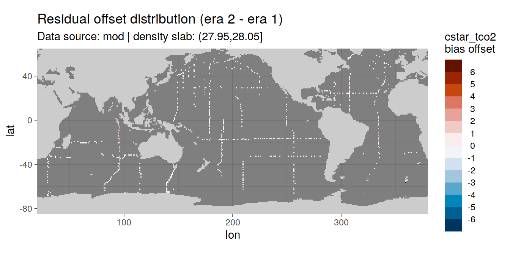

eMLR - model fitting
Jens Daniel Müller
02 July, 2021
Last updated: 2021-07-02
Checks: 7 0
Knit directory: emlr_obs_v_XXX/
This reproducible R Markdown analysis was created with workflowr (version 1.6.2). The Checks tab describes the reproducibility checks that were applied when the results were created. The Past versions tab lists the development history.
Great! Since the R Markdown file has been committed to the Git repository, you know the exact version of the code that produced these results.
Great job! The global environment was empty. Objects defined in the global environment can affect the analysis in your R Markdown file in unknown ways. For reproduciblity it’s best to always run the code in an empty environment.
The command set.seed(20200707) was run prior to running the code in the R Markdown file. Setting a seed ensures that any results that rely on randomness, e.g. subsampling or permutations, are reproducible.
Great job! Recording the operating system, R version, and package versions is critical for reproducibility.
Nice! There were no cached chunks for this analysis, so you can be confident that you successfully produced the results during this run.
Great job! Using relative paths to the files within your workflowr project makes it easier to run your code on other machines.
Great! You are using Git for version control. Tracking code development and connecting the code version to the results is critical for reproducibility.
The results in this page were generated with repository version a2c1536. See the Past versions tab to see a history of the changes made to the R Markdown and HTML files.
Note that you need to be careful to ensure that all relevant files for the analysis have been committed to Git prior to generating the results (you can use wflow_publish or wflow_git_commit). workflowr only checks the R Markdown file, but you know if there are other scripts or data files that it depends on. Below is the status of the Git repository when the results were generated:
Ignored files:
Ignored: .Rhistory
Ignored: .Rproj.user/
Unstaged changes:
Modified: code/Workflowr_project_managment.R
Modified: data/auxillary/params_local.rds
Note that any generated files, e.g. HTML, png, CSS, etc., are not included in this status report because it is ok for generated content to have uncommitted changes.
These are the previous versions of the repository in which changes were made to the R Markdown (analysis/eMLR_model_fitting.Rmd) and HTML (docs/eMLR_model_fitting.html) files. If you’ve configured a remote Git repository (see ?wflow_git_remote), click on the hyperlinks in the table below to view the files as they were in that past version.
| File | Version | Author | Date | Message |
|---|---|---|---|---|
| html | 955f5dc | jens-daniel-mueller | 2021-06-29 | Build site. |
| html | 9480f94 | jens-daniel-mueller | 2021-06-29 | Build site. |
| Rmd | af271b5 | jens-daniel-mueller | 2021-06-29 | plot spatial residual ditribution |
| html | 147cb07 | jens-daniel-mueller | 2021-06-29 | Build site. |
| Rmd | 80ae560 | jens-daniel-mueller | 2021-06-29 | plot spatial residual ditribution |
| html | d054c39 | jens-daniel-mueller | 2021-06-24 | Build site. |
| html | 4fcd066 | jens-daniel-mueller | 2021-06-24 | Build site. |
| html | 3b6387f | jens-daniel-mueller | 2021-06-18 | Build site. |
| html | 3052a6c | jens-daniel-mueller | 2021-06-15 | Build site. |
| html | 3cb64bd | jens-daniel-mueller | 2021-06-15 | Build site. |
| html | c6b3da6 | jens-daniel-mueller | 2021-06-14 | Build site. |
| html | 48c73fc | jens-daniel-mueller | 2021-06-14 | Build site. |
| html | 439ee80 | jens-daniel-mueller | 2021-06-11 | Build site. |
| html | 33ffcab | jens-daniel-mueller | 2021-06-10 | Build site. |
| html | 7e1f407 | jens-daniel-mueller | 2021-06-10 | Build site. |
| html | 2cbe18c | jens-daniel-mueller | 2021-06-10 | added zonal mean section control plots |
| html | 69c79d0 | jens-daniel-mueller | 2021-06-08 | Build site. |
| html | 1772903 | jens-daniel-mueller | 2021-06-07 | Build site. |
| html | 594ed9a | jens-daniel-mueller | 2021-06-04 | Build site. |
| html | db7df0e | jens-daniel-mueller | 2021-06-04 | rebuild without overlapping eras |
| html | 2edc791 | jens-daniel-mueller | 2021-06-04 | Build site. |
| html | 207339d | jens-daniel-mueller | 2021-06-03 | Build site. |
| html | 315710b | jens-daniel-mueller | 2021-06-03 | include anomalous changes |
| html | be90356 | jens-daniel-mueller | 2021-06-02 | Build site. |
| html | d37a85d | jens-daniel-mueller | 2021-05-31 | Build site. |
| html | 4b7a5ee | jens-daniel-mueller | 2021-05-28 | Build site. |
| Rmd | a61014f | jens-daniel-mueller | 2021-05-28 | test run with cstar target variable |
| html | 12b455a | jens-daniel-mueller | 2021-05-27 | Build site. |
| Rmd | ee13efb | jens-daniel-mueller | 2021-05-27 | optional source of local params fully implemented |
| html | 8c736a6 | jens-daniel-mueller | 2021-05-27 | Build site. |
| Rmd | dc8e4e1 | jens-daniel-mueller | 2021-05-27 | optional source of local params implemented |
| html | 25bd183 | jens-daniel-mueller | 2021-05-26 | Build site. |
| Rmd | e2b3434 | jens-daniel-mueller | 2021-05-26 | generate seperate output |
| html | b79cb2d | jens-daniel-mueller | 2021-05-20 | Build site. |
| Rmd | 8adf952 | jens-daniel-mueller | 2021-05-20 | parallelisation tested, not succesful |
| html | 62bd574 | jens-daniel-mueller | 2021-05-20 | Build site. |
| html | 7c56c39 | jens-daniel-mueller | 2021-05-19 | Build site. |
| html | 0de759e | jens-daniel-mueller | 2021-05-13 | Build site. |
| html | 52e7583 | jens-daniel-mueller | 2021-05-12 | Build site. |
| html | 969e631 | jens-daniel-mueller | 2021-05-12 | Build site. |
| html | d2a83bc | jens-daniel-mueller | 2021-04-16 | Build site. |
| html | c0a47df | jens-daniel-mueller | 2021-04-16 | Build site. |
| html | 50290e8 | jens-daniel-mueller | 2021-04-16 | overlapping eras |
| html | a00ec94 | jens-daniel-mueller | 2021-04-16 | Build site. |
| html | b6fe355 | jens-daniel-mueller | 2021-04-16 | Build site. |
| html | 81b7c6d | jens-daniel-mueller | 2021-04-16 | Build site. |
| html | ddec5b7 | jens-daniel-mueller | 2021-04-15 | Build site. |
| html | 29edae5 | jens-daniel-mueller | 2021-04-14 | Build site. |
| html | 099d566 | jens-daniel-mueller | 2021-04-14 | Build site. |
| html | bb44686 | jens-daniel-mueller | 2021-04-14 | Build site. |
| html | bf40480 | jens-daniel-mueller | 2021-04-13 | Build site. |
| html | 9f31fe3 | jens-daniel-mueller | 2021-04-13 | Build site. |
| html | c98be84 | jens-daniel-mueller | 2021-04-13 | Build site. |
| html | 338dd3c | jens-daniel-mueller | 2021-04-09 | Build site. |
| html | a79ca2c | jens-daniel-mueller | 2021-04-09 | included model data |
| html | 7831fd3 | jens-daniel-mueller | 2021-04-09 | Build site. |
| html | 20b26d4 | jens-daniel-mueller | 2021-04-08 | Build site. |
| html | c0895f8 | jens-daniel-mueller | 2021-04-07 | Build site. |
| html | 156d5b7 | jens-daniel-mueller | 2021-04-07 | Build site. |
| html | eb827c9 | jens-daniel-mueller | 2021-04-07 | Build site. |
| html | d3c3fde | jens-daniel-mueller | 2021-03-26 | Build site. |
| Rmd | 88fa519 | jens-daniel-mueller | 2021-03-26 | included model data |
| html | 594d503 | jens-daniel-mueller | 2021-03-26 | Build site. |
| Rmd | e4ef0f6 | jens-daniel-mueller | 2021-03-26 | included model data |
| html | 06bfaf7 | jens-daniel-mueller | 2021-03-26 | Build site. |
| Rmd | 6d2102a | jens-daniel-mueller | 2021-03-26 | included model data |
| html | 2eb881a | jens-daniel-mueller | 2021-03-26 | Build site. |
| Rmd | a9e976a | jens-daniel-mueller | 2021-03-26 | included model data |
| html | 03b6009 | jens-daniel-mueller | 2021-03-23 | removed before copying template |
| html | de6256b | jens-daniel-mueller | 2021-03-23 | Build site. |
| html | f155edd | jens-daniel-mueller | 2021-03-23 | Build site. |
| html | 380d215 | jens-daniel-mueller | 2021-03-21 | Build site. |
| html | 33b385b | jens-daniel-mueller | 2021-03-20 | Build site. |
| Rmd | 6c5618b | jens-daniel-mueller | 2021-03-20 | rerun with vif threshold |
| html | 108d6b2 | jens-daniel-mueller | 2021-03-20 | Build site. |
| Rmd | 2b99ba0 | jens-daniel-mueller | 2021-03-20 | included vif removel option |
| html | 330dcd0 | jens-daniel-mueller | 2021-03-20 | Build site. |
| Rmd | 4df8990 | jens-daniel-mueller | 2021-03-20 | added vif calculation and plots |
| html | 83a13de | jens-daniel-mueller | 2021-03-20 | Build site. |
| html | cf98c6d | jens-daniel-mueller | 2021-03-16 | Build site. |
| html | a1d52ff | jens-daniel-mueller | 2021-03-15 | Build site. |
| html | 0bade3b | jens-daniel-mueller | 2021-03-15 | Build site. |
| html | 27c1f4b | jens-daniel-mueller | 2021-03-14 | Build site. |
| html | af75ebf | jens-daniel-mueller | 2021-03-14 | Build site. |
| html | 5017709 | jens-daniel-mueller | 2021-03-11 | Build site. |
| html | 585b07f | jens-daniel-mueller | 2021-03-11 | Build site. |
| html | 6482ed7 | jens-daniel-mueller | 2021-03-11 | Build site. |
| html | 85a5ed2 | jens-daniel-mueller | 2021-03-10 | Build site. |
| html | 00688a1 | jens-daniel-mueller | 2021-03-05 | Build site. |
| html | 6c0bec6 | jens-daniel-mueller | 2021-03-05 | Build site. |
| html | 3c2ec33 | jens-daniel-mueller | 2021-03-05 | Build site. |
| html | af70b94 | jens-daniel-mueller | 2021-03-04 | Build site. |
| Rmd | c9cf1fd | jens-daniel-mueller | 2021-03-04 | rebuild with NA in Cant replaced by 0 |
| html | 27ae473 | jens-daniel-mueller | 2021-02-24 | Build site. |
| Rmd | 7f77d91 | jens-daniel-mueller | 2021-02-24 | removed log10 color scale |
| html | fec3558 | jens-daniel-mueller | 2021-02-24 | Build site. |
| Rmd | 9ebedac | jens-daniel-mueller | 2021-02-24 | latitudinal residual plots |
| html | 4bc00ea | jens-daniel-mueller | 2021-02-24 | Build site. |
| Rmd | de11bfe | jens-daniel-mueller | 2021-02-24 | clean up purrr approach and residual plots |
| html | 42eca5d | jens-daniel-mueller | 2021-02-24 | Build site. |
| Rmd | 06a2f3b | jens-daniel-mueller | 2021-02-24 | purrr residual plots by basin |
| html | a1ba577 | jens-daniel-mueller | 2021-02-24 | Build site. |
| Rmd | 9ae7d87 | jens-daniel-mueller | 2021-02-24 | loop residual plots by basin |
| html | 071743d | jens-daniel-mueller | 2021-02-24 | Build site. |
| Rmd | c45672c | jens-daniel-mueller | 2021-02-24 | added residual plots |
| html | ac1a836 | jens-daniel-mueller | 2021-02-24 | Build site. |
| Rmd | 5f655e0 | jens-daniel-mueller | 2021-02-24 | added plots back to after switching to map aproach |
| html | b03fbd3 | jens-daniel-mueller | 2021-02-24 | Build site. |
| Rmd | c69736b | jens-daniel-mueller | 2021-02-24 | added plots back to after switching to map aproach |
| html | 86406d5 | jens-daniel-mueller | 2021-02-24 | Build site. |
| Rmd | 1b3c171 | jens-daniel-mueller | 2021-02-24 | introduced purrr::map to model fitting, rebuild all |
| html | 3d3b4cc | jens-daniel-mueller | 2021-02-23 | Build site. |
| Rmd | cbfc388 | jens-daniel-mueller | 2021-02-23 | introduced purrr::map to model fitting |
| html | 7b672f7 | jens-daniel-mueller | 2021-01-11 | Build site. |
| html | 33ba23c | jens-daniel-mueller | 2021-01-07 | Build site. |
| Rmd | 0ad30ba | jens-daniel-mueller | 2021-01-07 | removed GLODAP gamma filter, target variable mapped by eras+era |
| html | 318609d | jens-daniel-mueller | 2020-12-23 | adapted more variable predictor selection |
| html | 9d0b2d0 | jens-daniel-mueller | 2020-12-23 | Build site. |
| html | 0aa2b50 | jens-daniel-mueller | 2020-12-23 | remove html before duplication |
| html | 39113c3 | jens-daniel-mueller | 2020-12-23 | Build site. |
| Rmd | bef9220 | jens-daniel-mueller | 2020-12-23 | rebuild before sensitivity test |
| html | 2886da0 | jens-daniel-mueller | 2020-12-19 | Build site. |
| html | 02f0ee9 | jens-daniel-mueller | 2020-12-18 | cleaned up for copying template |
| html | 965dba3 | jens-daniel-mueller | 2020-12-18 | Build site. |
| html | 5d452fe | jens-daniel-mueller | 2020-12-18 | Build site. |
| Rmd | ca65bf5 | jens-daniel-mueller | 2020-12-18 | rebuild after final cleaning |
| html | 7bcb4eb | jens-daniel-mueller | 2020-12-18 | Build site. |
| html | d397028 | jens-daniel-mueller | 2020-12-18 | Build site. |
| Rmd | 7e1b1c0 | jens-daniel-mueller | 2020-12-18 | rebuild without na predictors |
| html | 7131186 | jens-daniel-mueller | 2020-12-17 | Build site. |
| Rmd | 737d904 | jens-daniel-mueller | 2020-12-17 | rebuild without na predictors |
| html | 22b07fb | jens-daniel-mueller | 2020-12-17 | Build site. |
| html | a84ff3c | jens-daniel-mueller | 2020-12-17 | Build site. |
| Rmd | 40369db | jens-daniel-mueller | 2020-12-17 | model selection criterion added |
| html | 5b48ef5 | jens-daniel-mueller | 2020-12-17 | Build site. |
| Rmd | e6ed2bc | jens-daniel-mueller | 2020-12-17 | plotted model results |
| html | f3a708f | jens-daniel-mueller | 2020-12-17 | Build site. |
| Rmd | 7c8ace9 | jens-daniel-mueller | 2020-12-17 | new MLR fitting routine, rmse corrected |
| html | e4ca289 | jens-daniel-mueller | 2020-12-16 | Build site. |
| Rmd | 3d5a3e2 | jens-daniel-mueller | 2020-12-16 | new MLR fitting routine |
| html | 158fe26 | jens-daniel-mueller | 2020-12-15 | Build site. |
| html | 7a9a4cb | jens-daniel-mueller | 2020-12-15 | Build site. |
| html | 61b263c | jens-daniel-mueller | 2020-12-15 | Build site. |
| html | 4d612dd | jens-daniel-mueller | 2020-12-15 | Build site. |
| html | e91cebd | jens-daniel-mueller | 2020-12-15 | Build site. |
| Rmd | d7992c4 | jens-daniel-mueller | 2020-12-15 | eMLR target variable selection |
| html | 953caf3 | jens-daniel-mueller | 2020-12-15 | Build site. |
| html | 42daf5c | jens-daniel-mueller | 2020-12-14 | Build site. |
| Rmd | 923aa7f | jens-daniel-mueller | 2020-12-14 | rebuild with new path and auto folder creation |
| html | 984697e | jens-daniel-mueller | 2020-12-12 | Build site. |
| html | 3ebff89 | jens-daniel-mueller | 2020-12-12 | Build site. |
| html | ba112d3 | jens-daniel-mueller | 2020-12-11 | Build site. |
| Rmd | 91b2b29 | jens-daniel-mueller | 2020-12-11 | selectable basinmask, try 5 |
| html | b01a367 | jens-daniel-mueller | 2020-12-09 | Build site. |
| Rmd | 71c63b0 | jens-daniel-mueller | 2020-12-09 | rerun with variable predictor assignment |
| html | 24a632f | jens-daniel-mueller | 2020-12-07 | Build site. |
| html | 92dca91 | jens-daniel-mueller | 2020-12-07 | Build site. |
| html | 6a8004b | jens-daniel-mueller | 2020-12-07 | Build site. |
| html | 70bf1a5 | jens-daniel-mueller | 2020-12-07 | Build site. |
| html | 7555355 | jens-daniel-mueller | 2020-12-07 | Build site. |
| html | 143d6fa | jens-daniel-mueller | 2020-12-07 | Build site. |
| html | abc6818 | jens-daniel-mueller | 2020-12-03 | Build site. |
| Rmd | 992ba15 | jens-daniel-mueller | 2020-12-03 | rebuild with variable inventory depth |
| html | c8c2e7b | jens-daniel-mueller | 2020-12-03 | Build site. |
| Rmd | 83203db | jens-daniel-mueller | 2020-12-03 | calculate cant with variable inventory depth |
| html | 090e4d5 | jens-daniel-mueller | 2020-12-02 | Build site. |
| html | 7c25f7a | jens-daniel-mueller | 2020-12-02 | Build site. |
| html | ec8dc38 | jens-daniel-mueller | 2020-12-02 | Build site. |
| html | c987de1 | jens-daniel-mueller | 2020-12-02 | Build site. |
| html | f8358f8 | jens-daniel-mueller | 2020-12-02 | Build site. |
| html | b03ddb8 | jens-daniel-mueller | 2020-12-02 | Build site. |
| Rmd | 9183e8f | jens-daniel-mueller | 2020-12-02 | revised assignment of era to eras |
| html | 22d0127 | jens-daniel-mueller | 2020-12-01 | Build site. |
| html | 0ff728b | jens-daniel-mueller | 2020-12-01 | Build site. |
| html | 91435ae | jens-daniel-mueller | 2020-12-01 | Build site. |
| Rmd | 17d09be | jens-daniel-mueller | 2020-12-01 | auto eras naming |
| html | cf19652 | jens-daniel-mueller | 2020-11-30 | Build site. |
| Rmd | 0895ad6 | jens-daniel-mueller | 2020-11-30 | rebuild with all plot output |
| Rmd | 2842970 | jens-daniel-mueller | 2020-11-30 | cleaned for eMLR part only |
| html | 196be51 | jens-daniel-mueller | 2020-11-30 | Build site. |
| Rmd | 7a4b015 | jens-daniel-mueller | 2020-11-30 | first rebuild on ETH server |
| Rmd | bc61ce3 | Jens Müller | 2020-11-30 | Initial commit |
1 Version ID
The results displayed on this site correspond to the Version_ID: v_XXX
2 Required data
Required are:
- cleaned and prepared GLODAPv2_2020 file
GLODAP <-
read_csv(paste(path_version_data,
"GLODAPv2.2020_MLR_fitting_ready.csv",
sep = ""))3 Predictor combinations
Find all possible combinations of following considered predictor variables:
- sal, temp, aou, nitrate, silicate, phosphate, phosphate_star
# the following code is a workaround to find all predictor combinations
# using the olsrr package and fit all models for one era, slab, and basin
i_basin <- unique(GLODAP$basin)[1]
i_era <- unique(GLODAP$era)[1]
# subset one basin and era for fitting
GLODAP_basin_era <- GLODAP %>%
filter(basin == i_basin, era == i_era,
data_source == "obs")
i_gamma_slab <- unique(GLODAP_basin_era$gamma_slab)[3]
print(i_gamma_slab)
# subset one gamma slab
GLODAP_basin_era_slab <- GLODAP_basin_era %>%
filter(gamma_slab == i_gamma_slab)
# fit the full linear model, i.e. all predictor combinations
lm_full <- lm(paste(
params_local$MLR_target,
paste(params_local$MLR_predictors, collapse = " + "),
sep = " ~ "
),
data = GLODAP_basin_era_slab)
# fit linear models for all possible predictor combinations
# unfortunately, this functions does not provide model coefficients (yet)
lm_all <- ols_step_all_possible(lm_full)
# convert to tibble
lm_all <- as_tibble(lm_all)
# format model formula
lm_all <- lm_all %>%
select(n, predictors) %>%
mutate(model = str_replace_all(predictors, " ", " + "),
model = paste(params_local$MLR_target, "~", model))
# remove helper objects
rm(i_gamma_slab,
i_era,
i_basin,
GLODAP_basin_era,
GLODAP_basin_era_slab,
lm_full)4 Apply predictor threshold
Select combinations with a total number of predictors in the range:
- Minimum: 2
- Maximum: 5
lm_all <- lm_all %>%
filter(n >= params_local$MLR_predictors_min,
n <= params_local$MLR_predictors_max)This results in a total number of MLR models of:
- 112
5 Fit all models
Individual linear regression models were fitted for the chosen target variable:
- cstar_tref
as a function of each predictor combination. Fitting was performed separately within each basin, era, and slab. Model diagnostics, such as the root mean squared error (RMSE), were calculated for each fitted model.
library(furrr)
library(purrr)
map(c("hello", "world"), ~.x)
future_map(c("hello", "world"), ~.x)
library(tictoc)
plan(sequential)
tic()
nothingness <- future_map(c(2, 2, 2), ~Sys.sleep(.x))
toc()
plan(multisession, workers = 3)
tic()
nothingness <- future_map(c(2, 2, 2), ~Sys.sleep(.x))
toc()
future_map_dbl(1:4, function(x){
Sys.sleep(1)
x^2
}, .progress = TRUE)# prepare nested data frame
GLODAP %>%
filter_all(any_vars(is.na(.)))
GLODAP_nested <- GLODAP %>%
# filter(gamma_slab %in% unique(GLODAP$gamma_slab)[c(5,6)]) %>%
nest(data = !c(gamma_slab, era, basin, data_source))
# expand with model definitions
GLODAP_nested_lm <- expand_grid(
GLODAP_nested,
lm_all#[1:3,]
)
# fit models and extract tidy model output
GLODAP_nested_lm_fit <- GLODAP_nested_lm %>%
mutate(
fit = map2(.x = data, .y = model,
~ lm(as.formula(.y), data = .x)),
tidied = map(fit, tidy),
glanced = map(fit, glance),
augmented = map(fit, augment),
vif = map(fit, ols_vif_tol)
)
# test parallel processing
# expand with model definitions
# test multidplyr
# library(parallel)
# library(multidplyr)
#
# n_cores <- detectCores()
# system.time(
# cluster <- new_cluster(n_cores - 2)
# )
#
# cluster
#
# system.time(
# GLODAP_nested_lm_part <-
# GLODAP_nested_lm %>%
# #group_by(gamma_slab, era, basin, data_source, model, predictors, n) %>%
# partition(cluster)
# )
#
#
# GLODAP_nested_lm
# GLODAP_nested_lm_part
#
# system.time(cluster %>%
# cluster_library(c("tidyverse",
# "broom",
# "olsrr",
# "purrr")))
#
# cluster_call(cluster, search())
#
# system.time(
# GLODAP_nested_lm_fit <- GLODAP_nested_lm_part %>%
# mutate(
# fit = map2(.x = data, .y = model,
# ~ lm(as.formula(.y), data = .x)),
# tidied = map(fit, tidy),
# glanced = map(fit, glance),
# augmented = map(fit, augment),
# vif = map(fit, ols_vif_tol)
# )
# )
#
# system.time(
# # extract glanced model output (model diagnostics, such as AIC)
# GLODAP_glanced <- GLODAP_nested_lm_fit %>%
# select(-c(data, fit, tidied, augmented, vif))
# # unnest(glanced) %>%
# # rename(n_predictors = n)
# )
#
#
# system.time(
# GLODAP_nested_lm_fit <- GLODAP_nested_lm_fit %>%
# collect()
# )
### test furrr
# library(furrr)
#
# plan(multisession, workers = 10)
#
# tic()
# GLODAP_nested_lm_fit_furrr <- GLODAP_nested_lm %>%
# mutate(
# fit = future_map2(.x = data, .y = model,
# ~ lm(as.formula(.y), data = .x)),
# tidied = future_map(fit, tidy),
# glanced = future_map(fit, glance),
# augmented = future_map(fit, augment),
# vif = future_map(fit, ols_vif_tol)
# )
# toc()
#
# plan(sequential)
# print(object.size(GLODAP_nested), units = "MB")
# print(object.size(GLODAP_nested_lm), units = "MB")
# print(object.size(GLODAP_nested_lm_fit), units = "MB")6 Tidy models
# extract glanced model output (model diagnostics, such as AIC)
GLODAP_glanced <- GLODAP_nested_lm_fit %>%
select(-c(data, fit, tidied, augmented, vif)) %>%
unnest(glanced) %>%
rename(n_predictors = n)
# extract tidy model output (model coefficients)
GLODAP_tidy <- GLODAP_nested_lm_fit %>%
select(-c(data, fit, glanced, augmented, vif)) %>%
unnest(tidied)
# extract augmented model output (fitted values and residuals)
GLODAP_augmented <- GLODAP_nested_lm_fit %>%
select(-c(data, fit, tidied, glanced, vif)) %>%
unnest(augmented)
# print(object.size(GLODAP_augmented), units = "MB")
# extract VIC from output
GLODAP_glanced_vif <- GLODAP_nested_lm_fit %>%
select(-c(data, fit, tidied, augmented, glanced)) %>%
unnest(vif)
# calculte max vif per model
GLODAP_glanced_vif_max <- GLODAP_glanced_vif %>%
group_by(data_source, era, basin, gamma_slab, model, n) %>%
summarise(vif_max = max(VIF)) %>%
ungroup()
# calculate RMSE from augmented output
GLODAP_glanced_rmse <- GLODAP_augmented %>%
group_by(data_source, era, basin, gamma_slab, model) %>%
summarise(rmse = sqrt(c(crossprod(.resid)) / length(.resid))) %>%
ungroup()
# add RMSE and vif_max to glanced output
GLODAP_glanced <- full_join(GLODAP_glanced, GLODAP_glanced_rmse)
GLODAP_glanced <- full_join(GLODAP_glanced, GLODAP_glanced_vif_max)
rm(GLODAP_glanced_rmse)
rm(GLODAP_glanced_vif_max)
# extract input data
GLODAP_data <- GLODAP_nested_lm_fit %>%
select(-c(fit, tidied, glanced, augmented, vif)) %>%
unnest(data)
# append input data with augmented data
GLODAP_augmented <- bind_cols(
GLODAP_data,
GLODAP_augmented %>% select(.fitted, .resid)
)
rm(GLODAP, GLODAP_nested, GLODAP_nested_lm, GLODAP_nested_lm_fit, lm_all,
GLODAP_data)7 Prepare coeffcients
Coefficients are prepared for the mapping of Cant and the chosen target variable.
7.1 VIF threshold
To avoid multicollinearity among predictors, models were excluded with a VIF above:
- 500
After removing models affected by multicollinearity, the targeted number of MLRs (10) was undercut in following fitting units:
GLODAP_glanced_clean <- GLODAP_glanced %>%
filter(vif_max <= params_local$vif_max)
GLODAP_glanced_clean %>%
group_by(data_source, era, basin, gamma_slab) %>%
count() %>%
filter(n < params_local$MLR_number)# A tibble: 0 x 5
# Groups: data_source, era, basin, gamma_slab [0]
# … with 5 variables: data_source <chr>, era <chr>, basin <chr>,
# gamma_slab <chr>, n <int>7.2 Predictor selection
Within each basin and slab, the following number of best linear regression models was selected:
- 10
The criterion used to select the best models was:
- rmse
The criterion was summed up for two adjacent eras, and the models with lowest summed values were selected.
# calculate RMSE sum for adjacent eras
lm_all_eras <- GLODAP_glanced_clean %>%
select(data_source, basin, gamma_slab, model, era, AIC, BIC, rmse) %>%
arrange(era) %>%
group_by(data_source, basin, gamma_slab, model) %>%
mutate(eras = paste(lag(era), era, sep = " --> "),
rmse_sum = rmse + lag(rmse),
aic_sum = AIC + lag(AIC),
bic_sum = BIC + lag(BIC)
) %>%
ungroup() %>%
select(-c(era)) %>%
drop_na()
# subset models with lowest summed criterion
# chose which criterion is applied
if (params_local$MLR_criterion == "aic") {
lm_best_eras <- lm_all_eras %>%
group_by(data_source, basin, gamma_slab, eras) %>%
slice_min(order_by = aic_sum,
with_ties = FALSE,
n = params_local$MLR_number) %>%
ungroup() %>%
arrange(basin, gamma_slab, eras, model)
}
if (params_local$MLR_criterion == "bic") {
lm_best_eras <- lm_all_eras %>%
group_by(data_source, basin, gamma_slab, eras) %>%
slice_min(order_by = bic_sum,
with_ties = FALSE,
n = params_local$MLR_number) %>%
ungroup() %>%
arrange(basin, gamma_slab, eras, model)
}
if (params_local$MLR_criterion == "rmse") {
lm_best_eras <- lm_all_eras %>%
group_by(data_source, basin, gamma_slab, eras) %>%
slice_min(order_by = rmse_sum,
with_ties = FALSE,
n = params_local$MLR_number) %>%
ungroup() %>%
arrange(basin, gamma_slab, eras, model)
}
# print table
lm_best_eras %>%
kable() %>%
add_header_above() %>%
kable_styling() %>%
scroll_box(width = "100%", height = "400px")| data_source | basin | gamma_slab | model | AIC | BIC | rmse | eras | rmse_sum | aic_sum | bic_sum |
|---|---|---|---|---|---|---|---|---|---|---|
| obs | Atlantic | (-Inf,26] | cstar_tref ~ aou + nitrate + silicate + phosphate + phosphate_star | 964.9416 | 984.9058 | 9.9311581 | 2000-2009 –> 2010-2019 | 21.8080875 | 1601.9074 | 1638.5458 |
| mod | Atlantic | (-Inf,26] | cstar_tref ~ sal + aou + nitrate + phosphate + phosphate_star | 156.5905 | 171.7027 | 0.7371599 | 2000-2009 –> 2010-2019 | 4.6360224 | 871.0556 | 906.0217 |
| mod | Atlantic | (-Inf,26] | cstar_tref ~ sal + aou + silicate + phosphate + phosphate_star | 174.4010 | 189.5131 | 0.8472106 | 2000-2009 –> 2010-2019 | 5.0351998 | 906.8931 | 941.8593 |
| mod | Atlantic | (-Inf,26] | cstar_tref ~ sal + nitrate + phosphate + phosphate_star | 154.6556 | 167.6089 | 0.7375349 | 2000-2009 –> 2010-2019 | 4.8337469 | 879.5639 | 909.5349 |
| mod | Atlantic | (-Inf,26] | cstar_tref ~ sal + nitrate + silicate + phosphate + phosphate_star | 104.6588 | 119.7710 | 0.4913167 | 2000-2009 –> 2010-2019 | 4.3093188 | 813.8426 | 848.8088 |
| mod | Atlantic | (-Inf,26] | cstar_tref ~ sal + nitrate + silicate + phosphate_star | 112.9771 | 125.9304 | 0.5325624 | 2000-2009 –> 2010-2019 | 4.9930718 | 859.3558 | 889.3268 |
| mod | Atlantic | (-Inf,26] | cstar_tref ~ sal + temp + aou + nitrate + phosphate | 156.6579 | 171.7701 | 0.7375483 | 2000-2009 –> 2010-2019 | 5.0482183 | 896.4259 | 931.3921 |
| obs | Atlantic | (-Inf,26] | cstar_tref ~ sal + temp + aou + nitrate + phosphate | 969.2504 | 989.2146 | 10.0997258 | 2000-2009 –> 2010-2019 | 22.1429044 | 1608.4403 | 1645.0787 |
| obs | Atlantic | (-Inf,26] | cstar_tref ~ sal + temp + aou + nitrate + phosphate_star | 968.5462 | 988.5104 | 10.0719814 | 2000-2009 –> 2010-2019 | 22.1291531 | 1607.9219 | 1644.5603 |
| mod | Atlantic | (-Inf,26] | cstar_tref ~ sal + temp + aou + nitrate + silicate | 105.4928 | 120.6050 | 0.4945283 | 2000-2009 –> 2010-2019 | 4.9173513 | 851.7334 | 886.6996 |
| mod | Atlantic | (-Inf,26] | cstar_tref ~ sal + temp + aou + silicate + phosphate | 177.6056 | 192.7178 | 0.8686896 | 2000-2009 –> 2010-2019 | 4.8300817 | 896.0802 | 931.0464 |
| mod | Atlantic | (-Inf,26] | cstar_tref ~ sal + temp + nitrate + phosphate + phosphate_star | 156.5295 | 171.6417 | 0.7368089 | 2000-2009 –> 2010-2019 | 4.6401235 | 871.2822 | 906.2484 |
| obs | Atlantic | (-Inf,26] | cstar_tref ~ sal + temp + nitrate + phosphate + phosphate_star | 968.5378 | 988.5021 | 10.0716540 | 2000-2009 –> 2010-2019 | 22.1343106 | 1607.9863 | 1644.6247 |
| mod | Atlantic | (-Inf,26] | cstar_tref ~ sal + temp + nitrate + silicate + phosphate_star | 111.4276 | 126.5398 | 0.5179971 | 2000-2009 –> 2010-2019 | 4.7825725 | 848.4864 | 883.4526 |
| obs | Atlantic | (-Inf,26] | cstar_tref ~ temp + aou + nitrate + phosphate | 967.3615 | 984.4737 | 10.1041094 | 2000-2009 –> 2010-2019 | 22.1494687 | 1604.5804 | 1635.9847 |
| obs | Atlantic | (-Inf,26] | cstar_tref ~ temp + aou + nitrate + phosphate_star | 966.5557 | 983.6679 | 10.0723581 | 2000-2009 –> 2010-2019 | 22.1352751 | 1604.0077 | 1635.4120 |
| obs | Atlantic | (-Inf,26] | cstar_tref ~ temp + aou + nitrate + silicate + phosphate | 963.1480 | 983.1122 | 9.8618213 | 2000-2009 –> 2010-2019 | 21.7577568 | 1600.3697 | 1637.0081 |
| obs | Atlantic | (-Inf,26] | cstar_tref ~ temp + aou + nitrate + silicate + phosphate_star | 962.1761 | 982.1403 | 9.8244528 | 2000-2009 –> 2010-2019 | 21.7386226 | 1599.6428 | 1636.2812 |
| obs | Atlantic | (-Inf,26] | cstar_tref ~ temp + nitrate + phosphate + phosphate_star | 966.5458 | 983.6579 | 10.0719648 | 2000-2009 –> 2010-2019 | 22.1419126 | 1604.0909 | 1635.4953 |
| obs | Atlantic | (-Inf,26] | cstar_tref ~ temp + nitrate + silicate + phosphate + phosphate_star | 962.2596 | 982.2238 | 9.8276554 | 2000-2009 –> 2010-2019 | 21.7562871 | 1599.9204 | 1636.5588 |
| obs | Atlantic | (26,26.5] | cstar_tref ~ aou + nitrate + phosphate + phosphate_star | 5219.7901 | 5247.6058 | 7.3761112 | 2000-2009 –> 2010-2019 | 16.9885932 | 9893.2033 | 9947.7219 |
| obs | Atlantic | (26,26.5] | cstar_tref ~ aou + nitrate + silicate + phosphate + phosphate_star | 5216.5669 | 5249.0185 | 7.3508744 | 2000-2009 –> 2010-2019 | 16.9633504 | 9891.9794 | 9955.5843 |
| obs | Atlantic | (26,26.5] | cstar_tref ~ aou + phosphate + phosphate_star | 5220.8708 | 5244.0505 | 7.3910369 | 2000-2009 –> 2010-2019 | 17.0405160 | 9897.1474 | 9942.5795 |
| obs | Atlantic | (26,26.5] | cstar_tref ~ aou + silicate + phosphate + phosphate_star | 5222.3778 | 5250.1935 | 7.3886465 | 2000-2009 –> 2010-2019 | 17.0330162 | 9899.9839 | 9954.5024 |
| mod | Atlantic | (26,26.5] | cstar_tref ~ sal + aou + nitrate + phosphate + phosphate_star | 1949.5977 | 1976.6828 | 3.7245889 | 2000-2009 –> 2010-2019 | 8.1622142 | 4127.9368 | 4182.4541 |
| mod | Atlantic | (26,26.5] | cstar_tref ~ sal + aou + silicate + phosphate + phosphate_star | 1930.0549 | 1957.1400 | 3.6231859 | 2000-2009 –> 2010-2019 | 8.5631622 | 4188.1814 | 4242.6988 |
| mod | Atlantic | (26,26.5] | cstar_tref ~ sal + temp + aou + nitrate + phosphate | 1950.5032 | 1977.5883 | 3.7293556 | 2000-2009 –> 2010-2019 | 8.1538558 | 4126.6385 | 4181.1558 |
| obs | Atlantic | (26,26.5] | cstar_tref ~ sal + temp + aou + nitrate + phosphate | 5237.5546 | 5270.0062 | 7.4528071 | 2000-2009 –> 2010-2019 | 17.0488873 | 9910.8059 | 9974.4108 |
| mod | Atlantic | (26,26.5] | cstar_tref ~ sal + temp + aou + nitrate + phosphate_star | 1950.6704 | 1977.7555 | 3.7302366 | 2000-2009 –> 2010-2019 | 8.1822727 | 4131.4217 | 4185.9390 |
| obs | Atlantic | (26,26.5] | cstar_tref ~ sal + temp + aou + nitrate + phosphate_star | 5249.6197 | 5282.0713 | 7.5120429 | 2000-2009 –> 2010-2019 | 17.1529519 | 9928.7714 | 9992.3763 |
| mod | Atlantic | (26,26.5] | cstar_tref ~ sal + temp + aou + nitrate + silicate | 1973.7796 | 2000.8646 | 3.8540005 | 2000-2009 –> 2010-2019 | 8.7185317 | 4220.4558 | 4274.9731 |
| obs | Atlantic | (26,26.5] | cstar_tref ~ sal + temp + aou + phosphate | 5239.3284 | 5267.1441 | 7.4712847 | 2000-2009 –> 2010-2019 | 17.0876867 | 9913.2578 | 9967.7763 |
| mod | Atlantic | (26,26.5] | cstar_tref ~ sal + temp + aou + silicate + phosphate | 1933.5856 | 1960.6706 | 3.6412991 | 2000-2009 –> 2010-2019 | 8.6678501 | 4204.6380 | 4259.1553 |
| obs | Atlantic | (26,26.5] | cstar_tref ~ sal + temp + aou + silicate + phosphate | 5240.9930 | 5273.4447 | 7.4696408 | 2000-2009 –> 2010-2019 | 17.0841639 | 9916.6751 | 9980.2800 |
| mod | Atlantic | (26,26.5] | cstar_tref ~ sal + temp + aou + silicate + phosphate_star | 1934.2917 | 1961.3768 | 3.6449328 | 2000-2009 –> 2010-2019 | 8.7169787 | 4212.0477 | 4266.5651 |
| mod | Atlantic | (26,26.5] | cstar_tref ~ sal + temp + nitrate + phosphate + phosphate_star | 1951.1594 | 1978.2444 | 3.7328136 | 2000-2009 –> 2010-2019 | 8.2148713 | 4136.9108 | 4191.4282 |
| mod | Atlantic | (26,26.5] | cstar_tref ~ sal + temp + nitrate + silicate + phosphate_star | 1934.8740 | 1961.9590 | 3.6479315 | 2000-2009 –> 2010-2019 | 8.6529367 | 4202.7305 | 4257.2478 |
| mod | Atlantic | (26,26.5] | cstar_tref ~ sal + temp + silicate + phosphate + phosphate_star | 1934.6073 | 1961.6923 | 3.6465576 | 2000-2009 –> 2010-2019 | 8.7217052 | 4212.8181 | 4267.3355 |
| obs | Atlantic | (26,26.5] | cstar_tref ~ temp + aou + nitrate + phosphate | 5235.5593 | 5263.3749 | 7.4528297 | 2000-2009 –> 2010-2019 | 17.1227527 | 9916.5152 | 9971.0337 |
| obs | Atlantic | (26,26.5] | cstar_tref ~ temp + aou + nitrate + silicate + phosphate | 5232.3546 | 5264.8062 | 7.4274208 | 2000-2009 –> 2010-2019 | 17.0968480 | 9915.2456 | 9978.8506 |
| obs | Atlantic | (26.5,26.75] | cstar_tref ~ sal + temp + aou + nitrate + phosphate | 6523.1470 | 6557.6742 | 5.7907113 | 2000-2009 –> 2010-2019 | 11.8203401 | 12164.4890 | 12232.4357 |
| mod | Atlantic | (26.5,26.75] | cstar_tref ~ sal + temp + aou + nitrate + phosphate_star | 3373.5904 | 3404.3455 | 4.0151853 | 2000-2009 –> 2010-2019 | 7.4868541 | 6498.6447 | 6559.9892 |
| obs | Atlantic | (26.5,26.75] | cstar_tref ~ sal + temp + aou + nitrate + phosphate_star | 6519.9904 | 6554.5175 | 5.7818014 | 2000-2009 –> 2010-2019 | 11.8242022 | 12165.0353 | 12232.9820 |
| obs | Atlantic | (26.5,26.75] | cstar_tref ~ sal + temp + aou + phosphate | 6521.6330 | 6551.2277 | 5.7920841 | 2000-2009 –> 2010-2019 | 11.8345025 | 12164.6830 | 12222.9230 |
| obs | Atlantic | (26.5,26.75] | cstar_tref ~ sal + temp + aou + phosphate_star | 6518.5915 | 6548.1861 | 5.7834970 | 2000-2009 –> 2010-2019 | 11.8399772 | 12165.7093 | 12223.9493 |
| mod | Atlantic | (26.5,26.75] | cstar_tref ~ sal + temp + aou + silicate + phosphate | 3397.6759 | 3428.4310 | 4.0968645 | 2000-2009 –> 2010-2019 | 7.4944862 | 6497.5485 | 6558.8930 |
| obs | Atlantic | (26.5,26.75] | cstar_tref ~ sal + temp + aou + silicate + phosphate | 6521.9997 | 6556.5268 | 5.7874712 | 2000-2009 –> 2010-2019 | 11.8124061 | 12161.9788 | 12229.9255 |
| mod | Atlantic | (26.5,26.75] | cstar_tref ~ sal + temp + aou + silicate + phosphate_star | 3405.6812 | 3436.4364 | 4.1243784 | 2000-2009 –> 2010-2019 | 7.4977314 | 6497.1810 | 6558.5255 |
| obs | Atlantic | (26.5,26.75] | cstar_tref ~ sal + temp + aou + silicate + phosphate_star | 6518.9595 | 6553.4866 | 5.7788946 | 2000-2009 –> 2010-2019 | 11.8118949 | 12161.2797 | 12229.2264 |
| mod | Atlantic | (26.5,26.75] | cstar_tref ~ sal + temp + nitrate + phosphate + phosphate_star | 3377.6731 | 3408.4282 | 4.0289153 | 2000-2009 –> 2010-2019 | 7.4241719 | 6476.7324 | 6538.0768 |
| obs | Atlantic | (26.5,26.75] | cstar_tref ~ sal + temp + nitrate + phosphate + phosphate_star | 6519.9000 | 6554.4271 | 5.7815466 | 2000-2009 –> 2010-2019 | 11.8272279 | 12165.8948 | 12233.8415 |
| mod | Atlantic | (26.5,26.75] | cstar_tref ~ sal + temp + silicate + phosphate + phosphate_star | 3406.9399 | 3437.6950 | 4.1287211 | 2000-2009 –> 2010-2019 | 7.5037061 | 6499.0046 | 6560.3490 |
| obs | Atlantic | (26.5,26.75] | cstar_tref ~ sal + temp + silicate + phosphate + phosphate_star | 6518.8626 | 6553.3897 | 5.7786215 | 2000-2009 –> 2010-2019 | 11.8137132 | 12161.7893 | 12229.7360 |
| mod | Atlantic | (26.5,26.75] | cstar_tref ~ temp + aou + nitrate + phosphate_star | 3371.6632 | 3398.0247 | 4.0154298 | 2000-2009 –> 2010-2019 | 7.5261240 | 6507.7739 | 6560.3548 |
| mod | Atlantic | (26.5,26.75] | cstar_tref ~ temp + aou + nitrate + silicate + phosphate | 3358.6269 | 3389.3821 | 3.9652634 | 2000-2009 –> 2010-2019 | 7.4167800 | 6476.8816 | 6538.2260 |
| obs | Atlantic | (26.5,26.75] | cstar_tref ~ temp + aou + nitrate + silicate + phosphate | 6519.8959 | 6554.4231 | 5.7815351 | 2000-2009 –> 2010-2019 | 11.8315359 | 12167.1406 | 12235.0873 |
| mod | Atlantic | (26.5,26.75] | cstar_tref ~ temp + aou + nitrate + silicate + phosphate_star | 3363.7083 | 3394.4634 | 3.9821462 | 2000-2009 –> 2010-2019 | 7.3670205 | 6459.1905 | 6520.5349 |
| obs | Atlantic | (26.5,26.75] | cstar_tref ~ temp + aou + nitrate + silicate + phosphate_star | 6516.5985 | 6551.1257 | 5.7722430 | 2000-2009 –> 2010-2019 | 11.8399387 | 12168.9540 | 12236.9007 |
| mod | Atlantic | (26.5,26.75] | cstar_tref ~ temp + nitrate + phosphate + phosphate_star | 3375.6764 | 3402.0379 | 4.0289262 | 2000-2009 –> 2010-2019 | 7.4546485 | 6483.1694 | 6535.7503 |
| mod | Atlantic | (26.5,26.75] | cstar_tref ~ temp + nitrate + silicate + phosphate + phosphate_star | 3367.8106 | 3398.5657 | 3.9958284 | 2000-2009 –> 2010-2019 | 7.3474931 | 6451.7767 | 6513.1212 |
| mod | Atlantic | (26.75,27] | cstar_tref ~ aou + nitrate + silicate + phosphate + phosphate_star | 5156.9447 | 5192.1792 | 2.3365459 | 2000-2009 –> 2010-2019 | 4.7889726 | 9752.0254 | 9821.5368 |
| mod | Atlantic | (26.75,27] | cstar_tref ~ sal + aou + nitrate + silicate + phosphate | 5360.1688 | 5395.4034 | 2.5555789 | 2000-2009 –> 2010-2019 | 4.9813355 | 9933.6211 | 10003.1325 |
| mod | Atlantic | (26.75,27] | cstar_tref ~ sal + aou + silicate + phosphate | 5580.8807 | 5611.0817 | 2.8192651 | 2000-2009 –> 2010-2019 | 5.2531387 | 10158.9406 | 10218.5218 |
| obs | Atlantic | (26.75,27] | cstar_tref ~ sal + temp + aou + nitrate + phosphate | 7595.3172 | 7630.8774 | 5.8817336 | 2000-2009 –> 2010-2019 | 12.7790587 | 14088.3569 | 14158.0364 |
| obs | Atlantic | (26.75,27] | cstar_tref ~ sal + temp + aou + nitrate + phosphate_star | 7575.5850 | 7611.1452 | 5.8330892 | 2000-2009 –> 2010-2019 | 12.7230784 | 14066.5666 | 14136.2461 |
| obs | Atlantic | (26.75,27] | cstar_tref ~ sal + temp + aou + phosphate_star | 7583.3676 | 7613.8478 | 5.8571551 | 2000-2009 –> 2010-2019 | 12.7626561 | 14076.6984 | 14136.4238 |
| mod | Atlantic | (26.75,27] | cstar_tref ~ sal + temp + aou + silicate + phosphate | 5546.5216 | 5581.7562 | 2.7744288 | 2000-2009 –> 2010-2019 | 4.9825265 | 9934.0179 | 10003.5293 |
| mod | Atlantic | (26.75,27] | cstar_tref ~ sal + temp + aou + silicate + phosphate_star | 5572.2147 | 5607.4493 | 2.8060377 | 2000-2009 –> 2010-2019 | 5.0804092 | 10018.2051 | 10087.7165 |
| obs | Atlantic | (26.75,27] | cstar_tref ~ sal + temp + aou + silicate + phosphate_star | 7584.4334 | 7619.9936 | 5.8548526 | 2000-2009 –> 2010-2019 | 12.7599986 | 14079.6648 | 14149.3444 |
| obs | Atlantic | (26.75,27] | cstar_tref ~ sal + temp + nitrate + phosphate + phosphate_star | 7575.9655 | 7611.5257 | 5.8340234 | 2000-2009 –> 2010-2019 | 12.7241078 | 14066.9738 | 14136.6534 |
| obs | Atlantic | (26.75,27] | cstar_tref ~ sal + temp + phosphate + phosphate_star | 7583.6722 | 7614.1524 | 5.8579059 | 2000-2009 –> 2010-2019 | 12.7632299 | 14076.9534 | 14136.6787 |
| mod | Atlantic | (26.75,27] | cstar_tref ~ sal + temp + silicate + phosphate + phosphate_star | 5581.6865 | 5616.9211 | 2.8177810 | 2000-2009 –> 2010-2019 | 5.1314122 | 10061.5294 | 10131.0408 |
| obs | Atlantic | (26.75,27] | cstar_tref ~ sal + temp + silicate + phosphate + phosphate_star | 7584.7398 | 7620.3000 | 5.8556077 | 2000-2009 –> 2010-2019 | 12.7605914 | 14079.9257 | 14149.6053 |
| obs | Atlantic | (26.75,27] | cstar_tref ~ temp + aou + nitrate + phosphate_star | 7573.6479 | 7604.1281 | 5.8332437 | 2000-2009 –> 2010-2019 | 12.7803027 | 14078.5829 | 14138.3082 |
| mod | Atlantic | (26.75,27] | cstar_tref ~ temp + aou + nitrate + silicate + phosphate | 5182.2990 | 5217.5335 | 2.3628131 | 2000-2009 –> 2010-2019 | 4.5860931 | 9583.3489 | 9652.8603 |
| mod | Atlantic | (26.75,27] | cstar_tref ~ temp + aou + nitrate + silicate + phosphate_star | 5196.2097 | 5231.4443 | 2.3773499 | 2000-2009 –> 2010-2019 | 4.5993957 | 9596.1613 | 9665.6727 |
| obs | Atlantic | (26.75,27] | cstar_tref ~ temp + aou + nitrate + silicate + phosphate_star | 7572.6740 | 7608.2342 | 5.8259470 | 2000-2009 –> 2010-2019 | 12.7728572 | 14079.5675 | 14149.2471 |
| mod | Atlantic | (26.75,27] | cstar_tref ~ temp + aou + silicate + phosphate | 5701.6892 | 5731.8902 | 2.9735091 | 2000-2009 –> 2010-2019 | 5.3093698 | 10198.4461 | 10258.0273 |
| mod | Atlantic | (26.75,27] | cstar_tref ~ temp + nitrate + silicate + phosphate + phosphate_star | 5224.9473 | 5260.1819 | 2.4076648 | 2000-2009 –> 2010-2019 | 4.6655123 | 9656.5146 | 9726.0260 |
| obs | Atlantic | (26.75,27] | cstar_tref ~ temp + nitrate + silicate + phosphate + phosphate_star | 7573.0416 | 7608.6018 | 5.8268485 | 2000-2009 –> 2010-2019 | 12.7736900 | 14079.9160 | 14149.5955 |
| mod | Atlantic | (27,27.25] | cstar_tref ~ sal + aou + nitrate + silicate | 6033.4425 | 6064.4632 | 2.4522375 | 2000-2009 –> 2010-2019 | 5.0025160 | 11076.0239 | 11136.8859 |
| mod | Atlantic | (27,27.25] | cstar_tref ~ sal + aou + nitrate + silicate + phosphate | 5608.8748 | 5645.0656 | 2.0811828 | 2000-2009 –> 2010-2019 | 4.4104822 | 10459.8597 | 10530.8654 |
| mod | Atlantic | (27,27.25] | cstar_tref ~ sal + aou + nitrate + silicate + phosphate_star | 5812.8999 | 5849.0907 | 2.2510743 | 2000-2009 –> 2010-2019 | 4.6664870 | 10741.4272 | 10812.4329 |
| obs | Atlantic | (27,27.25] | cstar_tref ~ sal + temp + aou + nitrate + phosphate_star | 10773.8549 | 10811.6164 | 6.6042695 | 2000-2009 –> 2010-2019 | 13.8176845 | 19797.8692 | 19871.9654 |
| mod | Atlantic | (27,27.25] | cstar_tref ~ sal + temp + aou + nitrate + silicate | 5684.3977 | 5720.5885 | 2.1425220 | 2000-2009 –> 2010-2019 | 4.4449427 | 10510.5911 | 10581.5968 |
| obs | Atlantic | (27,27.25] | cstar_tref ~ sal + temp + aou + phosphate_star | 10806.8958 | 10839.2628 | 6.6757723 | 2000-2009 –> 2010-2019 | 13.8899698 | 19829.1979 | 19892.7090 |
| mod | Atlantic | (27,27.25] | cstar_tref ~ sal + temp + aou + silicate + phosphate_star | 5950.9760 | 5987.1669 | 2.3738516 | 2000-2009 –> 2010-2019 | 5.0552370 | 11102.6373 | 11173.6430 |
| obs | Atlantic | (27,27.25] | cstar_tref ~ sal + temp + aou + silicate + phosphate_star | 10808.8349 | 10846.5964 | 6.6756473 | 2000-2009 –> 2010-2019 | 13.8893305 | 19832.9478 | 19907.0440 |
| obs | Atlantic | (27,27.25] | cstar_tref ~ sal + temp + nitrate + phosphate + phosphate_star | 10778.2734 | 10816.0349 | 6.6132433 | 2000-2009 –> 2010-2019 | 13.8333568 | 19804.7511 | 19878.8472 |
| obs | Atlantic | (27,27.25] | cstar_tref ~ sal + temp + phosphate + phosphate_star | 10810.8425 | 10843.2095 | 6.6838740 | 2000-2009 –> 2010-2019 | 13.9047132 | 19835.5869 | 19899.0979 |
| mod | Atlantic | (27,27.25] | cstar_tref ~ sal + temp + silicate + phosphate + phosphate_star | 5963.3041 | 5999.4949 | 2.3851341 | 2000-2009 –> 2010-2019 | 5.0546351 | 11105.4771 | 11176.4828 |
| obs | Atlantic | (27,27.25] | cstar_tref ~ sal + temp + silicate + phosphate + phosphate_star | 10812.7868 | 10850.5482 | 6.6837596 | 2000-2009 –> 2010-2019 | 13.9040994 | 19839.3476 | 19913.4438 |
| obs | Atlantic | (27,27.25] | cstar_tref ~ temp + aou + nitrate + phosphate_star | 10776.6594 | 10809.0264 | 6.6140278 | 2000-2009 –> 2010-2019 | 13.8358493 | 19801.7648 | 19865.2758 |
| mod | Atlantic | (27,27.25] | cstar_tref ~ temp + aou + nitrate + silicate | 5764.8762 | 5795.8970 | 2.2115777 | 2000-2009 –> 2010-2019 | 4.5767638 | 10646.5189 | 10707.3808 |
| mod | Atlantic | (27,27.25] | cstar_tref ~ temp + aou + nitrate + silicate + phosphate | 5764.2735 | 5800.4644 | 2.2093650 | 2000-2009 –> 2010-2019 | 4.5741247 | 10647.5311 | 10718.5367 |
| mod | Atlantic | (27,27.25] | cstar_tref ~ temp + aou + nitrate + silicate + phosphate_star | 5758.2249 | 5794.4157 | 2.2042311 | 2000-2009 –> 2010-2019 | 4.5553996 | 10629.1706 | 10700.1762 |
| obs | Atlantic | (27,27.25] | cstar_tref ~ temp + aou + nitrate + silicate + phosphate_star | 10777.0352 | 10814.7966 | 6.6107272 | 2000-2009 –> 2010-2019 | 13.8314526 | 19803.7377 | 19877.8339 |
| obs | Atlantic | (27,27.25] | cstar_tref ~ temp + nitrate + phosphate + phosphate_star | 10782.2387 | 10814.6057 | 6.6253779 | 2000-2009 –> 2010-2019 | 13.8523388 | 19809.2322 | 19872.7432 |
| mod | Atlantic | (27,27.25] | cstar_tref ~ temp + nitrate + silicate + phosphate + phosphate_star | 5656.2060 | 5692.3969 | 2.1194163 | 2000-2009 –> 2010-2019 | 4.2502518 | 10316.9730 | 10387.9786 |
| obs | Atlantic | (27,27.25] | cstar_tref ~ temp + nitrate + silicate + phosphate + phosphate_star | 10782.7165 | 10820.4780 | 6.6222793 | 2000-2009 –> 2010-2019 | 13.8482229 | 19811.3363 | 19885.4325 |
| mod | Atlantic | (27.25,27.5] | cstar_tref ~ sal + aou + nitrate + silicate | 9011.1887 | 9043.7480 | 3.5232767 | 2000-2009 –> 2010-2019 | 6.8598772 | 16936.8440 | 17001.3145 |
| mod | Atlantic | (27.25,27.5] | cstar_tref ~ sal + aou + nitrate + silicate + phosphate | 9011.7947 | 9049.7805 | 3.5218152 | 2000-2009 –> 2010-2019 | 6.8160253 | 16900.8871 | 16976.1027 |
| mod | Atlantic | (27.25,27.5] | cstar_tref ~ sal + aou + nitrate + silicate + phosphate_star | 8998.6437 | 9036.6296 | 3.5080579 | 2000-2009 –> 2010-2019 | 6.8413342 | 16923.2928 | 16998.5084 |
| mod | Atlantic | (27.25,27.5] | cstar_tref ~ sal + temp + aou + nitrate + phosphate_star | 9465.1718 | 9503.1577 | 4.0305797 | 2000-2009 –> 2010-2019 | 7.4223534 | 17442.2911 | 17517.5067 |
| obs | Atlantic | (27.25,27.5] | cstar_tref ~ sal + temp + aou + nitrate + phosphate_star | 12655.9009 | 12694.7297 | 6.7981830 | 2000-2009 –> 2010-2019 | 14.0158311 | 23352.0422 | 23428.3962 |
| mod | Atlantic | (27.25,27.5] | cstar_tref ~ sal + temp + aou + nitrate + silicate | 8873.5511 | 8911.5369 | 3.3798544 | 2000-2009 –> 2010-2019 | 6.4639039 | 16563.8202 | 16639.0358 |
| obs | Atlantic | (27.25,27.5] | cstar_tref ~ sal + temp + aou + silicate + phosphate_star | 12656.7555 | 12695.5843 | 6.7997161 | 2000-2009 –> 2010-2019 | 14.0168117 | 23352.6560 | 23429.0100 |
| mod | Atlantic | (27.25,27.5] | cstar_tref ~ sal + temp + nitrate + phosphate + phosphate_star | 9454.8945 | 9492.8804 | 4.0182702 | 2000-2009 –> 2010-2019 | 7.3839229 | 17408.6969 | 17483.9125 |
| obs | Atlantic | (27.25,27.5] | cstar_tref ~ sal + temp + nitrate + phosphate + phosphate_star | 12654.3953 | 12693.2241 | 6.7954829 | 2000-2009 –> 2010-2019 | 14.0149064 | 23351.3104 | 23427.6644 |
| obs | Atlantic | (27.25,27.5] | cstar_tref ~ sal + temp + silicate + phosphate + phosphate_star | 12654.7306 | 12693.5594 | 6.7960842 | 2000-2009 –> 2010-2019 | 14.0170445 | 23352.3154 | 23428.6694 |
| obs | Atlantic | (27.25,27.5] | cstar_tref ~ temp + aou + nitrate + phosphate_star | 12654.6401 | 12687.9219 | 6.7995090 | 2000-2009 –> 2010-2019 | 14.0224077 | 23351.0692 | 23416.5155 |
| mod | Atlantic | (27.25,27.5] | cstar_tref ~ temp + aou + nitrate + silicate | 8993.1585 | 9025.7178 | 3.5044210 | 2000-2009 –> 2010-2019 | 6.6818744 | 16771.4146 | 16835.8851 |
| mod | Atlantic | (27.25,27.5] | cstar_tref ~ temp + aou + nitrate + silicate + phosphate | 8912.0346 | 8950.0204 | 3.4187878 | 2000-2009 –> 2010-2019 | 6.5856514 | 16682.2221 | 16757.4377 |
| obs | Atlantic | (27.25,27.5] | cstar_tref ~ temp + aou + nitrate + silicate + phosphate | 12648.9778 | 12687.8066 | 6.7857763 | 2000-2009 –> 2010-2019 | 14.0015444 | 23344.2996 | 23420.6536 |
| mod | Atlantic | (27.25,27.5] | cstar_tref ~ temp + aou + nitrate + silicate + phosphate_star | 8961.2922 | 8999.2780 | 3.4692764 | 2000-2009 –> 2010-2019 | 6.6466239 | 16741.4478 | 16816.6634 |
| obs | Atlantic | (27.25,27.5] | cstar_tref ~ temp + aou + nitrate + silicate + phosphate_star | 12645.6722 | 12684.5010 | 6.7798603 | 2000-2009 –> 2010-2019 | 13.9716979 | 23330.5432 | 23406.8972 |
| obs | Atlantic | (27.25,27.5] | cstar_tref ~ temp + aou + silicate + phosphate_star | 12658.4960 | 12691.7778 | 6.8064303 | 2000-2009 –> 2010-2019 | 14.0236060 | 23352.4314 | 23417.8777 |
| obs | Atlantic | (27.25,27.5] | cstar_tref ~ temp + nitrate + phosphate + phosphate_star | 12653.6612 | 12686.9431 | 6.7977531 | 2000-2009 –> 2010-2019 | 14.0214239 | 23350.4266 | 23415.8729 |
| mod | Atlantic | (27.25,27.5] | cstar_tref ~ temp + nitrate + silicate + phosphate + phosphate_star | 8772.3257 | 8810.3115 | 3.2795493 | 2000-2009 –> 2010-2019 | 6.3240007 | 16423.6196 | 16498.8352 |
| obs | Atlantic | (27.25,27.5] | cstar_tref ~ temp + nitrate + silicate + phosphate + phosphate_star | 12644.7027 | 12683.5315 | 6.7781263 | 2000-2009 –> 2010-2019 | 13.9725039 | 23330.6846 | 23407.0386 |
| obs | Atlantic | (27.5,27.75] | cstar_tref ~ aou + nitrate + phosphate + phosphate_star | 11056.0297 | 11088.3262 | 7.5018549 | 2000-2009 –> 2010-2019 | 15.8841720 | 21540.1456 | 21604.2287 |
| obs | Atlantic | (27.5,27.75] | cstar_tref ~ aou + nitrate + silicate + phosphate + phosphate_star | 10938.1552 | 10975.8345 | 7.2273750 | 2000-2009 –> 2010-2019 | 15.4839587 | 21379.6259 | 21454.3895 |
| obs | Atlantic | (27.5,27.75] | cstar_tref ~ aou + phosphate + phosphate_star | 11068.5867 | 11095.5004 | 7.5358884 | 2000-2009 –> 2010-2019 | 15.9223171 | 21552.1511 | 21605.5537 |
| obs | Atlantic | (27.5,27.75] | cstar_tref ~ aou + silicate + phosphate + phosphate_star | 10936.1994 | 10968.4958 | 7.2274742 | 2000-2009 –> 2010-2019 | 15.4846051 | 21375.8658 | 21439.9488 |
| mod | Atlantic | (27.5,27.75] | cstar_tref ~ sal + aou + nitrate + silicate + phosphate_star | 11304.3615 | 11344.5034 | 2.8591357 | 2000-2009 –> 2010-2019 | 5.6747444 | 22293.1729 | 22373.3019 |
| mod | Atlantic | (27.5,27.75] | cstar_tref ~ sal + aou + phosphate | 11490.1784 | 11518.8512 | 2.9803377 | 2000-2009 –> 2010-2019 | 5.6436043 | 22226.2344 | 22283.4694 |
| mod | Atlantic | (27.5,27.75] | cstar_tref ~ sal + aou + phosphate + phosphate_star | 11464.6726 | 11499.0800 | 2.9624614 | 2000-2009 –> 2010-2019 | 5.6082863 | 22173.3452 | 22242.0272 |
| mod | Atlantic | (27.5,27.75] | cstar_tref ~ sal + aou + silicate + phosphate | 10651.5545 | 10685.9619 | 2.4797882 | 2000-2009 –> 2010-2019 | 4.9435703 | 21041.4394 | 21110.1214 |
| mod | Atlantic | (27.5,27.75] | cstar_tref ~ sal + temp + aou + phosphate | 11479.5879 | 11513.9952 | 2.9721417 | 2000-2009 –> 2010-2019 | 5.6198185 | 22191.3895 | 22260.0715 |
| mod | Atlantic | (27.5,27.75] | cstar_tref ~ sal + temp + aou + silicate + phosphate | 10633.8451 | 10673.9870 | 2.4691211 | 2000-2009 –> 2010-2019 | 4.9174261 | 20997.5491 | 21077.6781 |
| obs | Atlantic | (27.5,27.75] | cstar_tref ~ sal + temp + aou + silicate + phosphate | 11009.6378 | 11047.3170 | 7.3898177 | 2000-2009 –> 2010-2019 | 15.7734097 | 21496.2029 | 21570.9665 |
| mod | Atlantic | (27.5,27.75] | cstar_tref ~ sal + temp + aou + silicate + phosphate_star | 10751.2007 | 10791.3426 | 2.5333197 | 2000-2009 –> 2010-2019 | 5.0058382 | 21158.9149 | 21239.0439 |
| mod | Atlantic | (27.5,27.75] | cstar_tref ~ sal + temp + nitrate + silicate + phosphate_star | 10762.2395 | 10802.3814 | 2.5394436 | 2000-2009 –> 2010-2019 | 5.0161779 | 21177.5722 | 21257.7012 |
| mod | Atlantic | (27.5,27.75] | cstar_tref ~ sal + temp + silicate + phosphate + phosphate_star | 10739.0443 | 10779.1862 | 2.5265928 | 2000-2009 –> 2010-2019 | 4.9968319 | 21142.6339 | 21222.7629 |
| obs | Atlantic | (27.5,27.75] | cstar_tref ~ sal + temp + silicate + phosphate + phosphate_star | 11059.6083 | 11097.2876 | 7.5055382 | 2000-2009 –> 2010-2019 | 15.9800469 | 21578.0359 | 21652.7995 |
| mod | Atlantic | (27.5,27.75] | cstar_tref ~ sal + temp + silicate + phosphate_star | 11100.0673 | 11134.4747 | 2.7353873 | 2000-2009 –> 2010-2019 | 5.2946434 | 21659.9733 | 21728.6553 |
| obs | Atlantic | (27.5,27.75] | cstar_tref ~ temp + aou + nitrate + silicate + phosphate | 11014.3146 | 11051.9938 | 7.4005720 | 2000-2009 –> 2010-2019 | 15.7872239 | 21501.9577 | 21576.7213 |
| obs | Atlantic | (27.5,27.75] | cstar_tref ~ temp + aou + silicate + phosphate | 11012.3157 | 11044.6122 | 7.4005746 | 2000-2009 –> 2010-2019 | 15.7872836 | 21497.9789 | 21562.0620 |
| obs | Atlantic | (27.5,27.75] | cstar_tref ~ temp + nitrate + silicate + phosphate + phosphate_star | 11063.6495 | 11101.3287 | 7.5149754 | 2000-2009 –> 2010-2019 | 15.9935504 | 21583.4942 | 21658.2578 |
| obs | Atlantic | (27.5,27.75] | cstar_tref ~ temp + silicate + phosphate + phosphate_star | 11061.7015 | 11093.9979 | 7.5150969 | 2000-2009 –> 2010-2019 | 15.9937725 | 21579.5812 | 21643.6643 |
| obs | Atlantic | (27.75,27.85] | cstar_tref ~ aou + nitrate + silicate + phosphate + phosphate_star | 9888.2073 | 9925.1335 | 7.3898564 | 2000-2009 –> 2010-2019 | 16.1097346 | 18963.9340 | 19036.8545 |
| obs | Atlantic | (27.75,27.85] | cstar_tref ~ aou + silicate + phosphate + phosphate_star | 9910.1253 | 9941.7764 | 7.4513125 | 2000-2009 –> 2010-2019 | 16.3196241 | 19026.5226 | 19089.0259 |
| mod | Atlantic | (27.75,27.85] | cstar_tref ~ sal + aou + nitrate + silicate | 5621.7500 | 5653.6053 | 1.5816804 | 2000-2009 –> 2010-2019 | 3.1954887 | 10586.3172 | 10649.2162 |
| obs | Atlantic | (27.75,27.85] | cstar_tref ~ sal + aou + nitrate + silicate + phosphate | 10002.0614 | 10038.9876 | 7.6870069 | 2000-2009 –> 2010-2019 | 16.6028018 | 19133.9581 | 19206.8786 |
| mod | Atlantic | (27.75,27.85] | cstar_tref ~ sal + aou + silicate + phosphate | 5390.9253 | 5422.7806 | 1.4640950 | 2000-2009 –> 2010-2019 | 3.0020153 | 10229.7799 | 10292.6790 |
| mod | Atlantic | (27.75,27.85] | cstar_tref ~ sal + nitrate + silicate + phosphate_star | 5985.7823 | 6017.6376 | 1.7866088 | 2000-2009 –> 2010-2019 | 3.5881389 | 11237.5529 | 11300.4519 |
| mod | Atlantic | (27.75,27.85] | cstar_tref ~ sal + silicate + phosphate + phosphate_star | 5969.6932 | 6001.5484 | 1.7770144 | 2000-2009 –> 2010-2019 | 3.5765146 | 11218.5210 | 11281.4200 |
| mod | Atlantic | (27.75,27.85] | cstar_tref ~ sal + temp + aou + nitrate + silicate | 5491.1789 | 5528.3434 | 1.5130387 | 2000-2009 –> 2010-2019 | 3.1196009 | 10446.0007 | 10519.3829 |
| mod | Atlantic | (27.75,27.85] | cstar_tref ~ sal + temp + aou + silicate + phosphate | 5201.5743 | 5238.7387 | 1.3732737 | 2000-2009 –> 2010-2019 | 2.8878070 | 10002.4341 | 10075.8163 |
| obs | Atlantic | (27.75,27.85] | cstar_tref ~ sal + temp + aou + silicate + phosphate | 9945.5130 | 9982.4392 | 7.5379556 | 2000-2009 –> 2010-2019 | 16.4562039 | 19078.1053 | 19151.0257 |
| mod | Atlantic | (27.75,27.85] | cstar_tref ~ sal + temp + aou + silicate + phosphate_star | 5323.7862 | 5360.9507 | 1.4306063 | 2000-2009 –> 2010-2019 | 3.0106953 | 10235.2417 | 10308.6239 |
| mod | Atlantic | (27.75,27.85] | cstar_tref ~ sal + temp + nitrate + silicate + phosphate_star | 5330.5851 | 5367.7496 | 1.4338652 | 2000-2009 –> 2010-2019 | 3.0136992 | 10241.6193 | 10315.0015 |
| mod | Atlantic | (27.75,27.85] | cstar_tref ~ sal + temp + silicate + phosphate + phosphate_star | 5316.9460 | 5354.1105 | 1.4273351 | 2000-2009 –> 2010-2019 | 3.0036519 | 10222.1632 | 10295.5454 |
| obs | Atlantic | (27.75,27.85] | cstar_tref ~ sal + temp + silicate + phosphate + phosphate_star | 9968.6997 | 10005.6259 | 7.5987188 | 2000-2009 –> 2010-2019 | 16.5629937 | 19114.3053 | 19187.2258 |
| mod | Atlantic | (27.75,27.85] | cstar_tref ~ sal + temp + silicate + phosphate_star | 5438.0609 | 5469.9162 | 1.4873741 | 2000-2009 –> 2010-2019 | 3.1325036 | 10452.7982 | 10515.6972 |
| obs | Atlantic | (27.75,27.85] | cstar_tref ~ temp + aou + nitrate + silicate + phosphate | 9933.2019 | 9970.1281 | 7.5058909 | 2000-2009 –> 2010-2019 | 16.3097534 | 19033.1602 | 19106.0807 |
| obs | Atlantic | (27.75,27.85] | cstar_tref ~ temp + aou + nitrate + silicate + phosphate_star | 9976.9661 | 10013.8923 | 7.6204998 | 2000-2009 –> 2010-2019 | 16.5359280 | 19108.7588 | 19181.6793 |
| obs | Atlantic | (27.75,27.85] | cstar_tref ~ temp + aou + silicate + phosphate | 9955.8774 | 9987.5284 | 7.5702970 | 2000-2009 –> 2010-2019 | 16.5171132 | 19094.5547 | 19157.0579 |
| obs | Atlantic | (27.75,27.85] | cstar_tref ~ temp + nitrate + silicate + phosphate + phosphate_star | 9958.7513 | 9995.6775 | 7.5725881 | 2000-2009 –> 2010-2019 | 16.4369752 | 19076.0296 | 19148.9500 |
| obs | Atlantic | (27.75,27.85] | cstar_tref ~ temp + silicate + phosphate + phosphate_star | 9980.6992 | 10012.3502 | 7.6356426 | 2000-2009 –> 2010-2019 | 16.6350696 | 19134.1985 | 19196.7018 |
| mod | Atlantic | (27.85,27.95] | cstar_tref ~ sal + aou + nitrate + silicate | 5518.4467 | 5549.2129 | 2.2049637 | 2000-2009 –> 2010-2019 | 4.8655023 | 10574.7176 | 10635.2344 |
| obs | Atlantic | (27.85,27.95] | cstar_tref ~ sal + aou + nitrate + silicate + phosphate | 14013.7613 | 14053.1779 | 7.2240307 | 2000-2009 –> 2010-2019 | 15.0578955 | 27158.4030 | 27236.6225 |
| obs | Atlantic | (27.85,27.95] | cstar_tref ~ sal + aou + nitrate + silicate + phosphate_star | 14045.2728 | 14084.6894 | 7.2794679 | 2000-2009 –> 2010-2019 | 15.1529813 | 27208.9772 | 27287.1968 |
| mod | Atlantic | (27.85,27.95] | cstar_tref ~ sal + aou + silicate + phosphate | 5317.3346 | 5348.1008 | 2.0340074 | 2000-2009 –> 2010-2019 | 4.5629922 | 10266.9102 | 10327.4271 |
| obs | Atlantic | (27.85,27.95] | cstar_tref ~ sal + aou + silicate + phosphate | 14049.6557 | 14083.4413 | 7.2907488 | 2000-2009 –> 2010-2019 | 15.1729961 | 27215.5464 | 27282.5917 |
| obs | Atlantic | (27.85,27.95] | cstar_tref ~ sal + aou + silicate + phosphate_star | 14097.8039 | 14131.5895 | 7.3764099 | 2000-2009 –> 2010-2019 | 15.3086251 | 27287.5563 | 27354.6016 |
| obs | Atlantic | (27.85,27.95] | cstar_tref ~ sal + nitrate + silicate + phosphate + phosphate_star | 14008.0074 | 14047.4240 | 7.2139537 | 2000-2009 –> 2010-2019 | 15.0351729 | 27146.5488 | 27224.7684 |
| obs | Atlantic | (27.85,27.95] | cstar_tref ~ sal + silicate + phosphate + phosphate_star | 14050.0451 | 14083.8307 | 7.2914376 | 2000-2009 –> 2010-2019 | 15.1637370 | 27211.1673 | 27278.2126 |
| mod | Atlantic | (27.85,27.95] | cstar_tref ~ sal + temp + aou + nitrate + silicate | 5247.7868 | 5283.6806 | 1.9764394 | 2000-2009 –> 2010-2019 | 4.5843911 | 10264.0545 | 10334.6575 |
| mod | Atlantic | (27.85,27.95] | cstar_tref ~ sal + temp + aou + phosphate | 5651.2694 | 5682.0356 | 2.3256758 | 2000-2009 –> 2010-2019 | 4.9930851 | 10712.9667 | 10773.4835 |
| mod | Atlantic | (27.85,27.95] | cstar_tref ~ sal + temp + aou + silicate + phosphate | 4923.1465 | 4959.0404 | 1.7350287 | 2000-2009 –> 2010-2019 | 4.1704218 | 9795.3808 | 9865.9838 |
| obs | Atlantic | (27.85,27.95] | cstar_tref ~ sal + temp + aou + silicate + phosphate | 14045.0152 | 14084.4319 | 7.2790131 | 2000-2009 –> 2010-2019 | 15.1429062 | 27204.1032 | 27282.3227 |
| mod | Atlantic | (27.85,27.95] | cstar_tref ~ sal + temp + aou + silicate + phosphate_star | 5017.7942 | 5053.6881 | 1.8021936 | 2000-2009 –> 2010-2019 | 4.2857492 | 9931.2313 | 10001.8343 |
| obs | Atlantic | (27.85,27.95] | cstar_tref ~ sal + temp + aou + silicate + phosphate_star | 14057.3432 | 14096.7598 | 7.3008156 | 2000-2009 –> 2010-2019 | 15.1889356 | 27228.0463 | 27306.2658 |
| mod | Atlantic | (27.85,27.95] | cstar_tref ~ sal + temp + nitrate + silicate + phosphate_star | 5024.4871 | 5060.3810 | 1.8070403 | 2000-2009 –> 2010-2019 | 4.3064381 | 9951.3026 | 10021.9056 |
| mod | Atlantic | (27.85,27.95] | cstar_tref ~ sal + temp + silicate + phosphate + phosphate_star | 5008.2578 | 5044.1516 | 1.7953101 | 2000-2009 –> 2010-2019 | 4.2715639 | 9915.4998 | 9986.1028 |
| obs | Atlantic | (27.85,27.95] | cstar_tref ~ sal + temp + silicate + phosphate + phosphate_star | 14049.9719 | 14089.3885 | 7.2877714 | 2000-2009 –> 2010-2019 | 15.1600705 | 27213.0940 | 27291.3136 |
| mod | Atlantic | (27.85,27.95] | cstar_tref ~ sal + temp + silicate + phosphate_star | 5103.8288 | 5134.5950 | 1.8669974 | 2000-2009 –> 2010-2019 | 4.4561179 | 10102.8491 | 10163.3660 |
| obs | Atlantic | (27.85,27.95] | cstar_tref ~ temp + aou + nitrate + silicate + phosphate_star | 14186.3615 | 14225.7782 | 7.5329445 | 2000-2009 –> 2010-2019 | 15.5257835 | 27406.8632 | 27485.0827 |
| mod | Atlantic | (27.85,27.95] | cstar_tref ~ temp + aou + silicate + phosphate | 5445.1733 | 5475.9394 | 2.1410740 | 2000-2009 –> 2010-2019 | 4.9213395 | 10594.0576 | 10654.5745 |
| obs | Atlantic | (27.95,28.05] | cstar_tref ~ sal + aou + nitrate + silicate + phosphate | 14832.3517 | 14872.5120 | 6.1330133 | 2000-2009 –> 2010-2019 | 13.5979702 | 29955.2227 | 30035.2660 |
| obs | Atlantic | (27.95,28.05] | cstar_tref ~ sal + aou + nitrate + silicate + phosphate_star | 14792.0531 | 14832.2134 | 6.0793334 | 2000-2009 –> 2010-2019 | 13.5897227 | 29941.6582 | 30021.7015 |
| obs | Atlantic | (27.95,28.05] | cstar_tref ~ sal + aou + silicate + phosphate | 14846.4336 | 14880.8567 | 6.1545673 | 2000-2009 –> 2010-2019 | 13.6197399 | 29967.4319 | 30036.0405 |
| obs | Atlantic | (27.95,28.05] | cstar_tref ~ sal + aou + silicate + phosphate_star | 14806.4483 | 14840.8714 | 6.1011157 | 2000-2009 –> 2010-2019 | 13.6127272 | 29954.7703 | 30023.3788 |
| obs | Atlantic | (27.95,28.05] | cstar_tref ~ sal + nitrate + silicate + phosphate + phosphate_star | 14781.3653 | 14821.5256 | 6.0651757 | 2000-2009 –> 2010-2019 | 13.5202849 | 29898.4202 | 29978.4634 |
| obs | Atlantic | (27.95,28.05] | cstar_tref ~ sal + silicate + phosphate + phosphate_star | 14795.2590 | 14829.6821 | 6.0862413 | 2000-2009 –> 2010-2019 | 13.5418774 | 29910.6251 | 29979.2337 |
| obs | Atlantic | (27.95,28.05] | cstar_tref ~ sal + temp + aou + nitrate + phosphate_star | 14852.0766 | 14892.2368 | 6.1594603 | 2000-2009 –> 2010-2019 | 13.6900038 | 30013.4893 | 30093.5326 |
| mod | Atlantic | (27.95,28.05] | cstar_tref ~ sal + temp + aou + phosphate | 7324.1044 | 7355.2439 | 3.8124241 | 2000-2009 –> 2010-2019 | 8.5323087 | 14418.3077 | 14479.9476 |
| mod | Atlantic | (27.95,28.05] | cstar_tref ~ sal + temp + aou + silicate + phosphate | 7178.6421 | 7214.9716 | 3.6062234 | 2000-2009 –> 2010-2019 | 8.1778343 | 14198.7513 | 14270.6645 |
| obs | Atlantic | (27.95,28.05] | cstar_tref ~ sal + temp + aou + silicate + phosphate | 14813.5812 | 14853.7415 | 6.1079513 | 2000-2009 –> 2010-2019 | 13.5619430 | 29929.9756 | 30010.0188 |
| mod | Atlantic | (27.95,28.05] | cstar_tref ~ sal + temp + aou + silicate + phosphate_star | 7188.0162 | 7224.3457 | 3.6189929 | 2000-2009 –> 2010-2019 | 8.3611032 | 14295.4193 | 14367.3325 |
| obs | Atlantic | (27.95,28.05] | cstar_tref ~ sal + temp + aou + silicate + phosphate_star | 14787.6039 | 14827.7642 | 6.0734357 | 2000-2009 –> 2010-2019 | 13.5061690 | 29891.4146 | 29971.4579 |
| mod | Atlantic | (27.95,28.05] | cstar_tref ~ sal + temp + nitrate + silicate + phosphate_star | 7165.7075 | 7202.0369 | 3.5886775 | 2000-2009 –> 2010-2019 | 8.4667031 | 14340.4784 | 14412.3916 |
| mod | Atlantic | (27.95,28.05] | cstar_tref ~ sal + temp + phosphate + phosphate_star | 7345.2321 | 7376.3717 | 3.8429179 | 2000-2009 –> 2010-2019 | 8.6858340 | 14500.7822 | 14562.4221 |
| mod | Atlantic | (27.95,28.05] | cstar_tref ~ sal + temp + silicate + phosphate + phosphate_star | 7188.3781 | 7224.7075 | 3.6194868 | 2000-2009 –> 2010-2019 | 8.2923660 | 14260.7202 | 14332.6333 |
| obs | Atlantic | (27.95,28.05] | cstar_tref ~ sal + temp + silicate + phosphate + phosphate_star | 14796.5863 | 14836.7466 | 6.0853483 | 2000-2009 –> 2010-2019 | 13.5253840 | 29904.7236 | 29984.7669 |
| mod | Atlantic | (27.95,28.05] | cstar_tref ~ sal + temp + silicate + phosphate_star | 7187.9654 | 7219.1049 | 3.6216538 | 2000-2009 –> 2010-2019 | 8.6334853 | 14425.2495 | 14486.8893 |
| mod | Atlantic | (27.95,28.05] | cstar_tref ~ temp + aou + silicate + phosphate | 7372.9093 | 7404.0489 | 3.8832340 | 2000-2009 –> 2010-2019 | 8.4683445 | 14398.0479 | 14459.6877 |
| mod | Atlantic | (27.95,28.05] | cstar_tref ~ temp + aou + silicate + phosphate_star | 7390.8087 | 7421.9482 | 3.9095320 | 2000-2009 –> 2010-2019 | 8.6761373 | 14508.4945 | 14570.1343 |
| mod | Atlantic | (27.95,28.05] | cstar_tref ~ temp + silicate + phosphate + phosphate_star | 7392.2522 | 7423.3917 | 3.9116606 | 2000-2009 –> 2010-2019 | 8.5942125 | 14467.5239 | 14529.1638 |
| obs | Atlantic | (28.05,28.1] | cstar_tref ~ sal + aou + nitrate + silicate + phosphate_star | 12573.8533 | 12613.0597 | 5.5902544 | 2000-2009 –> 2010-2019 | 12.6712269 | 25472.0041 | 25550.0871 |
| obs | Atlantic | (28.05,28.1] | cstar_tref ~ sal + aou + silicate + phosphate_star | 12576.7152 | 12610.3206 | 5.5970533 | 2000-2009 –> 2010-2019 | 12.6780274 | 25472.8668 | 25539.7951 |
| obs | Atlantic | (28.05,28.1] | cstar_tref ~ sal + nitrate + silicate + phosphate + phosphate_star | 12570.9394 | 12610.1458 | 5.5861836 | 2000-2009 –> 2010-2019 | 12.6595506 | 25464.9894 | 25543.0724 |
| obs | Atlantic | (28.05,28.1] | cstar_tref ~ sal + silicate + phosphate + phosphate_star | 12574.3522 | 12607.9576 | 5.5937478 | 2000-2009 –> 2010-2019 | 12.6671253 | 25466.4078 | 25533.3361 |
| obs | Atlantic | (28.05,28.1] | cstar_tref ~ sal + temp + aou + nitrate + phosphate_star | 12548.6979 | 12587.9042 | 5.5552084 | 2000-2009 –> 2010-2019 | 12.5833321 | 25418.2612 | 25496.3442 |
| mod | Atlantic | (28.05,28.1] | cstar_tref ~ sal + temp + aou + phosphate | 3193.4062 | 3222.3915 | 1.3483524 | 2000-2009 –> 2010-2019 | 2.3273874 | 5581.5822 | 5639.0389 |
| mod | Atlantic | (28.05,28.1] | cstar_tref ~ sal + temp + aou + phosphate_star | 3231.5861 | 3260.5713 | 1.3764378 | 2000-2009 –> 2010-2019 | 2.3806337 | 5662.8997 | 5720.3563 |
| obs | Atlantic | (28.05,28.1] | cstar_tref ~ sal + temp + aou + phosphate_star | 12548.9414 | 12582.5468 | 5.5583250 | 2000-2009 –> 2010-2019 | 12.5864490 | 25416.5048 | 25483.4331 |
| mod | Atlantic | (28.05,28.1] | cstar_tref ~ sal + temp + aou + silicate + phosphate | 3178.9213 | 3212.7374 | 1.3364038 | 2000-2009 –> 2010-2019 | 2.3142366 | 5567.0087 | 5634.0415 |
| mod | Atlantic | (28.05,28.1] | cstar_tref ~ sal + temp + aou + silicate + phosphate_star | 3210.1155 | 3243.9316 | 1.3591041 | 2000-2009 –> 2010-2019 | 2.3631865 | 5643.2370 | 5710.2697 |
| obs | Atlantic | (28.05,28.1] | cstar_tref ~ sal + temp + aou + silicate + phosphate_star | 12544.9939 | 12584.2003 | 5.5500667 | 2000-2009 –> 2010-2019 | 12.5705654 | 25410.4149 | 25488.4979 |
| obs | Atlantic | (28.05,28.1] | cstar_tref ~ sal + temp + nitrate + phosphate + phosphate_star | 12557.7075 | 12596.9138 | 5.5677351 | 2000-2009 –> 2010-2019 | 12.6040415 | 25431.7111 | 25509.7941 |
| mod | Atlantic | (28.05,28.1] | cstar_tref ~ sal + temp + nitrate + silicate + phosphate_star | 3227.4427 | 3261.2588 | 1.3718795 | 2000-2009 –> 2010-2019 | 2.3911327 | 5686.0575 | 5753.0902 |
| mod | Atlantic | (28.05,28.1] | cstar_tref ~ sal + temp + phosphate + phosphate_star | 3219.3755 | 3248.3607 | 1.3673926 | 2000-2009 –> 2010-2019 | 2.3681364 | 5644.8351 | 5702.2918 |
| obs | Atlantic | (28.05,28.1] | cstar_tref ~ sal + temp + phosphate + phosphate_star | 12558.7648 | 12592.3702 | 5.5719923 | 2000-2009 –> 2010-2019 | 12.6083336 | 25430.7874 | 25497.7156 |
| mod | Atlantic | (28.05,28.1] | cstar_tref ~ sal + temp + silicate + phosphate + phosphate_star | 3202.4242 | 3236.2404 | 1.3534716 | 2000-2009 –> 2010-2019 | 2.3539107 | 5629.3660 | 5696.3988 |
| obs | Atlantic | (28.05,28.1] | cstar_tref ~ sal + temp + silicate + phosphate + phosphate_star | 12556.5013 | 12595.7076 | 5.5660563 | 2000-2009 –> 2010-2019 | 12.5982432 | 25428.2701 | 25506.3531 |
| mod | Atlantic | (28.05,28.1] | cstar_tref ~ temp + aou + phosphate | 3197.1194 | 3221.2738 | 1.3525183 | 2000-2009 –> 2010-2019 | 2.3648855 | 5640.2102 | 5688.0908 |
| mod | Atlantic | (28.05,28.1] | cstar_tref ~ temp + aou + silicate + phosphate | 3189.3073 | 3218.2925 | 1.3453714 | 2000-2009 –> 2010-2019 | 2.3555209 | 5630.6698 | 5688.1265 |
| mod | Atlantic | (28.05,28.1] | cstar_tref ~ temp + silicate + phosphate + phosphate_star | 3214.2374 | 3243.2226 | 1.3636042 | 2000-2009 –> 2010-2019 | 2.3987539 | 5697.1612 | 5754.6179 |
| obs | Atlantic | (28.1,28.15] | cstar_tref ~ sal + temp + aou + nitrate + phosphate_star | 11696.5073 | 11735.0226 | 6.0782169 | 2000-2009 –> 2010-2019 | 15.3633098 | 24023.9566 | 24100.4910 |
| mod | Atlantic | (28.1,28.15] | cstar_tref ~ sal + temp + aou + phosphate | 3442.0933 | 3472.7231 | 0.9892044 | 2000-2009 –> 2010-2019 | 2.3046989 | 7913.8535 | 7975.5820 |
| mod | Atlantic | (28.1,28.15] | cstar_tref ~ sal + temp + aou + phosphate_star | 3483.1326 | 3513.7624 | 1.0060107 | 2000-2009 –> 2010-2019 | 2.3257692 | 7963.4166 | 8025.1451 |
| mod | Atlantic | (28.1,28.15] | cstar_tref ~ sal + temp + aou + silicate + phosphate | 3443.6512 | 3479.3860 | 0.9890249 | 2000-2009 –> 2010-2019 | 2.2430259 | 7791.3128 | 7863.3294 |
| mod | Atlantic | (28.1,28.15] | cstar_tref ~ sal + temp + aou + silicate + phosphate_star | 3485.0372 | 3520.7719 | 1.0059713 | 2000-2009 –> 2010-2019 | 2.2702116 | 7854.1189 | 7926.1354 |
| obs | Atlantic | (28.1,28.15] | cstar_tref ~ sal + temp + aou + silicate + phosphate_star | 11710.5306 | 11749.0459 | 6.1017825 | 2000-2009 –> 2010-2019 | 15.3858314 | 24037.6003 | 24114.1347 |
| obs | Atlantic | (28.1,28.15] | cstar_tref ~ sal + temp + nitrate + phosphate + phosphate_star | 11697.6425 | 11736.1578 | 6.0801212 | 2000-2009 –> 2010-2019 | 15.3628967 | 24024.2491 | 24100.7835 |
| obs | Atlantic | (28.1,28.15] | cstar_tref ~ sal + temp + nitrate + phosphate_star | 11696.2385 | 11729.2516 | 6.0811212 | 2000-2009 –> 2010-2019 | 15.3742474 | 24024.6074 | 24090.2083 |
| obs | Atlantic | (28.1,28.15] | cstar_tref ~ sal + temp + nitrate + silicate + phosphate_star | 11695.8302 | 11734.3455 | 6.0770813 | 2000-2009 –> 2010-2019 | 15.3701907 | 24026.1930 | 24102.7274 |
| mod | Atlantic | (28.1,28.15] | cstar_tref ~ sal + temp + phosphate + phosphate_star | 3469.6959 | 3500.3257 | 1.0004770 | 2000-2009 –> 2010-2019 | 2.3177589 | 7945.0325 | 8006.7610 |
| mod | Atlantic | (28.1,28.15] | cstar_tref ~ sal + temp + silicate + phosphate + phosphate_star | 3471.6511 | 3507.3859 | 1.0004586 | 2000-2009 –> 2010-2019 | 2.2581977 | 7827.1530 | 7899.1695 |
| obs | Atlantic | (28.1,28.15] | cstar_tref ~ sal + temp + silicate + phosphate + phosphate_star | 11712.1054 | 11750.6207 | 6.1044347 | 2000-2009 –> 2010-2019 | 15.3843956 | 24037.6883 | 24114.2227 |
| obs | Atlantic | (28.1,28.15] | cstar_tref ~ temp + aou + nitrate + phosphate_star | 11702.7351 | 11735.7482 | 6.0920323 | 2000-2009 –> 2010-2019 | 15.3783467 | 24028.6285 | 24094.2294 |
| obs | Atlantic | (28.1,28.15] | cstar_tref ~ temp + aou + nitrate + silicate + phosphate_star | 11704.2096 | 11742.7249 | 6.0911490 | 2000-2009 –> 2010-2019 | 15.3703950 | 24029.5323 | 24106.0667 |
| mod | Atlantic | (28.1,28.15] | cstar_tref ~ temp + aou + phosphate | 3467.5809 | 3493.1057 | 1.0004297 | 2000-2009 –> 2010-2019 | 2.3172283 | 7939.9510 | 7991.3914 |
| mod | Atlantic | (28.1,28.15] | cstar_tref ~ temp + aou + silicate + phosphate | 3469.5433 | 3500.1731 | 1.0004143 | 2000-2009 –> 2010-2019 | 2.2665606 | 7840.5931 | 7902.3216 |
| mod | Atlantic | (28.1,28.15] | cstar_tref ~ temp + aou + silicate + phosphate_star | 3515.3597 | 3545.9895 | 1.0194082 | 2000-2009 –> 2010-2019 | 2.2973354 | 7910.8044 | 7972.5328 |
| obs | Atlantic | (28.1,28.15] | cstar_tref ~ temp + nitrate + phosphate + phosphate_star | 11701.8887 | 11734.9018 | 6.0906098 | 2000-2009 –> 2010-2019 | 15.3742973 | 24026.8270 | 24092.4280 |
| obs | Atlantic | (28.1,28.15] | cstar_tref ~ temp + nitrate + silicate + phosphate + phosphate_star | 11702.9462 | 11741.4615 | 6.0890259 | 2000-2009 –> 2010-2019 | 15.3639450 | 24026.6944 | 24103.2288 |
| mod | Atlantic | (28.1,28.15] | cstar_tref ~ temp + silicate + phosphate + phosphate_star | 3500.4303 | 3531.0601 | 1.0131797 | 2000-2009 –> 2010-2019 | 2.2838182 | 7880.8089 | 7942.5373 |
| mod | Atlantic | (28.15,28.2] | cstar_tref ~ sal + temp + aou + nitrate | 5098.1297 | 5131.8274 | 0.8463570 | 2000-2009 –> 2010-2019 | 1.7475447 | 10593.2497 | 10660.8025 |
| obs | Atlantic | (28.15,28.2] | cstar_tref ~ sal + temp + aou + nitrate + phosphate | 5094.3772 | 5127.3509 | 5.3392184 | 2000-2009 –> 2010-2019 | 13.0647072 | 11162.5117 | 11228.8969 |
| obs | Atlantic | (28.15,28.2] | cstar_tref ~ sal + temp + aou + nitrate + phosphate_star | 5100.8333 | 5133.8070 | 5.3602526 | 2000-2009 –> 2010-2019 | 13.0279301 | 11155.8379 | 11222.2231 |
| mod | Atlantic | (28.15,28.2] | cstar_tref ~ sal + temp + aou + nitrate + silicate | 4921.8869 | 4961.2009 | 0.8100214 | 2000-2009 –> 2010-2019 | 1.6947596 | 10342.1879 | 10420.9995 |
| obs | Atlantic | (28.15,28.2] | cstar_tref ~ sal + temp + aou + phosphate | 5094.3621 | 5122.6252 | 5.3456764 | 2000-2009 –> 2010-2019 | 13.0714617 | 11160.5636 | 11217.4652 |
| obs | Atlantic | (28.15,28.2] | cstar_tref ~ sal + temp + aou + phosphate_star | 5100.8048 | 5129.0680 | 5.3666924 | 2000-2009 –> 2010-2019 | 13.0356662 | 11154.1049 | 11211.0065 |
| mod | Atlantic | (28.15,28.2] | cstar_tref ~ sal + temp + aou + silicate + phosphate | 5267.6133 | 5306.9273 | 0.8819832 | 2000-2009 –> 2010-2019 | 1.8341640 | 10994.2552 | 11073.0668 |
| obs | Atlantic | (28.15,28.2] | cstar_tref ~ sal + temp + aou + silicate + phosphate | 5094.7013 | 5127.6750 | 5.3402723 | 2000-2009 –> 2010-2019 | 13.0658635 | 11162.8589 | 11229.2441 |
| obs | Atlantic | (28.15,28.2] | cstar_tref ~ sal + temp + aou + silicate + phosphate_star | 5100.7633 | 5133.7370 | 5.3600241 | 2000-2009 –> 2010-2019 | 13.0280947 | 11155.8575 | 11222.2428 |
| obs | Atlantic | (28.15,28.2] | cstar_tref ~ sal + temp + nitrate + phosphate + phosphate_star | 5098.6873 | 5131.6609 | 5.3532516 | 2000-2009 –> 2010-2019 | 13.0256788 | 11154.7743 | 11221.1596 |
| mod | Atlantic | (28.15,28.2] | cstar_tref ~ sal + temp + nitrate + phosphate_star | 5091.5120 | 5125.2097 | 0.8449792 | 2000-2009 –> 2010-2019 | 1.7833821 | 10755.3742 | 10822.9271 |
| mod | Atlantic | (28.15,28.2] | cstar_tref ~ sal + temp + nitrate + silicate + phosphate_star | 5090.3178 | 5129.6317 | 0.8443150 | 2000-2009 –> 2010-2019 | 1.7577048 | 10643.5205 | 10722.3321 |
| obs | Atlantic | (28.15,28.2] | cstar_tref ~ sal + temp + nitrate + silicate + phosphate_star | 5145.3788 | 5178.3524 | 5.5076602 | 2000-2009 –> 2010-2019 | 13.2041557 | 11206.9407 | 11273.3259 |
| obs | Atlantic | (28.15,28.2] | cstar_tref ~ sal + temp + phosphate + phosphate_star | 5098.8212 | 5127.0844 | 5.3602132 | 2000-2009 –> 2010-2019 | 13.0334340 | 11153.0891 | 11209.9907 |
| obs | Atlantic | (28.15,28.2] | cstar_tref ~ sal + temp + silicate + phosphate + phosphate_star | 5098.6827 | 5131.6563 | 5.3532365 | 2000-2009 –> 2010-2019 | 13.0262378 | 11154.9005 | 11221.2858 |
| mod | Atlantic | (28.15,28.2] | cstar_tref ~ temp + aou + nitrate + phosphate | 4956.4318 | 4990.1295 | 0.8173419 | 2000-2009 –> 2010-2019 | 1.6963644 | 10347.7057 | 10415.2585 |
| mod | Atlantic | (28.15,28.2] | cstar_tref ~ temp + aou + nitrate + phosphate_star | 4982.1407 | 5015.8384 | 0.8225313 | 2000-2009 –> 2010-2019 | 1.7066923 | 10397.7202 | 10465.2730 |
| mod | Atlantic | (28.15,28.2] | cstar_tref ~ temp + aou + nitrate + silicate | 4920.4929 | 4954.1906 | 0.8101423 | 2000-2009 –> 2010-2019 | 1.7010055 | 10367.5632 | 10435.1161 |
| mod | Atlantic | (28.15,28.2] | cstar_tref ~ temp + nitrate + phosphate + phosphate_star | 5012.9573 | 5046.6550 | 0.8287952 | 2000-2009 –> 2010-2019 | 1.7200753 | 10461.9781 | 10529.5309 |
| mod | Atlantic | (28.15,28.2] | cstar_tref ~ temp + nitrate + silicate + phosphate_star | 5139.7170 | 5173.4147 | 0.8550666 | 2000-2009 –> 2010-2019 | 1.7696014 | 10696.1439 | 10763.6968 |
| mod | Atlantic | (28.2, Inf] | cstar_tref ~ aou + nitrate + silicate + phosphate_star | 4257.9220 | 4292.1725 | 0.6277234 | 2000-2009 –> 2010-2019 | 1.5616753 | 9010.5567 | 9077.6285 |
| mod | Atlantic | (28.2, Inf] | cstar_tref ~ sal + aou + nitrate | 4040.3159 | 4068.8580 | 0.5980608 | 2000-2009 –> 2010-2019 | 1.2217374 | 7373.6374 | 7429.5306 |
| obs | Atlantic | (28.2, Inf] | cstar_tref ~ sal + aou + nitrate + phosphate | 4259.7003 | 4287.0580 | 4.9005518 | 2000-2009 –> 2010-2019 | 9.4072507 | 8705.2476 | 8760.3894 |
| mod | Atlantic | (28.2, Inf] | cstar_tref ~ sal + aou + nitrate + phosphate_star | 3906.3266 | 3940.5771 | 0.5800767 | 2000-2009 –> 2010-2019 | 1.1941490 | 7187.1754 | 7254.2472 |
| mod | Atlantic | (28.2, Inf] | cstar_tref ~ sal + aou + nitrate + silicate | 4004.9228 | 4039.1732 | 0.5930608 | 2000-2009 –> 2010-2019 | 1.2167274 | 7340.1879 | 7407.2598 |
| obs | Atlantic | (28.2, Inf] | cstar_tref ~ sal + aou + nitrate + silicate + phosphate | 4261.3434 | 4293.2607 | 4.8993133 | 2000-2009 –> 2010-2019 | 9.3730397 | 8697.7583 | 8762.0904 |
| mod | Atlantic | (28.2, Inf] | cstar_tref ~ sal + aou + nitrate + silicate + phosphate_star | 3424.2263 | 3464.1852 | 0.5203343 | 2000-2009 –> 2010-2019 | 1.1181468 | 6612.8822 | 6691.1326 |
| obs | Atlantic | (28.2, Inf] | cstar_tref ~ sal + aou + silicate + phosphate | 4260.1681 | 4287.5258 | 4.9021757 | 2000-2009 –> 2010-2019 | 9.4010965 | 8703.0967 | 8758.2385 |
| mod | Atlantic | (28.2, Inf] | cstar_tref ~ sal + temp + aou + nitrate | 3871.8762 | 3906.1266 | 0.5756073 | 2000-2009 –> 2010-2019 | 1.1950390 | 7183.2257 | 7250.2976 |
| obs | Atlantic | (28.2, Inf] | cstar_tref ~ sal + temp + aou + nitrate + phosphate | 4253.6676 | 4285.5849 | 4.8727521 | 2000-2009 –> 2010-2019 | 9.3724655 | 8698.8632 | 8763.1953 |
| obs | Atlantic | (28.2, Inf] | cstar_tref ~ sal + temp + aou + nitrate + phosphate_star | 4252.2601 | 4284.1774 | 4.8678973 | 2000-2009 –> 2010-2019 | 9.3918730 | 8705.6079 | 8769.9400 |
| mod | Atlantic | (28.2, Inf] | cstar_tref ~ sal + temp + aou + nitrate + silicate | 3796.7809 | 3836.7398 | 0.5657297 | 2000-2009 –> 2010-2019 | 1.1834080 | 7100.1807 | 7178.4311 |
| obs | Atlantic | (28.2, Inf] | cstar_tref ~ sal + temp + aou + phosphate | 4252.1138 | 4279.4715 | 4.8742924 | 2000-2009 –> 2010-2019 | 9.4314403 | 8714.5373 | 8769.6791 |
| obs | Atlantic | (28.2, Inf] | cstar_tref ~ sal + temp + aou + silicate + phosphate | 4254.0960 | 4286.0133 | 4.8742308 | 2000-2009 –> 2010-2019 | 9.3612383 | 8695.0048 | 8759.3369 |
| obs | Atlantic | (28.2, Inf] | cstar_tref ~ sal + temp + aou + silicate + phosphate_star | 4253.3062 | 4285.2235 | 4.8715052 | 2000-2009 –> 2010-2019 | 9.3599184 | 8694.6899 | 8759.0220 |
| obs | Atlantic | (28.2, Inf] | cstar_tref ~ sal + temp + nitrate + phosphate + phosphate_star | 4250.4637 | 4282.3810 | 4.8617082 | 2000-2009 –> 2010-2019 | 9.3713584 | 8699.0034 | 8763.3355 |
| obs | Atlantic | (28.2, Inf] | cstar_tref ~ sal + temp + silicate + phosphate + phosphate_star | 4251.3972 | 4283.3145 | 4.8649234 | 2000-2009 –> 2010-2019 | 9.3457287 | 8690.2090 | 8754.5411 |
| mod | Atlantic | (28.2, Inf] | cstar_tref ~ temp + aou + nitrate + phosphate | 4937.4265 | 4971.6770 | 0.7311804 | 2000-2009 –> 2010-2019 | 1.5503549 | 9229.8027 | 9296.8745 |
| mod | Atlantic | (28.2, Inf] | cstar_tref ~ temp + aou + nitrate + phosphate_star | 4972.4658 | 5006.7162 | 0.7369552 | 2000-2009 –> 2010-2019 | 1.5606875 | 9284.3172 | 9351.3890 |
| mod | Atlantic | (28.2, Inf] | cstar_tref ~ temp + aou + nitrate + silicate | 4378.8009 | 4413.0514 | 0.6449927 | 2000-2009 –> 2010-2019 | 1.4394759 | 8563.7524 | 8630.8242 |
| mod | Indian | (-Inf,26] | cstar_tref ~ sal + temp + aou + nitrate + phosphate | 642.5942 | 664.1640 | 1.7044072 | 2000-2009 –> 2010-2019 | 3.4297505 | 1626.9903 | 1673.1258 |
| obs | Indian | (-Inf,26] | cstar_tref ~ sal + temp + aou + nitrate + phosphate | 921.9035 | 943.3859 | 4.2042843 | 2000-2009 –> 2010-2019 | 9.1232585 | 2532.2840 | 2578.8244 |
| mod | Indian | (-Inf,26] | cstar_tref ~ sal + temp + aou + nitrate + phosphate_star | 641.9142 | 663.4840 | 1.7008114 | 2000-2009 –> 2010-2019 | 3.4095806 | 1621.5418 | 1667.6774 |
| obs | Indian | (-Inf,26] | cstar_tref ~ sal + temp + aou + nitrate + phosphate_star | 920.6383 | 942.1206 | 4.1875898 | 2000-2009 –> 2010-2019 | 9.0680335 | 2526.8509 | 2573.3913 |
| obs | Indian | (-Inf,26] | cstar_tref ~ sal + temp + aou + phosphate | 921.4184 | 939.8319 | 4.2243604 | 2000-2009 –> 2010-2019 | 9.1759299 | 2533.2993 | 2573.1911 |
| obs | Indian | (-Inf,26] | cstar_tref ~ sal + temp + aou + phosphate_star | 920.2028 | 938.6163 | 4.2082430 | 2000-2009 –> 2010-2019 | 9.1220619 | 2528.0275 | 2567.9193 |
| mod | Indian | (-Inf,26] | cstar_tref ~ sal + temp + aou + silicate + phosphate | 517.1394 | 538.7093 | 1.1544295 | 2000-2009 –> 2010-2019 | 2.4944325 | 1376.6750 | 1422.8105 |
| obs | Indian | (-Inf,26] | cstar_tref ~ sal + temp + aou + silicate + phosphate | 908.5206 | 930.0029 | 4.0310193 | 2000-2009 –> 2010-2019 | 8.9734103 | 2521.4181 | 2567.9585 |
| mod | Indian | (-Inf,26] | cstar_tref ~ sal + temp + aou + silicate + phosphate_star | 519.2941 | 540.8639 | 1.1621803 | 2000-2009 –> 2010-2019 | 2.4801934 | 1370.6557 | 1416.7912 |
| obs | Indian | (-Inf,26] | cstar_tref ~ sal + temp + aou + silicate + phosphate_star | 907.0236 | 928.5059 | 4.0120880 | 2000-2009 –> 2010-2019 | 8.9173857 | 2515.9284 | 2562.4688 |
| mod | Indian | (-Inf,26] | cstar_tref ~ sal + temp + nitrate + phosphate + phosphate_star | 641.9413 | 663.5111 | 1.7009548 | 2000-2009 –> 2010-2019 | 3.4086190 | 1621.2494 | 1667.3850 |
| obs | Indian | (-Inf,26] | cstar_tref ~ sal + temp + nitrate + phosphate + phosphate_star | 920.4313 | 941.9136 | 4.1848642 | 2000-2009 –> 2010-2019 | 9.0549766 | 2525.5207 | 2572.0611 |
| mod | Indian | (-Inf,26] | cstar_tref ~ sal + temp + nitrate + silicate + phosphate_star | 641.3679 | 662.9378 | 1.6979287 | 2000-2009 –> 2010-2019 | 3.3512736 | 1604.7070 | 1650.8425 |
| obs | Indian | (-Inf,26] | cstar_tref ~ sal + temp + nitrate + silicate + phosphate_star | 906.2876 | 927.7699 | 4.0028123 | 2000-2009 –> 2010-2019 | 9.1827053 | 2544.0607 | 2590.6012 |
| obs | Indian | (-Inf,26] | cstar_tref ~ sal + temp + phosphate + phosphate_star | 920.0591 | 938.4725 | 4.2063408 | 2000-2009 –> 2010-2019 | 9.1125822 | 2527.0658 | 2566.9576 |
| mod | Indian | (-Inf,26] | cstar_tref ~ sal + temp + silicate + phosphate + phosphate_star | 519.6230 | 541.1929 | 1.1633681 | 2000-2009 –> 2010-2019 | 2.4785047 | 1369.9053 | 1416.0408 |
| obs | Indian | (-Inf,26] | cstar_tref ~ sal + temp + silicate + phosphate + phosphate_star | 906.9727 | 928.4550 | 4.0114457 | 2000-2009 –> 2010-2019 | 8.9092251 | 2515.0645 | 2561.6050 |
| mod | Indian | (-Inf,26] | cstar_tref ~ temp + aou + nitrate + silicate + phosphate_star | 705.5893 | 727.1591 | 2.0727045 | 2000-2009 –> 2010-2019 | 3.5091795 | 1599.4679 | 1645.6034 |
| mod | Indian | (-Inf,26] | cstar_tref ~ temp + nitrate + silicate + phosphate + phosphate_star | 702.1481 | 723.7179 | 2.0506716 | 2000-2009 –> 2010-2019 | 3.4785093 | 1593.0474 | 1639.1829 |
| mod | Indian | (-Inf,26] | cstar_tref ~ temp + silicate + phosphate + phosphate_star | 700.1537 | 718.6421 | 2.0507071 | 2000-2009 –> 2010-2019 | 3.5359311 | 1608.5187 | 1648.0635 |
| obs | Indian | (26,26.5] | cstar_tref ~ sal + temp + aou + nitrate + phosphate | 1669.6700 | 1695.6892 | 3.6847507 | 2000-2009 –> 2010-2019 | 8.4496396 | 4043.9985 | 4097.8876 |
| obs | Indian | (26,26.5] | cstar_tref ~ sal + temp + aou + nitrate + phosphate_star | 1668.3368 | 1694.3560 | 3.6766801 | 2000-2009 –> 2010-2019 | 8.4093063 | 4037.2845 | 4091.1736 |
| mod | Indian | (26,26.5] | cstar_tref ~ sal + temp + aou + silicate + phosphate | 889.6133 | 915.1066 | 1.1428981 | 2000-2009 –> 2010-2019 | 2.8214294 | 2158.6971 | 2210.6556 |
| mod | Indian | (26,26.5] | cstar_tref ~ sal + temp + aou + silicate + phosphate_star | 890.8229 | 916.3162 | 1.1453519 | 2000-2009 –> 2010-2019 | 2.8203692 | 2158.5487 | 2210.5072 |
| obs | Indian | (26,26.5] | cstar_tref ~ sal + temp + aou + silicate + phosphate_star | 1740.3602 | 1766.3794 | 4.1390639 | 2000-2009 –> 2010-2019 | 8.9179035 | 4117.0041 | 4170.8932 |
| obs | Indian | (26,26.5] | cstar_tref ~ sal + temp + nitrate + phosphate + phosphate_star | 1668.0803 | 1694.0995 | 3.6751292 | 2000-2009 –> 2010-2019 | 8.4045966 | 4036.4992 | 4090.3883 |
| mod | Indian | (26,26.5] | cstar_tref ~ sal + temp + nitrate + silicate + phosphate_star | 975.8837 | 1001.3770 | 1.3317968 | 2000-2009 –> 2010-2019 | 3.2040908 | 2315.7584 | 2367.7169 |
| mod | Indian | (26,26.5] | cstar_tref ~ sal + temp + silicate + phosphate + phosphate_star | 890.9012 | 916.3946 | 1.1455110 | 2000-2009 –> 2010-2019 | 2.8202185 | 2158.5071 | 2210.4657 |
| obs | Indian | (26,26.5] | cstar_tref ~ sal + temp + silicate + phosphate + phosphate_star | 1740.6342 | 1766.6534 | 4.1409301 | 2000-2009 –> 2010-2019 | 8.9177132 | 4116.9373 | 4170.8264 |
| obs | Indian | (26,26.5] | cstar_tref ~ temp + aou + nitrate + phosphate_star | 1716.1430 | 1738.4451 | 3.9905466 | 2000-2009 –> 2010-2019 | 8.8546977 | 4104.8009 | 4150.9916 |
| mod | Indian | (26,26.5] | cstar_tref ~ temp + aou + nitrate + silicate + phosphate | 876.0022 | 901.4955 | 1.1156465 | 2000-2009 –> 2010-2019 | 2.7892107 | 2143.1655 | 2195.1241 |
| obs | Indian | (26,26.5] | cstar_tref ~ temp + aou + nitrate + silicate + phosphate | 1709.3226 | 1735.3417 | 3.9330725 | 2000-2009 –> 2010-2019 | 8.8409737 | 4107.0722 | 4160.9613 |
| mod | Indian | (26,26.5] | cstar_tref ~ temp + aou + nitrate + silicate + phosphate_star | 867.2739 | 892.7672 | 1.0985140 | 2000-2009 –> 2010-2019 | 2.7656536 | 2131.9449 | 2183.9034 |
| obs | Indian | (26,26.5] | cstar_tref ~ temp + aou + nitrate + silicate + phosphate_star | 1703.3305 | 1729.3497 | 3.8945014 | 2000-2009 –> 2010-2019 | 8.7484515 | 4092.3258 | 4146.2149 |
| mod | Indian | (26,26.5] | cstar_tref ~ temp + aou + silicate + phosphate | 900.9252 | 922.7766 | 1.1701945 | 2000-2009 –> 2010-2019 | 2.9221833 | 2195.7644 | 2240.3003 |
| mod | Indian | (26,26.5] | cstar_tref ~ temp + aou + silicate + phosphate_star | 894.5011 | 916.3526 | 1.1569414 | 2000-2009 –> 2010-2019 | 2.8922107 | 2183.1267 | 2227.6626 |
| obs | Indian | (26,26.5] | cstar_tref ~ temp + nitrate + phosphate + phosphate_star | 1713.9521 | 1736.2543 | 3.9761929 | 2000-2009 –> 2010-2019 | 8.8363674 | 4101.9623 | 4148.1530 |
| mod | Indian | (26,26.5] | cstar_tref ~ temp + nitrate + silicate + phosphate + phosphate_star | 866.9233 | 892.4166 | 1.0978314 | 2000-2009 –> 2010-2019 | 2.7642940 | 2131.3311 | 2183.2897 |
| obs | Indian | (26,26.5] | cstar_tref ~ temp + nitrate + silicate + phosphate + phosphate_star | 1701.5004 | 1727.5196 | 3.8827959 | 2000-2009 –> 2010-2019 | 8.7329257 | 4089.8720 | 4143.7611 |
| mod | Indian | (26,26.5] | cstar_tref ~ temp + silicate + phosphate + phosphate_star | 894.3267 | 916.1782 | 1.1565837 | 2000-2009 –> 2010-2019 | 2.8904717 | 2182.4363 | 2226.9722 |
| obs | Indian | (26.5,26.75] | cstar_tref ~ sal + temp + aou + nitrate + phosphate | 1975.9394 | 2002.7625 | 4.2965200 | 2000-2009 –> 2010-2019 | 8.5751055 | 5626.6016 | 5684.5781 |
| obs | Indian | (26.5,26.75] | cstar_tref ~ sal + temp + aou + nitrate + phosphate_star | 1974.7769 | 2001.6001 | 4.2892032 | 2000-2009 –> 2010-2019 | 8.5666918 | 5625.1146 | 5683.0911 |
| mod | Indian | (26.5,26.75] | cstar_tref ~ sal + temp + aou + silicate + phosphate | 737.1666 | 761.9828 | 0.9935172 | 2000-2009 –> 2010-2019 | 2.4083641 | 1976.7427 | 2028.5042 |
| mod | Indian | (26.5,26.75] | cstar_tref ~ sal + temp + aou + silicate + phosphate_star | 738.6919 | 763.5082 | 0.9964816 | 2000-2009 –> 2010-2019 | 2.4048497 | 1975.0828 | 2026.8444 |
| obs | Indian | (26.5,26.75] | cstar_tref ~ sal + temp + nitrate + phosphate + phosphate_star | 1974.6011 | 2001.4242 | 4.2880972 | 2000-2009 –> 2010-2019 | 8.5653002 | 5624.8542 | 5682.8306 |
| mod | Indian | (26.5,26.75] | cstar_tref ~ sal + temp + nitrate + silicate + phosphate_star | 682.2628 | 707.0791 | 0.8924920 | 2000-2009 –> 2010-2019 | 2.2949010 | 1915.7111 | 1967.4726 |
| obs | Indian | (26.5,26.75] | cstar_tref ~ sal + temp + nitrate + silicate + phosphate_star | 2028.1862 | 2055.0094 | 4.6386052 | 2000-2009 –> 2010-2019 | 8.9185186 | 5679.2413 | 5737.2178 |
| mod | Indian | (26.5,26.75] | cstar_tref ~ sal + temp + silicate + phosphate + phosphate_star | 738.5611 | 763.3774 | 0.9962270 | 2000-2009 –> 2010-2019 | 2.4045649 | 1974.9371 | 2026.6987 |
| obs | Indian | (26.5,26.75] | cstar_tref ~ temp + aou + nitrate + phosphate | 2002.6588 | 2025.6501 | 4.4813127 | 2000-2009 –> 2010-2019 | 8.7720654 | 5654.9161 | 5704.6102 |
| obs | Indian | (26.5,26.75] | cstar_tref ~ temp + aou + nitrate + phosphate_star | 1999.4188 | 2022.4101 | 4.4600740 | 2000-2009 –> 2010-2019 | 8.7458324 | 5650.2017 | 5699.8958 |
| mod | Indian | (26.5,26.75] | cstar_tref ~ temp + aou + nitrate + silicate + phosphate | 662.7138 | 687.5300 | 0.8590575 | 2000-2009 –> 2010-2019 | 2.2560362 | 1893.4695 | 1945.2311 |
| obs | Indian | (26.5,26.75] | cstar_tref ~ temp + aou + nitrate + silicate + phosphate | 2000.4948 | 2027.3180 | 4.4540350 | 2000-2009 –> 2010-2019 | 8.7288458 | 5650.0396 | 5708.0161 |
| mod | Indian | (26.5,26.75] | cstar_tref ~ temp + aou + nitrate + silicate + phosphate_star | 661.6826 | 686.4989 | 0.8573291 | 2000-2009 –> 2010-2019 | 2.2450160 | 1887.8069 | 1939.5684 |
| obs | Indian | (26.5,26.75] | cstar_tref ~ temp + aou + nitrate + silicate + phosphate_star | 1997.4315 | 2024.2546 | 4.4340737 | 2000-2009 –> 2010-2019 | 8.7049600 | 5645.8135 | 5703.7900 |
| mod | Indian | (26.5,26.75] | cstar_tref ~ temp + aou + silicate + phosphate_star | 736.8297 | 758.1007 | 0.9967497 | 2000-2009 –> 2010-2019 | 2.4481669 | 1992.1161 | 2036.4831 |
| obs | Indian | (26.5,26.75] | cstar_tref ~ temp + nitrate + phosphate + phosphate_star | 1998.6470 | 2021.6383 | 4.4550290 | 2000-2009 –> 2010-2019 | 8.7406374 | 5649.3855 | 5699.0796 |
| mod | Indian | (26.5,26.75] | cstar_tref ~ temp + nitrate + silicate + phosphate + phosphate_star | 661.6714 | 686.4876 | 0.8573102 | 2000-2009 –> 2010-2019 | 2.2443856 | 1887.4897 | 1939.2512 |
| obs | Indian | (26.5,26.75] | cstar_tref ~ temp + nitrate + silicate + phosphate + phosphate_star | 1996.6719 | 2023.4950 | 4.4291378 | 2000-2009 –> 2010-2019 | 8.6998764 | 5645.0101 | 5702.9866 |
| mod | Indian | (26.5,26.75] | cstar_tref ~ temp + nitrate + silicate + phosphate_star | 682.1998 | 703.4708 | 0.8958748 | 2000-2009 –> 2010-2019 | 2.3178034 | 1923.2409 | 1967.6079 |
| mod | Indian | (26.5,26.75] | cstar_tref ~ temp + silicate + phosphate + phosphate_star | 736.7522 | 758.0232 | 0.9965988 | 2000-2009 –> 2010-2019 | 2.4481072 | 1992.0822 | 2036.4492 |
| obs | Indian | (26.75,27] | cstar_tref ~ aou + nitrate + phosphate + phosphate_star | 3515.1804 | 3541.1694 | 5.4617540 | 2000-2009 –> 2010-2019 | 9.9968663 | 9166.0172 | 9221.2203 |
| obs | Indian | (26.75,27] | cstar_tref ~ aou + nitrate + silicate + phosphate + phosphate_star | 3515.6243 | 3545.9448 | 5.4541977 | 2000-2009 –> 2010-2019 | 9.9720705 | 9161.1334 | 9225.5370 |
| obs | Indian | (26.75,27] | cstar_tref ~ sal + temp + aou + nitrate + phosphate | 3518.6675 | 3548.9880 | 5.4689849 | 2000-2009 –> 2010-2019 | 9.9475603 | 9147.3680 | 9211.7716 |
| obs | Indian | (26.75,27] | cstar_tref ~ sal + temp + aou + nitrate + phosphate_star | 3529.4170 | 3559.7376 | 5.5215394 | 2000-2009 –> 2010-2019 | 9.9999396 | 9158.0423 | 9222.4460 |
| mod | Indian | (26.75,27] | cstar_tref ~ sal + temp + aou + silicate + phosphate | 1121.9282 | 1148.6688 | 1.2521622 | 2000-2009 –> 2010-2019 | 2.4831897 | 2788.7445 | 2845.0984 |
| mod | Indian | (26.75,27] | cstar_tref ~ sal + temp + aou + silicate + phosphate_star | 1123.3962 | 1150.1368 | 1.2548926 | 2000-2009 –> 2010-2019 | 2.4818007 | 2786.8070 | 2843.1610 |
| obs | Indian | (26.75,27] | cstar_tref ~ sal + temp + nitrate + phosphate + phosphate_star | 3530.0944 | 3560.4149 | 5.5248679 | 2000-2009 –> 2010-2019 | 10.0033369 | 9158.7493 | 9223.1529 |
| obs | Indian | (26.75,27] | cstar_tref ~ sal + temp + nitrate + phosphate_star | 3533.1697 | 3559.1587 | 5.5498714 | 2000-2009 –> 2010-2019 | 10.0302160 | 9160.6302 | 9215.8333 |
| mod | Indian | (26.75,27] | cstar_tref ~ sal + temp + nitrate + silicate + phosphate_star | 1108.9049 | 1135.6454 | 1.2281996 | 2000-2009 –> 2010-2019 | 2.4618744 | 2777.9037 | 2834.2577 |
| obs | Indian | (26.75,27] | cstar_tref ~ sal + temp + nitrate + silicate + phosphate_star | 3532.2277 | 3562.5482 | 5.5353636 | 2000-2009 –> 2010-2019 | 10.0037298 | 9156.5374 | 9220.9410 |
| mod | Indian | (26.75,27] | cstar_tref ~ sal + temp + silicate + phosphate + phosphate_star | 1123.0515 | 1149.7921 | 1.2542508 | 2000-2009 –> 2010-2019 | 2.4818430 | 2787.0286 | 2843.3825 |
| obs | Indian | (26.75,27] | cstar_tref ~ temp + aou + nitrate + phosphate | 3529.2210 | 3555.2100 | 5.5304081 | 2000-2009 –> 2010-2019 | 10.0512785 | 9174.0063 | 9229.2094 |
| mod | Indian | (26.75,27] | cstar_tref ~ temp + aou + nitrate + silicate + phosphate | 1061.3905 | 1088.1310 | 1.1445977 | 2000-2009 –> 2010-2019 | 2.4723555 | 2805.0595 | 2861.4135 |
| obs | Indian | (26.75,27] | cstar_tref ~ temp + aou + nitrate + silicate + phosphate | 3530.0539 | 3560.3744 | 5.5246688 | 2000-2009 –> 2010-2019 | 10.0258089 | 9168.4239 | 9232.8276 |
| mod | Indian | (26.75,27] | cstar_tref ~ temp + aou + nitrate + silicate + phosphate_star | 1064.0924 | 1090.8330 | 1.1491955 | 2000-2009 –> 2010-2019 | 2.4686221 | 2801.3664 | 2857.7204 |
| obs | Indian | (26.75,27] | cstar_tref ~ temp + aou + nitrate + silicate + phosphate_star | 3539.6883 | 3570.0088 | 5.5722271 | 2000-2009 –> 2010-2019 | 10.0775799 | 9179.8582 | 9244.2618 |
| mod | Indian | (26.75,27] | cstar_tref ~ temp + aou + silicate + phosphate_star | 1122.2121 | 1145.1326 | 1.2564126 | 2000-2009 –> 2010-2019 | 2.6942002 | 2944.7689 | 2993.0723 |
| mod | Indian | (26.75,27] | cstar_tref ~ temp + nitrate + silicate + phosphate + phosphate_star | 1063.7682 | 1090.5088 | 1.1486428 | 2000-2009 –> 2010-2019 | 2.4680388 | 2801.0186 | 2857.3726 |
| mod | Indian | (26.75,27] | cstar_tref ~ temp + nitrate + silicate + phosphate_star | 1109.0255 | 1131.9460 | 1.2320701 | 2000-2009 –> 2010-2019 | 2.5515255 | 2844.3216 | 2892.6250 |
| mod | Indian | (26.75,27] | cstar_tref ~ temp + silicate + phosphate + phosphate_star | 1122.0714 | 1144.9919 | 1.2561502 | 2000-2009 –> 2010-2019 | 2.6958149 | 2945.9537 | 2994.2571 |
| obs | Indian | (27,27.25] | cstar_tref ~ aou + nitrate + phosphate + phosphate_star | 2722.9528 | 2747.5142 | 5.1594378 | 2000-2009 –> 2010-2019 | 11.0359270 | 7424.1029 | 7476.2636 |
| obs | Indian | (27,27.25] | cstar_tref ~ aou + nitrate + silicate + phosphate + phosphate_star | 2707.4067 | 2736.0617 | 5.0582666 | 2000-2009 –> 2010-2019 | 10.9217044 | 7407.2884 | 7468.1424 |
| obs | Indian | (27,27.25] | cstar_tref ~ aou + phosphate + phosphate_star | 2756.8942 | 2777.3620 | 5.3730381 | 2000-2009 –> 2010-2019 | 11.2655829 | 7460.0551 | 7503.5223 |
| obs | Indian | (27,27.25] | cstar_tref ~ aou + silicate + phosphate + phosphate_star | 2741.6288 | 2766.1902 | 5.2693480 | 2000-2009 –> 2010-2019 | 11.1434746 | 7442.1878 | 7494.3485 |
| mod | Indian | (27,27.25] | cstar_tref ~ sal + aou + nitrate + silicate + phosphate | 1811.9252 | 1840.1736 | 2.0785899 | 2000-2009 –> 2010-2019 | 4.1874701 | 5173.1630 | 5233.9634 |
| mod | Indian | (27,27.25] | cstar_tref ~ sal + nitrate + silicate + phosphate + phosphate_star | 1816.1115 | 1844.3598 | 2.0890244 | 2000-2009 –> 2010-2019 | 4.1992063 | 5178.3033 | 5239.1036 |
| obs | Indian | (27,27.25] | cstar_tref ~ sal + temp + aou + nitrate + phosphate | 2766.9782 | 2795.6332 | 5.4100609 | 2000-2009 –> 2010-2019 | 11.3136770 | 7476.8985 | 7537.7526 |
| mod | Indian | (27,27.25] | cstar_tref ~ sal + temp + aou + nitrate + phosphate_star | 1802.8144 | 1831.0627 | 2.0560601 | 2000-2009 –> 2010-2019 | 4.1648822 | 5164.0096 | 5224.8099 |
| mod | Indian | (27,27.25] | cstar_tref ~ sal + temp + aou + nitrate + silicate | 1878.1205 | 1906.3689 | 2.2498660 | 2000-2009 –> 2010-2019 | 4.1439444 | 5073.2798 | 5134.0801 |
| obs | Indian | (27,27.25] | cstar_tref ~ sal + temp + aou + phosphate | 2800.9299 | 2825.4914 | 5.6341029 | 2000-2009 –> 2010-2019 | 11.5541869 | 7512.9450 | 7565.1057 |
| obs | Indian | (27,27.25] | cstar_tref ~ sal + temp + aou + silicate + phosphate | 2791.4378 | 2820.0928 | 5.5614960 | 2000-2009 –> 2010-2019 | 11.4567698 | 7499.2794 | 7560.1335 |
| mod | Indian | (27,27.25] | cstar_tref ~ sal + temp + nitrate + phosphate + phosphate_star | 1803.0504 | 1831.2988 | 2.0566407 | 2000-2009 –> 2010-2019 | 4.1655990 | 5164.3455 | 5225.1458 |
| mod | Indian | (27,27.25] | cstar_tref ~ sal + temp + nitrate + silicate + phosphate | 1817.3746 | 1845.6230 | 2.0921832 | 2000-2009 –> 2010-2019 | 4.0446384 | 5059.4631 | 5120.2634 |
| mod | Indian | (27,27.25] | cstar_tref ~ sal + temp + nitrate + silicate + phosphate_star | 1797.7649 | 1826.0133 | 2.0436789 | 2000-2009 –> 2010-2019 | 4.0131378 | 5053.2591 | 5114.0594 |
| obs | Indian | (27,27.25] | cstar_tref ~ temp + aou + nitrate + phosphate | 2767.6534 | 2792.2148 | 5.4264208 | 2000-2009 –> 2010-2019 | 11.4002525 | 7492.9542 | 7545.1148 |
| obs | Indian | (27,27.25] | cstar_tref ~ temp + aou + nitrate + silicate + phosphate | 2757.2617 | 2785.9167 | 5.3510547 | 2000-2009 –> 2010-2019 | 11.3065698 | 7480.0484 | 7540.9025 |
| mod | Indian | (27,27.25] | cstar_tref ~ temp + aou + nitrate + silicate + phosphate_star | 1809.2073 | 1837.4556 | 2.0718431 | 2000-2009 –> 2010-2019 | 4.0593367 | 5078.7940 | 5139.5944 |
| obs | Indian | (27,27.25] | cstar_tref ~ temp + aou + silicate + phosphate | 2793.4851 | 2818.0465 | 5.5869593 | 2000-2009 –> 2010-2019 | 11.5562898 | 7517.6779 | 7569.8385 |
| mod | Indian | (27,27.25] | cstar_tref ~ temp + nitrate + silicate + phosphate + phosphate_star | 1809.3765 | 1837.6249 | 2.0722626 | 2000-2009 –> 2010-2019 | 4.0578412 | 5077.4729 | 5138.2733 |
| mod | Indian | (27,27.25] | cstar_tref ~ temp + nitrate + silicate + phosphate_star | 1810.0962 | 1834.3091 | 2.0790151 | 2000-2009 –> 2010-2019 | 4.1623034 | 5150.4581 | 5202.5727 |
| obs | Indian | (27.25,27.5] | cstar_tref ~ aou + nitrate + phosphate + phosphate_star | 3465.8659 | 3491.8013 | 5.3735014 | 2000-2009 –> 2010-2019 | 10.7186077 | 9185.2671 | 9240.1618 |
| obs | Indian | (27.25,27.5] | cstar_tref ~ aou + nitrate + silicate + phosphate + phosphate_star | 3467.7377 | 3497.9956 | 5.3728827 | 2000-2009 –> 2010-2019 | 10.7125271 | 9187.2536 | 9251.2974 |
| obs | Indian | (27.25,27.5] | cstar_tref ~ aou + phosphate + phosphate_star | 3496.4030 | 3518.0159 | 5.5327621 | 2000-2009 –> 2010-2019 | 10.8880591 | 9217.3166 | 9263.0621 |
| obs | Indian | (27.25,27.5] | cstar_tref ~ aou + silicate + phosphate + phosphate_star | 3497.9202 | 3523.8556 | 5.5303648 | 2000-2009 –> 2010-2019 | 10.8765268 | 9217.6856 | 9272.5803 |
| obs | Indian | (27.25,27.5] | cstar_tref ~ sal + aou + phosphate + phosphate_star | 3456.2641 | 3482.1995 | 5.3273850 | 2000-2009 –> 2010-2019 | 10.6761071 | 9176.9123 | 9231.8070 |
| mod | Indian | (27.25,27.5] | cstar_tref ~ sal + temp + aou + nitrate | 1808.8319 | 1833.5800 | 1.7279932 | 2000-2009 –> 2010-2019 | 3.5340109 | 5129.3953 | 5182.4212 |
| obs | Indian | (27.25,27.5] | cstar_tref ~ sal + temp + aou + nitrate + phosphate | 3499.3207 | 3529.5787 | 5.5273893 | 2000-2009 –> 2010-2019 | 11.0443453 | 9279.0750 | 9343.1187 |
| mod | Indian | (27.25,27.5] | cstar_tref ~ sal + temp + aou + nitrate + phosphate_star | 1800.6131 | 1829.4858 | 1.7087812 | 2000-2009 –> 2010-2019 | 3.5083620 | 5117.2994 | 5179.1629 |
| mod | Indian | (27.25,27.5] | cstar_tref ~ sal + temp + aou + nitrate + silicate | 1803.5799 | 1832.4527 | 1.7143369 | 2000-2009 –> 2010-2019 | 3.5030642 | 5110.3089 | 5172.1724 |
| obs | Indian | (27.25,27.5] | cstar_tref ~ sal + temp + aou + phosphate | 3514.5931 | 3540.5285 | 5.6137586 | 2000-2009 –> 2010-2019 | 11.1445262 | 9296.9581 | 9351.8527 |
| obs | Indian | (27.25,27.5] | cstar_tref ~ sal + temp + aou + silicate + phosphate | 3515.3781 | 3545.6360 | 5.6076388 | 2000-2009 –> 2010-2019 | 11.1195078 | 9293.4313 | 9357.4750 |
| mod | Indian | (27.25,27.5] | cstar_tref ~ sal + temp + nitrate + phosphate + phosphate_star | 1799.3520 | 1828.2248 | 1.7064252 | 2000-2009 –> 2010-2019 | 3.5062239 | 5116.2377 | 5178.1011 |
| mod | Indian | (27.25,27.5] | cstar_tref ~ sal + temp + nitrate + silicate + phosphate | 1825.1919 | 1854.0646 | 1.7553562 | 2000-2009 –> 2010-2019 | 3.5447570 | 5132.5405 | 5194.4040 |
| mod | Indian | (27.25,27.5] | cstar_tref ~ temp + aou + nitrate + phosphate | 1804.2840 | 1829.0321 | 1.7194163 | 2000-2009 –> 2010-2019 | 3.5242108 | 5123.7322 | 5176.7580 |
| obs | Indian | (27.25,27.5] | cstar_tref ~ temp + aou + nitrate + phosphate | 3528.6857 | 3554.6211 | 5.6852262 | 2000-2009 –> 2010-2019 | 11.2046590 | 9307.2677 | 9362.1623 |
| mod | Indian | (27.25,27.5] | cstar_tref ~ temp + aou + nitrate + phosphate_star | 1803.9574 | 1828.7055 | 1.7188019 | 2000-2009 –> 2010-2019 | 3.5197511 | 5119.8947 | 5172.9206 |
| obs | Indian | (27.25,27.5] | cstar_tref ~ temp + aou + nitrate + silicate + phosphate | 3529.9610 | 3560.2190 | 5.6815290 | 2000-2009 –> 2010-2019 | 11.1906417 | 9307.0919 | 9371.1357 |
| mod | Indian | (27.25,27.5] | cstar_tref ~ temp + aou + nitrate + silicate + phosphate_star | 1793.7094 | 1822.5822 | 1.6959229 | 2000-2009 –> 2010-2019 | 3.4935733 | 5108.6291 | 5170.4925 |
| mod | Indian | (27.25,27.5] | cstar_tref ~ temp + nitrate + phosphate + phosphate_star | 1803.3569 | 1828.1050 | 1.7176731 | 2000-2009 –> 2010-2019 | 3.5186358 | 5119.3067 | 5172.3325 |
| mod | Indian | (27.25,27.5] | cstar_tref ~ temp + nitrate + silicate + phosphate + phosphate_star | 1791.6005 | 1820.4733 | 1.6920145 | 2000-2009 –> 2010-2019 | 3.4887323 | 5105.6661 | 5167.5296 |
| obs | Indian | (27.5,27.75] | cstar_tref ~ aou + nitrate + phosphate + phosphate_star | 3787.8790 | 3814.5247 | 4.9142013 | 2000-2009 –> 2010-2019 | 10.1006362 | 9457.8415 | 9513.4529 |
| obs | Indian | (27.5,27.75] | cstar_tref ~ aou + nitrate + silicate + phosphate + phosphate_star | 3787.3153 | 3818.4019 | 4.9041650 | 2000-2009 –> 2010-2019 | 10.0843564 | 9457.0542 | 9521.9342 |
| obs | Indian | (27.5,27.75] | cstar_tref ~ aou + phosphate + phosphate_star | 3795.6591 | 3817.8639 | 4.9526778 | 2000-2009 –> 2010-2019 | 10.1646519 | 9472.6894 | 9519.0323 |
| obs | Indian | (27.5,27.75] | cstar_tref ~ aou + silicate + phosphate + phosphate_star | 3796.4767 | 3823.1224 | 4.9480100 | 2000-2009 –> 2010-2019 | 10.1508918 | 9472.2838 | 9527.8953 |
| obs | Indian | (27.5,27.75] | cstar_tref ~ sal + aou + nitrate + phosphate + phosphate_star | 3787.9683 | 3819.0549 | 4.9067193 | 2000-2009 –> 2010-2019 | 10.0795553 | 9455.0842 | 9519.9642 |
| obs | Indian | (27.5,27.75] | cstar_tref ~ sal + aou + phosphate + phosphate_star | 3794.3739 | 3821.0196 | 4.9397198 | 2000-2009 –> 2010-2019 | 10.1348028 | 9467.4119 | 9523.0234 |
| obs | Indian | (27.5,27.75] | cstar_tref ~ sal + aou + silicate + phosphate + phosphate_star | 3794.1243 | 3825.2110 | 4.9308662 | 2000-2009 –> 2010-2019 | 10.1164144 | 9465.7711 | 9530.6512 |
| obs | Indian | (27.5,27.75] | cstar_tref ~ sal + temp + aou + nitrate + phosphate | 3820.3821 | 3851.4688 | 5.0352034 | 2000-2009 –> 2010-2019 | 10.2558198 | 9504.4709 | 9569.3509 |
| mod | Indian | (27.5,27.75] | cstar_tref ~ sal + temp + aou + silicate + phosphate_star | 2147.1221 | 2177.8421 | 1.4529574 | 2000-2009 –> 2010-2019 | 2.8065823 | 5594.2410 | 5659.2942 |
| mod | Indian | (27.5,27.75] | cstar_tref ~ sal + temp + nitrate + phosphate | 2204.6925 | 2231.0239 | 1.5275425 | 2000-2009 –> 2010-2019 | 2.7614797 | 5465.2148 | 5520.9746 |
| mod | Indian | (27.5,27.75] | cstar_tref ~ sal + temp + nitrate + phosphate_star | 2103.3322 | 2129.6635 | 1.4028185 | 2000-2009 –> 2010-2019 | 2.7240825 | 5500.2017 | 5555.9616 |
| mod | Indian | (27.5,27.75] | cstar_tref ~ sal + temp + nitrate + silicate + phosphate | 2206.6532 | 2237.3731 | 1.5274920 | 2000-2009 –> 2010-2019 | 2.7576229 | 5463.0151 | 5528.0683 |
| mod | Indian | (27.5,27.75] | cstar_tref ~ sal + temp + nitrate + silicate + phosphate_star | 2105.0605 | 2135.7804 | 1.4024983 | 2000-2009 –> 2010-2019 | 2.7181618 | 5495.4600 | 5560.5132 |
| mod | Indian | (27.5,27.75] | cstar_tref ~ sal + temp + silicate + phosphate + phosphate_star | 2148.6503 | 2179.3703 | 1.4548245 | 2000-2009 –> 2010-2019 | 2.8063031 | 5592.6050 | 5657.6582 |
| obs | Indian | (27.5,27.75] | cstar_tref ~ temp + aou + nitrate + phosphate | 3821.2556 | 3847.9013 | 5.0467546 | 2000-2009 –> 2010-2019 | 10.2752382 | 9506.1241 | 9561.7355 |
| obs | Indian | (27.5,27.75] | cstar_tref ~ temp + aou + nitrate + silicate + phosphate | 3819.4034 | 3850.4901 | 5.0312751 | 2000-2009 –> 2010-2019 | 10.2483826 | 9502.2510 | 9567.1310 |
| mod | Indian | (27.5,27.75] | cstar_tref ~ temp + aou + silicate + phosphate_star | 2148.1628 | 2174.4942 | 1.4566748 | 2000-2009 –> 2010-2019 | 2.8114484 | 5594.9733 | 5650.7331 |
| mod | Indian | (27.5,27.75] | cstar_tref ~ temp + nitrate + phosphate_star | 2101.4155 | 2123.3583 | 1.4029168 | 2000-2009 –> 2010-2019 | 2.7260883 | 5499.1618 | 5545.6283 |
| mod | Indian | (27.5,27.75] | cstar_tref ~ temp + nitrate + silicate + phosphate_star | 2103.2961 | 2129.6275 | 1.4027760 | 2000-2009 –> 2010-2019 | 2.7184680 | 5491.7388 | 5547.4987 |
| mod | Indian | (27.5,27.75] | cstar_tref ~ temp + silicate + phosphate + phosphate_star | 2149.4757 | 2175.8070 | 1.4582827 | 2000-2009 –> 2010-2019 | 2.8107804 | 5592.9334 | 5648.6933 |
| obs | Indian | (27.75,27.85] | cstar_tref ~ aou + nitrate + phosphate + phosphate_star | 2545.3241 | 2569.8719 | 4.2495481 | 2000-2009 –> 2010-2019 | 10.4138244 | 7174.2975 | 7226.2622 |
| obs | Indian | (27.75,27.85] | cstar_tref ~ aou + nitrate + silicate + phosphate + phosphate_star | 2547.1466 | 2575.7858 | 4.2486953 | 2000-2009 –> 2010-2019 | 10.2928508 | 7150.0579 | 7210.6834 |
| mod | Indian | (27.75,27.85] | cstar_tref ~ aou + silicate + phosphate | 1333.0554 | 1353.1484 | 1.2099971 | 2000-2009 –> 2010-2019 | 2.4779356 | 3426.7196 | 3469.0333 |
| obs | Indian | (27.75,27.85] | cstar_tref ~ aou + silicate + phosphate + phosphate_star | 2547.1472 | 2571.6950 | 4.2583213 | 2000-2009 –> 2010-2019 | 10.4015649 | 7171.2467 | 7223.2115 |
| obs | Indian | (27.75,27.85] | cstar_tref ~ sal + aou + nitrate + phosphate + phosphate_star | 2544.7020 | 2573.3412 | 4.2369621 | 2000-2009 –> 2010-2019 | 10.4006557 | 7175.5406 | 7236.1661 |
| obs | Indian | (27.75,27.85] | cstar_tref ~ sal + aou + silicate + phosphate + phosphate_star | 2547.2508 | 2575.8900 | 4.2491962 | 2000-2009 –> 2010-2019 | 10.3288115 | 7158.5037 | 7219.1292 |
| mod | Indian | (27.75,27.85] | cstar_tref ~ sal + aou + silicate + phosphate_star | 1320.1795 | 1344.2910 | 1.1882964 | 2000-2009 –> 2010-2019 | 2.4203584 | 3379.7351 | 3430.5115 |
| mod | Indian | (27.75,27.85] | cstar_tref ~ sal + silicate + phosphate + phosphate_star | 1287.5852 | 1311.6968 | 1.1420996 | 2000-2009 –> 2010-2019 | 2.2848096 | 3252.4304 | 3303.2068 |
| obs | Indian | (27.75,27.85] | cstar_tref ~ sal + temp + aou + silicate + phosphate | 2563.4610 | 2592.1002 | 4.3278338 | 2000-2009 –> 2010-2019 | 10.3869573 | 7169.8993 | 7230.5248 |
| mod | Indian | (27.75,27.85] | cstar_tref ~ sal + temp + aou + silicate + phosphate_star | 1267.3314 | 1295.4615 | 1.1115945 | 2000-2009 –> 2010-2019 | 2.1735848 | 3142.0181 | 3201.2572 |
| mod | Indian | (27.75,27.85] | cstar_tref ~ sal + temp + nitrate + silicate + phosphate_star | 1308.3436 | 1336.4737 | 1.1684624 | 2000-2009 –> 2010-2019 | 2.3352307 | 3301.3994 | 3360.6385 |
| mod | Indian | (27.75,27.85] | cstar_tref ~ sal + temp + silicate + phosphate + phosphate_star | 1262.4517 | 1290.5819 | 1.1050153 | 2000-2009 –> 2010-2019 | 2.1626578 | 3131.9778 | 3191.2168 |
| mod | Indian | (27.75,27.85] | cstar_tref ~ silicate + phosphate + phosphate_star | 1363.8617 | 1383.9547 | 1.2562049 | 2000-2009 –> 2010-2019 | 2.5652620 | 3497.6747 | 3539.9883 |
| obs | Indian | (27.75,27.85] | cstar_tref ~ temp + aou + nitrate + silicate + phosphate | 2559.6894 | 2588.3286 | 4.3094083 | 2000-2009 –> 2010-2019 | 10.3277204 | 7156.4903 | 7217.1158 |
| obs | Indian | (27.75,27.85] | cstar_tref ~ temp + aou + nitrate + silicate + phosphate_star | 2571.7245 | 2600.3637 | 4.3684795 | 2000-2009 –> 2010-2019 | 10.3838929 | 7167.8384 | 7228.4640 |
| obs | Indian | (27.75,27.85] | cstar_tref ~ temp + aou + silicate + phosphate | 2561.6481 | 2586.1960 | 4.3287498 | 2000-2009 –> 2010-2019 | 10.4271058 | 7175.2899 | 7227.2546 |
| mod | Indian | (27.75,27.85] | cstar_tref ~ temp + aou + silicate + phosphate_star | 1309.9682 | 1334.0798 | 1.1736262 | 2000-2009 –> 2010-2019 | 2.3584180 | 3320.3083 | 3371.0847 |
| obs | Indian | (27.75,27.85] | cstar_tref ~ temp + nitrate + silicate + phosphate + phosphate_star | 2576.0021 | 2604.6413 | 4.3896695 | 2000-2009 –> 2010-2019 | 10.4048866 | 7172.0695 | 7232.6950 |
| mod | Indian | (27.75,27.85] | cstar_tref ~ temp + nitrate + silicate + phosphate_star | 1382.6922 | 1406.8037 | 1.2821908 | 2000-2009 –> 2010-2019 | 2.5919904 | 3519.2185 | 3569.9948 |
| mod | Indian | (27.75,27.85] | cstar_tref ~ temp + silicate + phosphate + phosphate_star | 1305.2120 | 1329.3236 | 1.1668550 | 2000-2009 –> 2010-2019 | 2.3491862 | 3312.9367 | 3363.7130 |
| obs | Indian | (27.85,27.95] | cstar_tref ~ aou + nitrate + phosphate + phosphate_star | 3383.2724 | 3410.2167 | 3.1234284 | 2000-2009 –> 2010-2019 | 8.8200321 | 9188.5275 | 9244.3985 |
| obs | Indian | (27.85,27.95] | cstar_tref ~ aou + nitrate + silicate + phosphate + phosphate_star | 3385.1601 | 3416.5952 | 3.1231624 | 2000-2009 –> 2010-2019 | 8.8195968 | 9192.3608 | 9257.5436 |
| obs | Indian | (27.85,27.95] | cstar_tref ~ aou + phosphate + phosphate_star | 3383.0779 | 3405.5315 | 3.1277101 | 2000-2009 –> 2010-2019 | 8.8669020 | 9199.9931 | 9246.5523 |
| obs | Indian | (27.85,27.95] | cstar_tref ~ aou + silicate + phosphate + phosphate_star | 3385.0011 | 3411.9454 | 3.1275279 | 2000-2009 –> 2010-2019 | 8.8626317 | 9202.6095 | 9258.4805 |
| obs | Indian | (27.85,27.95] | cstar_tref ~ sal + aou + nitrate + phosphate + phosphate_star | 3375.3376 | 3406.7726 | 3.0999732 | 2000-2009 –> 2010-2019 | 8.7459637 | 9166.2252 | 9231.4080 |
| obs | Indian | (27.85,27.95] | cstar_tref ~ sal + aou + phosphate + phosphate_star | 3379.0753 | 3406.0197 | 3.1134980 | 2000-2009 –> 2010-2019 | 8.7876132 | 9177.0760 | 9232.9470 |
| mod | Indian | (27.85,27.95] | cstar_tref ~ sal + aou + silicate + phosphate_star | 1524.7612 | 1549.3631 | 1.3191428 | 2000-2009 –> 2010-2019 | 2.6154243 | 3936.9280 | 3988.9636 |
| mod | Indian | (27.85,27.95] | cstar_tref ~ sal + nitrate + silicate + phosphate_star | 1558.9152 | 1583.5172 | 1.3706312 | 2000-2009 –> 2010-2019 | 2.7111971 | 4019.1186 | 4071.1542 |
| mod | Indian | (27.85,27.95] | cstar_tref ~ sal + silicate + phosphate + phosphate_star | 1510.8020 | 1535.4040 | 1.2986598 | 2000-2009 –> 2010-2019 | 2.5599069 | 3883.7886 | 3935.8242 |
| mod | Indian | (27.85,27.95] | cstar_tref ~ sal + silicate + phosphate_star | 1677.6874 | 1698.1889 | 1.5693572 | 2000-2009 –> 2010-2019 | 3.0441427 | 4272.3424 | 4315.7054 |
| obs | Indian | (27.85,27.95] | cstar_tref ~ sal + temp + aou + nitrate + phosphate | 3439.5803 | 3471.0153 | 3.2548169 | 2000-2009 –> 2010-2019 | 8.8648333 | 9218.7449 | 9283.9277 |
| obs | Indian | (27.85,27.95] | cstar_tref ~ sal + temp + aou + silicate + phosphate | 3446.6830 | 3478.1181 | 3.2724045 | 2000-2009 –> 2010-2019 | 8.8649288 | 9220.1203 | 9285.3031 |
| mod | Indian | (27.85,27.95] | cstar_tref ~ sal + temp + aou + silicate + phosphate_star | 1513.9059 | 1542.6081 | 1.3002679 | 2000-2009 –> 2010-2019 | 2.5479694 | 3873.4513 | 3934.1596 |
| mod | Indian | (27.85,27.95] | cstar_tref ~ sal + temp + nitrate + silicate + phosphate_star | 1550.1173 | 1578.8195 | 1.3541393 | 2000-2009 –> 2010-2019 | 2.6519702 | 3965.9923 | 4026.7005 |
| mod | Indian | (27.85,27.95] | cstar_tref ~ sal + temp + silicate + phosphate | 1821.5918 | 1846.1937 | 1.8399746 | 2000-2009 –> 2010-2019 | 3.8017685 | 4826.2926 | 4878.3282 |
| mod | Indian | (27.85,27.95] | cstar_tref ~ sal + temp + silicate + phosphate + phosphate_star | 1512.0824 | 1540.7846 | 1.2976125 | 2000-2009 –> 2010-2019 | 2.5463769 | 3872.8456 | 3933.5538 |
| mod | Indian | (27.85,27.95] | cstar_tref ~ sal + temp + silicate + phosphate_star | 1631.2438 | 1655.8457 | 1.4864002 | 2000-2009 –> 2010-2019 | 2.8806407 | 4147.5862 | 4199.6218 |
| obs | Indian | (27.85,27.95] | cstar_tref ~ temp + aou + nitrate + phosphate | 3438.3071 | 3465.2514 | 3.2566123 | 2000-2009 –> 2010-2019 | 8.8816533 | 9220.3770 | 9276.2479 |
| obs | Indian | (27.85,27.95] | cstar_tref ~ temp + aou + nitrate + silicate + phosphate | 3433.5884 | 3465.0235 | 3.2400535 | 2000-2009 –> 2010-2019 | 8.8557298 | 9214.6024 | 9279.7853 |
| mod | Indian | (27.85,27.95] | cstar_tref ~ temp + aou + silicate + phosphate_star | 1797.0269 | 1821.6288 | 1.7899947 | 2000-2009 –> 2010-2019 | 3.8093898 | 4843.1101 | 4895.1457 |
| obs | Indian | (27.95,28.05] | cstar_tref ~ aou + nitrate + phosphate + phosphate_star | 5189.6001 | 5218.8515 | 3.5093881 | 2000-2009 –> 2010-2019 | 8.8291976 | 13180.9510 | 13241.1814 |
| obs | Indian | (27.95,28.05] | cstar_tref ~ aou + nitrate + silicate + phosphate + phosphate_star | 5184.1418 | 5218.2684 | 3.4958944 | 2000-2009 –> 2010-2019 | 8.7954528 | 13167.6449 | 13237.9138 |
| obs | Indian | (27.95,28.05] | cstar_tref ~ sal + aou + nitrate + phosphate + phosphate_star | 5161.6745 | 5195.8012 | 3.4555591 | 2000-2009 –> 2010-2019 | 8.6925326 | 13114.5042 | 13184.7730 |
| obs | Indian | (27.95,28.05] | cstar_tref ~ sal + aou + phosphate + phosphate_star | 5166.5436 | 5195.7950 | 3.4678415 | 2000-2009 –> 2010-2019 | 8.7456126 | 13137.4099 | 13197.6404 |
| mod | Indian | (27.95,28.05] | cstar_tref ~ sal + aou + silicate + phosphate | 1914.3176 | 1939.1180 | 1.9046774 | 2000-2009 –> 2010-2019 | 3.5883491 | 4863.3496 | 4915.9262 |
| mod | Indian | (27.95,28.05] | cstar_tref ~ sal + aou + silicate + phosphate_star | 1831.7986 | 1856.5989 | 1.7416146 | 2000-2009 –> 2010-2019 | 3.2073317 | 4570.9413 | 4623.5178 |
| mod | Indian | (27.95,28.05] | cstar_tref ~ sal + nitrate + silicate + phosphate_star | 1866.7428 | 1891.5432 | 1.8088895 | 2000-2009 –> 2010-2019 | 3.3018089 | 4633.7263 | 4686.3029 |
| mod | Indian | (27.95,28.05] | cstar_tref ~ sal + silicate + phosphate + phosphate_star | 1833.8192 | 1858.6196 | 1.7454357 | 2000-2009 –> 2010-2019 | 3.2110368 | 4572.8421 | 4625.4186 |
| mod | Indian | (27.95,28.05] | cstar_tref ~ sal + silicate + phosphate_star | 1886.4108 | 1907.0778 | 1.8519038 | 2000-2009 –> 2010-2019 | 3.3540479 | 4660.7205 | 4704.5343 |
| obs | Indian | (27.95,28.05] | cstar_tref ~ sal + temp + aou + nitrate + phosphate | 5208.2787 | 5242.4054 | 3.5397521 | 2000-2009 –> 2010-2019 | 8.7239656 | 13134.9641 | 13205.2329 |
| obs | Indian | (27.95,28.05] | cstar_tref ~ sal + temp + aou + nitrate + phosphate_star | 5248.8313 | 5282.9579 | 3.6146797 | 2000-2009 –> 2010-2019 | 8.8026992 | 13177.4115 | 13247.6803 |
| obs | Indian | (27.95,28.05] | cstar_tref ~ sal + temp + aou + phosphate | 5223.1765 | 5252.4279 | 3.5707830 | 2000-2009 –> 2010-2019 | 8.7905167 | 13165.4924 | 13225.7229 |
| mod | Indian | (27.95,28.05] | cstar_tref ~ sal + temp + aou + silicate + phosphate | 1837.8781 | 1866.8118 | 1.7493376 | 2000-2009 –> 2010-2019 | 3.2270470 | 4591.3576 | 4652.6970 |
| obs | Indian | (27.95,28.05] | cstar_tref ~ sal + temp + aou + silicate + phosphate | 5218.3600 | 5252.4866 | 3.5582325 | 2000-2009 –> 2010-2019 | 8.7767384 | 13162.0684 | 13232.3372 |
| mod | Indian | (27.95,28.05] | cstar_tref ~ sal + temp + aou + silicate + phosphate_star | 1833.0099 | 1861.9437 | 1.7401256 | 2000-2009 –> 2010-2019 | 3.2036695 | 4571.9062 | 4633.2455 |
| mod | Indian | (27.95,28.05] | cstar_tref ~ sal + temp + nitrate + silicate + phosphate_star | 1868.4536 | 1897.3874 | 1.8083221 | 2000-2009 –> 2010-2019 | 3.2994854 | 4635.6551 | 4696.9945 |
| mod | Indian | (27.95,28.05] | cstar_tref ~ sal + temp + silicate + phosphate + phosphate_star | 1834.2286 | 1863.1624 | 1.7424271 | 2000-2009 –> 2010-2019 | 3.2079120 | 4575.1314 | 4636.4707 |
| mod | Indian | (27.95,28.05] | cstar_tref ~ sal + temp + silicate + phosphate_star | 1886.2556 | 1911.0560 | 1.8475800 | 2000-2009 –> 2010-2019 | 3.3460687 | 4658.8766 | 4711.4532 |
| obs | Indian | (27.95,28.05] | cstar_tref ~ temp + aou + nitrate + phosphate | 5224.3609 | 5253.6123 | 3.5729680 | 2000-2009 –> 2010-2019 | 8.7999464 | 13170.2579 | 13230.4884 |
| obs | Indian | (27.95,28.05] | cstar_tref ~ temp + aou + nitrate + silicate + phosphate | 5224.6132 | 5258.7398 | 3.5697440 | 2000-2009 –> 2010-2019 | 8.7937138 | 13171.0236 | 13241.2924 |
| obs | Indian | (28.05,28.1] | cstar_tref ~ aou + nitrate + phosphate + phosphate_star | 4372.6881 | 4400.7279 | 3.8095134 | 2000-2009 –> 2010-2019 | 8.4750024 | 10279.2774 | 10336.7397 |
| obs | Indian | (28.05,28.1] | cstar_tref ~ aou + nitrate + silicate + phosphate + phosphate_star | 4373.8977 | 4406.6108 | 3.8076106 | 2000-2009 –> 2010-2019 | 8.4703524 | 10281.3137 | 10348.3530 |
| obs | Indian | (28.05,28.1] | cstar_tref ~ aou + silicate + phosphate + phosphate_star | 4372.2802 | 4400.3199 | 3.8085312 | 2000-2009 –> 2010-2019 | 8.5450219 | 10308.9563 | 10366.4186 |
| mod | Indian | (28.05,28.1] | cstar_tref ~ sal + aou + silicate + phosphate_star | 1218.5136 | 1241.1980 | 1.5573181 | 2000-2009 –> 2010-2019 | 3.1942864 | 3241.7109 | 3289.9871 |
| mod | Indian | (28.05,28.1] | cstar_tref ~ sal + silicate + phosphate + phosphate_star | 1225.6300 | 1248.3145 | 1.5745150 | 2000-2009 –> 2010-2019 | 3.2652216 | 3282.8075 | 3331.0838 |
| obs | Indian | (28.05,28.1] | cstar_tref ~ sal + temp + aou + nitrate + phosphate | 4380.7748 | 4413.4878 | 3.8241986 | 2000-2009 –> 2010-2019 | 8.4806515 | 10285.5023 | 10352.5416 |
| mod | Indian | (28.05,28.1] | cstar_tref ~ sal + temp + aou + nitrate + silicate | 1226.6293 | 1253.0945 | 1.5720853 | 2000-2009 –> 2010-2019 | 3.2723302 | 3291.7251 | 3348.0474 |
| mod | Indian | (28.05,28.1] | cstar_tref ~ sal + temp + aou + silicate | 1225.0044 | 1247.6889 | 1.5729957 | 2000-2009 –> 2010-2019 | 3.2752625 | 3289.3505 | 3337.6268 |
| mod | Indian | (28.05,28.1] | cstar_tref ~ sal + temp + aou + silicate + phosphate | 1207.0946 | 1233.5598 | 1.5254002 | 2000-2009 –> 2010-2019 | 3.1221448 | 3206.1192 | 3262.4415 |
| obs | Indian | (28.05,28.1] | cstar_tref ~ sal + temp + aou + silicate + phosphate | 4377.4879 | 4410.2010 | 3.8162614 | 2000-2009 –> 2010-2019 | 8.4978539 | 10292.9410 | 10359.9803 |
| mod | Indian | (28.05,28.1] | cstar_tref ~ sal + temp + aou + silicate + phosphate_star | 1205.5338 | 1231.9990 | 1.5217306 | 2000-2009 –> 2010-2019 | 3.1109205 | 3199.5692 | 3255.8915 |
| obs | Indian | (28.05,28.1] | cstar_tref ~ sal + temp + aou + silicate + phosphate_star | 4399.6114 | 4432.3245 | 3.8700049 | 2000-2009 –> 2010-2019 | 8.5584377 | 10317.9729 | 10385.0122 |
| mod | Indian | (28.05,28.1] | cstar_tref ~ sal + temp + nitrate + phosphate_star | 1199.8792 | 1222.5636 | 1.5131724 | 2000-2009 –> 2010-2019 | 3.1884130 | 3247.3891 | 3295.6654 |
| mod | Indian | (28.05,28.1] | cstar_tref ~ sal + temp + nitrate + silicate + phosphate_star | 1201.1241 | 1227.5893 | 1.5114101 | 2000-2009 –> 2010-2019 | 3.1393526 | 3220.5049 | 3276.8272 |
| mod | Indian | (28.05,28.1] | cstar_tref ~ sal + temp + silicate + phosphate + phosphate_star | 1205.7660 | 1232.2312 | 1.5222758 | 2000-2009 –> 2010-2019 | 3.1147568 | 3201.9777 | 3258.3000 |
| mod | Indian | (28.05,28.1] | cstar_tref ~ sal + temp + silicate + phosphate_star | 1204.5558 | 1227.2402 | 1.5241324 | 2000-2009 –> 2010-2019 | 3.1523893 | 3222.1397 | 3270.4160 |
| obs | Indian | (28.05,28.1] | cstar_tref ~ temp + aou + nitrate + phosphate | 4394.0415 | 4422.0813 | 3.8612819 | 2000-2009 –> 2010-2019 | 8.5211862 | 10298.2449 | 10355.7072 |
| obs | Indian | (28.05,28.1] | cstar_tref ~ temp + aou + nitrate + silicate + phosphate | 4392.4610 | 4425.1741 | 3.8525525 | 2000-2009 –> 2010-2019 | 8.4818253 | 10285.5269 | 10352.5662 |
| obs | Indian | (28.05,28.1] | cstar_tref ~ temp + aou + nitrate + silicate + phosphate_star | 4416.7038 | 4449.4169 | 3.9120444 | 2000-2009 –> 2010-2019 | 8.5584093 | 10317.1111 | 10384.1504 |
| obs | Indian | (28.05,28.1] | cstar_tref ~ temp + aou + silicate + phosphate | 4390.6700 | 4418.7098 | 3.8530616 | 2000-2009 –> 2010-2019 | 8.5385041 | 10305.7606 | 10363.2229 |
| obs | Indian | (28.1,28.2] | cstar_tref ~ sal + aou + nitrate + phosphate | 5202.7240 | 5232.0002 | 3.4944884 | 2000-2009 –> 2010-2019 | 7.9724838 | 13169.5028 | 13230.0836 |
| obs | Indian | (28.1,28.2] | cstar_tref ~ sal + aou + nitrate + silicate + phosphate | 5187.4610 | 5221.6165 | 3.4635943 | 2000-2009 –> 2010-2019 | 7.9410849 | 13155.9326 | 13226.6102 |
| obs | Indian | (28.1,28.2] | cstar_tref ~ sal + aou + phosphate | 5200.9867 | 5225.3835 | 3.4949607 | 2000-2009 –> 2010-2019 | 7.9800334 | 13170.0705 | 13220.5545 |
| obs | Indian | (28.1,28.2] | cstar_tref ~ sal + aou + silicate + phosphate | 5186.5319 | 5215.8080 | 3.4655027 | 2000-2009 –> 2010-2019 | 7.9493489 | 13156.8701 | 13217.4509 |
| mod | Indian | (28.1,28.2] | cstar_tref ~ sal + temp + aou + nitrate | 2075.3196 | 2102.8201 | 1.0080087 | 2000-2009 –> 2010-2019 | 2.3375970 | 5511.9735 | 5568.9504 |
| obs | Indian | (28.1,28.2] | cstar_tref ~ sal + temp + aou + nitrate + phosphate | 5190.8831 | 5225.0386 | 3.4696968 | 2000-2009 –> 2010-2019 | 7.9395811 | 13154.7199 | 13225.3974 |
| mod | Indian | (28.1,28.2] | cstar_tref ~ sal + temp + aou + nitrate + silicate | 2068.0410 | 2100.1249 | 1.0015613 | 2000-2009 –> 2010-2019 | 2.3265036 | 5499.6590 | 5566.1321 |
| obs | Indian | (28.1,28.2] | cstar_tref ~ sal + temp + aou + phosphate | 5189.0414 | 5218.3176 | 3.4699793 | 2000-2009 –> 2010-2019 | 7.9464575 | 13154.8965 | 13215.4773 |
| obs | Indian | (28.1,28.2] | cstar_tref ~ sal + temp + aou + silicate + phosphate | 5172.1097 | 5206.2652 | 3.4363508 | 2000-2009 –> 2010-2019 | 7.9122684 | 13139.6234 | 13210.3010 |
| obs | Indian | (28.1,28.2] | cstar_tref ~ sal + temp + aou + silicate + phosphate_star | 5209.9148 | 5244.0703 | 3.5038318 | 2000-2009 –> 2010-2019 | 8.0010893 | 13190.3944 | 13261.0720 |
| mod | Indian | (28.1,28.2] | cstar_tref ~ sal + temp + nitrate | 2074.3110 | 2097.2280 | 1.0087000 | 2000-2009 –> 2010-2019 | 2.3494947 | 5525.8350 | 5573.3157 |
| mod | Indian | (28.1,28.2] | cstar_tref ~ sal + temp + nitrate + phosphate | 1845.9395 | 1873.4400 | 0.8601453 | 2000-2009 –> 2010-2019 | 2.0655322 | 5085.4751 | 5142.4520 |
| mod | Indian | (28.1,28.2] | cstar_tref ~ sal + temp + nitrate + phosphate_star | 2061.8459 | 2089.3463 | 0.9986598 | 2000-2009 –> 2010-2019 | 2.3072763 | 5466.5430 | 5523.5199 |
| mod | Indian | (28.1,28.2] | cstar_tref ~ sal + temp + nitrate + silicate | 2070.2561 | 2097.7566 | 1.0044852 | 2000-2009 –> 2010-2019 | 2.3315481 | 5503.0886 | 5560.0656 |
| mod | Indian | (28.1,28.2] | cstar_tref ~ sal + temp + nitrate + silicate + phosphate_star | 2063.5847 | 2095.6685 | 0.9984794 | 2000-2009 –> 2010-2019 | 2.3070516 | 5470.2137 | 5536.6867 |
| obs | Indian | (28.1,28.2] | cstar_tref ~ sal + temp + nitrate + silicate + phosphate_star | 5209.9303 | 5244.0858 | 3.5038596 | 2000-2009 –> 2010-2019 | 7.9948058 | 13186.5816 | 13257.2592 |
| obs | Indian | (28.1,28.2] | cstar_tref ~ sal + temp + silicate + phosphate + phosphate_star | 5209.5222 | 5243.6777 | 3.5031242 | 2000-2009 –> 2010-2019 | 8.0006770 | 13190.1808 | 13260.8583 |
| mod | Indian | (28.1,28.2] | cstar_tref ~ temp + aou + nitrate + silicate | 2095.0754 | 2122.5759 | 1.0218750 | 2000-2009 –> 2010-2019 | 2.3501314 | 5529.7147 | 5586.6916 |
| mod | Indian | (28.1,28.2] | cstar_tref ~ temp + nitrate + phosphate | 1906.6741 | 1929.5912 | 0.8982840 | 2000-2009 –> 2010-2019 | 2.1187088 | 5169.1306 | 5216.6114 |
| mod | Indian | (28.1,28.2] | cstar_tref ~ temp + nitrate + silicate + phosphate_star | 2065.8821 | 2093.3826 | 1.0014513 | 2000-2009 –> 2010-2019 | 2.3251404 | 5493.5981 | 5550.5750 |
| mod | Indian | (28.2,28.3] | cstar_tref ~ aou + nitrate + silicate + phosphate_star | 1642.1781 | 1672.6532 | 0.4808218 | 2000-2009 –> 2010-2019 | 1.0994660 | 4513.4999 | 4575.9456 |
| mod | Indian | (28.2,28.3] | cstar_tref ~ sal + aou + nitrate + phosphate_star | 1473.4740 | 1503.9492 | 0.4478388 | 2000-2009 –> 2010-2019 | 1.0605292 | 4315.3386 | 4377.7843 |
| mod | Indian | (28.2,28.3] | cstar_tref ~ sal + aou + nitrate + silicate | 1582.9842 | 1613.4593 | 0.4689811 | 2000-2009 –> 2010-2019 | 1.0825491 | 4429.2095 | 4491.6552 |
| mod | Indian | (28.2,28.3] | cstar_tref ~ sal + aou + nitrate + silicate + phosphate_star | 1448.4469 | 1484.0012 | 0.4427693 | 2000-2009 –> 2010-2019 | 1.0536378 | 4283.2411 | 4356.0945 |
| mod | Indian | (28.2,28.3] | cstar_tref ~ sal + temp + aou + nitrate + phosphate | 1473.6939 | 1509.2482 | 0.4475032 | 2000-2009 –> 2010-2019 | 1.0532912 | 4283.0489 | 4355.9022 |
| obs | Indian | (28.2,28.3] | cstar_tref ~ sal + temp + aou + nitrate + phosphate | 2421.2267 | 2450.0841 | 3.3890999 | 2000-2009 –> 2010-2019 | 6.9229396 | 5899.4967 | 5959.6497 |
| mod | Indian | (28.2,28.3] | cstar_tref ~ sal + temp + aou + nitrate + phosphate_star | 1473.5946 | 1509.1489 | 0.4474844 | 2000-2009 –> 2010-2019 | 1.0532639 | 4282.9067 | 4355.7601 |
| obs | Indian | (28.2,28.3] | cstar_tref ~ sal + temp + aou + nitrate + phosphate_star | 2421.8594 | 2450.7168 | 3.3914521 | 2000-2009 –> 2010-2019 | 6.9635417 | 5914.0388 | 5974.1918 |
| mod | Indian | (28.2,28.3] | cstar_tref ~ sal + temp + aou + nitrate + silicate | 1483.8294 | 1519.3837 | 0.4494178 | 2000-2009 –> 2010-2019 | 1.0488829 | 4261.2244 | 4334.0778 |
| obs | Indian | (28.2,28.3] | cstar_tref ~ sal + temp + aou + silicate + phosphate_star | 2424.3478 | 2453.2053 | 3.4007185 | 2000-2009 –> 2010-2019 | 6.9699489 | 5915.4926 | 5975.6457 |
| mod | Indian | (28.2,28.3] | cstar_tref ~ sal + temp + nitrate + phosphate | 1614.8983 | 1645.3734 | 0.4753282 | 2000-2009 –> 2010-2019 | 1.1046904 | 4538.5394 | 4600.9851 |
| mod | Indian | (28.2,28.3] | cstar_tref ~ sal + temp + nitrate + phosphate + phosphate_star | 1473.7475 | 1509.3018 | 0.4475133 | 2000-2009 –> 2010-2019 | 1.0533135 | 4283.1639 | 4356.0173 |
| obs | Indian | (28.2,28.3] | cstar_tref ~ sal + temp + nitrate + phosphate + phosphate_star | 2421.0461 | 2449.9036 | 3.3884291 | 2000-2009 –> 2010-2019 | 6.9394366 | 5905.5776 | 5965.7307 |
| mod | Indian | (28.2,28.3] | cstar_tref ~ sal + temp + nitrate + silicate + phosphate_star | 1608.0808 | 1643.6351 | 0.4735660 | 2000-2009 –> 2010-2019 | 1.0702916 | 4371.5239 | 4444.3773 |
| obs | Indian | (28.2,28.3] | cstar_tref ~ sal + temp + silicate + phosphate + phosphate_star | 2424.0116 | 2452.8690 | 3.3994648 | 2000-2009 –> 2010-2019 | 6.9643458 | 5913.5810 | 5973.7340 |
| obs | Indian | (28.2,28.3] | cstar_tref ~ temp + aou + nitrate + phosphate | 2421.6133 | 2446.3482 | 3.3979804 | 2000-2009 –> 2010-2019 | 6.9523976 | 5905.3847 | 5956.9445 |
| obs | Indian | (28.2,28.3] | cstar_tref ~ temp + aou + nitrate + silicate + phosphate | 2423.5429 | 2452.4004 | 3.3977185 | 2000-2009 –> 2010-2019 | 6.9515619 | 5909.1059 | 5969.2589 |
| obs | Indian | (28.2,28.3] | cstar_tref ~ temp + aou + nitrate + silicate + phosphate_star | 2420.2506 | 2449.1080 | 3.3854747 | 2000-2009 –> 2010-2019 | 6.9659525 | 5915.4603 | 5975.6134 |
| obs | Indian | (28.2,28.3] | cstar_tref ~ temp + nitrate + phosphate + phosphate_star | 2420.0842 | 2444.8192 | 3.3922882 | 2000-2009 –> 2010-2019 | 6.9650290 | 5910.4991 | 5962.0588 |
| obs | Indian | (28.2,28.3] | cstar_tref ~ temp + nitrate + silicate + phosphate + phosphate_star | 2420.5151 | 2449.3725 | 3.3864567 | 2000-2009 –> 2010-2019 | 6.9503470 | 5909.7254 | 5969.8784 |
| mod | Indian | (28.3,28.4] | cstar_tref ~ aou + nitrate + silicate + phosphate + phosphate_star | 1510.6728 | 1545.6368 | 0.4804555 | 2000-2009 –> 2010-2019 | 0.8921834 | 3030.0111 | 3101.7642 |
| mod | Indian | (28.3,28.4] | cstar_tref ~ nitrate + silicate + phosphate + phosphate_star | 1564.6836 | 1594.6527 | 0.4929482 | 2000-2009 –> 2010-2019 | 0.9051034 | 3084.9595 | 3146.4621 |
| obs | Indian | (28.3,28.4] | cstar_tref ~ sal + aou + nitrate + phosphate + phosphate_star | 1245.1863 | 1270.3232 | 2.4062052 | 2000-2009 –> 2010-2019 | 6.6360910 | 3153.2435 | 3204.9952 |
| mod | Indian | (28.3,28.4] | cstar_tref ~ sal + aou + nitrate + silicate + phosphate | 1379.4509 | 1414.4148 | 0.4524133 | 2000-2009 –> 2010-2019 | 0.8862178 | 3046.7075 | 3118.4606 |
| obs | Indian | (28.3,28.4] | cstar_tref ~ sal + aou + nitrate + silicate + phosphate_star | 1243.7467 | 1268.8836 | 2.3997512 | 2000-2009 –> 2010-2019 | 6.6225857 | 3150.6994 | 3202.4511 |
| obs | Indian | (28.3,28.4] | cstar_tref ~ sal + aou + phosphate + phosphate_star | 1244.4922 | 1266.0381 | 2.4120747 | 2000-2009 –> 2010-2019 | 6.6467248 | 3151.2946 | 3195.6532 |
| mod | Indian | (28.3,28.4] | cstar_tref ~ sal + aou + silicate + phosphate + phosphate_star | 1473.0983 | 1508.0623 | 0.4722528 | 2000-2009 –> 2010-2019 | 0.9226587 | 3246.7121 | 3318.4652 |
| obs | Indian | (28.3,28.4] | cstar_tref ~ sal + aou + silicate + phosphate + phosphate_star | 1243.8820 | 1269.0189 | 2.4003568 | 2000-2009 –> 2010-2019 | 6.6310289 | 3152.0622 | 3203.8139 |
| obs | Indian | (28.3,28.4] | cstar_tref ~ sal + aou + silicate + phosphate_star | 1243.6225 | 1265.1684 | 2.4081641 | 2000-2009 –> 2010-2019 | 6.6388548 | 3149.8056 | 3194.1643 |
| mod | Indian | (28.3,28.4] | cstar_tref ~ sal + nitrate + silicate + phosphate + phosphate_star | 1464.1836 | 1499.1475 | 0.4703273 | 2000-2009 –> 2010-2019 | 0.8823124 | 2985.2902 | 3057.0433 |
| obs | Indian | (28.3,28.4] | cstar_tref ~ sal + nitrate + silicate + phosphate + phosphate_star | 1248.0786 | 1273.2155 | 2.4192241 | 2000-2009 –> 2010-2019 | 6.6574669 | 3157.4424 | 3209.1941 |
| obs | Indian | (28.3,28.4] | cstar_tref ~ sal + temp + aou + nitrate + phosphate_star | 1250.1104 | 1275.2473 | 2.4284120 | 2000-2009 –> 2010-2019 | 6.6539143 | 3157.4811 | 3209.2329 |
| mod | Indian | (28.3,28.4] | cstar_tref ~ sal + temp + aou + nitrate + silicate | 1455.2277 | 1490.1917 | 0.4684008 | 2000-2009 –> 2010-2019 | 0.8932425 | 3063.3600 | 3135.1131 |
| obs | Indian | (28.3,28.4] | cstar_tref ~ sal + temp + aou + phosphate + phosphate_star | 1246.1192 | 1271.2561 | 2.4103965 | 2000-2009 –> 2010-2019 | 6.6382251 | 3153.8543 | 3205.6060 |
| mod | Indian | (28.3,28.4] | cstar_tref ~ sal + temp + aou + silicate + phosphate | 1472.4766 | 1507.4405 | 0.4721182 | 2000-2009 –> 2010-2019 | 0.9212431 | 3238.0236 | 3309.7767 |
| mod | Indian | (28.3,28.4] | cstar_tref ~ sal + temp + aou + silicate + phosphate_star | 1472.6571 | 1507.6210 | 0.4721573 | 2000-2009 –> 2010-2019 | 0.9218370 | 3241.7006 | 3313.4537 |
| obs | Indian | (28.3,28.4] | cstar_tref ~ sal + temp + aou + silicate + phosphate_star | 1242.7876 | 1267.9246 | 2.3954611 | 2000-2009 –> 2010-2019 | 6.6239042 | 3150.6190 | 3202.3707 |
| mod | Indian | (28.3,28.4] | cstar_tref ~ sal + temp + silicate + phosphate + phosphate_star | 1473.4893 | 1508.4533 | 0.4723374 | 2000-2009 –> 2010-2019 | 0.9222191 | 3243.8050 | 3315.5581 |
| obs | Indian | (28.3,28.4] | cstar_tref ~ sal + temp + silicate + phosphate + phosphate_star | 1245.5086 | 1270.6455 | 2.4076522 | 2000-2009 –> 2010-2019 | 6.6544745 | 3156.2111 | 3207.9628 |
| mod | Indian | (28.3,28.4] | cstar_tref ~ temp + aou + nitrate + silicate | 1579.2052 | 1609.1743 | 0.4962398 | 2000-2009 –> 2010-2019 | 0.9234441 | 3201.0431 | 3262.5457 |
| obs | Indian | (28.4, Inf] | cstar_tref ~ aou + nitrate + silicate + phosphate | -Inf | -Inf | 0.0000000 | 2000-2009 –> 2010-2019 | 2.4222166 | -Inf | -Inf |
| obs | Indian | (28.4, Inf] | cstar_tref ~ nitrate + silicate + phosphate + phosphate_star | -Inf | -Inf | 0.0000000 | 2000-2009 –> 2010-2019 | 2.4228004 | -Inf | -Inf |
| obs | Indian | (28.4, Inf] | cstar_tref ~ sal + aou + nitrate + silicate + phosphate | -Inf | -Inf | 0.0000000 | 2000-2009 –> 2010-2019 | 2.4200471 | -Inf | -Inf |
| obs | Indian | (28.4, Inf] | cstar_tref ~ sal + nitrate + silicate + phosphate + phosphate_star | -Inf | -Inf | 0.0000000 | 2000-2009 –> 2010-2019 | 2.4205125 | -Inf | -Inf |
| obs | Indian | (28.4, Inf] | cstar_tref ~ sal + temp + aou + nitrate + phosphate_star | -Inf | -Inf | 0.0000000 | 2000-2009 –> 2010-2019 | 2.4213463 | -Inf | -Inf |
| obs | Indian | (28.4, Inf] | cstar_tref ~ sal + temp + nitrate + silicate + phosphate | -Inf | -Inf | 0.0000000 | 2000-2009 –> 2010-2019 | 2.4231198 | -Inf | -Inf |
| obs | Indian | (28.4, Inf] | cstar_tref ~ temp + aou + nitrate + phosphate_star | -Inf | -Inf | 0.0000000 | 2000-2009 –> 2010-2019 | 2.4226833 | -Inf | -Inf |
| obs | Indian | (28.4, Inf] | cstar_tref ~ temp + aou + nitrate + silicate + phosphate | -Inf | -Inf | 0.0000000 | 2000-2009 –> 2010-2019 | 2.4133394 | -Inf | -Inf |
| obs | Indian | (28.4, Inf] | cstar_tref ~ temp + aou + nitrate + silicate + phosphate_star | -Inf | -Inf | 0.0000000 | 2000-2009 –> 2010-2019 | 2.4018773 | -Inf | -Inf |
| obs | Indian | (28.4, Inf] | cstar_tref ~ temp + nitrate + silicate + phosphate + phosphate_star | -Inf | -Inf | 0.0000000 | 2000-2009 –> 2010-2019 | 2.4109191 | -Inf | -Inf |
| obs | Pacific | (-Inf,26] | cstar_tref ~ sal + aou + nitrate + phosphate + phosphate_star | 9765.0466 | 9801.5430 | 8.7695441 | 2000-2009 –> 2010-2019 | 20.4543222 | 23450.1438 | 23524.9636 |
| obs | Pacific | (-Inf,26] | cstar_tref ~ sal + aou + phosphate + phosphate_star | 9773.9972 | 9805.2798 | 8.8049732 | 2000-2009 –> 2010-2019 | 21.8462012 | 23844.3505 | 23908.4818 |
| obs | Pacific | (-Inf,26] | cstar_tref ~ sal + aou + silicate + phosphate + phosphate_star | 9710.5689 | 9747.0653 | 8.5953964 | 2000-2009 –> 2010-2019 | 21.2944985 | 23689.1855 | 23764.0053 |
| mod | Pacific | (-Inf,26] | cstar_tref ~ sal + temp + aou + nitrate | 5903.7116 | 5932.6904 | 5.8460747 | 2000-2009 –> 2010-2019 | 11.5222089 | 13828.9756 | 13888.7590 |
| mod | Pacific | (-Inf,26] | cstar_tref ~ sal + temp + aou + nitrate + phosphate | 5807.6867 | 5841.4952 | 5.5443756 | 2000-2009 –> 2010-2019 | 11.1871183 | 13720.1531 | 13789.9003 |
| obs | Pacific | (-Inf,26] | cstar_tref ~ sal + temp + aou + nitrate + phosphate | 9947.7255 | 9984.2219 | 9.3796746 | 2000-2009 –> 2010-2019 | 21.3083702 | 23705.6695 | 23780.4893 |
| mod | Pacific | (-Inf,26] | cstar_tref ~ sal + temp + aou + nitrate + phosphate_star | 5785.8450 | 5819.6536 | 5.4793018 | 2000-2009 –> 2010-2019 | 11.1259320 | 13700.0387 | 13769.7859 |
| obs | Pacific | (-Inf,26] | cstar_tref ~ sal + temp + aou + nitrate + phosphate_star | 10028.0174 | 10064.5138 | 9.6611011 | 2000-2009 –> 2010-2019 | 21.6216356 | 23795.3601 | 23870.1799 |
| mod | Pacific | (-Inf,26] | cstar_tref ~ sal + temp + aou + nitrate + silicate | 5837.0774 | 5870.8860 | 5.6331618 | 2000-2009 –> 2010-2019 | 10.7313225 | 13495.0059 | 13564.7531 |
| mod | Pacific | (-Inf,26] | cstar_tref ~ sal + temp + aou + silicate + phosphate | 6029.2260 | 6063.0346 | 6.2497096 | 2000-2009 –> 2010-2019 | 12.2745077 | 14106.0009 | 14175.7481 |
| obs | Pacific | (-Inf,26] | cstar_tref ~ sal + temp + aou + silicate + phosphate | 9872.0601 | 9908.5565 | 9.1219715 | 2000-2009 –> 2010-2019 | 22.2786326 | 23975.4861 | 24050.3059 |
| mod | Pacific | (-Inf,26] | cstar_tref ~ sal + temp + aou + silicate + phosphate_star | 6033.7384 | 6067.5470 | 6.2649721 | 2000-2009 –> 2010-2019 | 12.3290517 | 14126.8123 | 14196.5595 |
| mod | Pacific | (-Inf,26] | cstar_tref ~ sal + temp + nitrate + phosphate + phosphate_star | 5746.6978 | 5780.5063 | 5.3645743 | 2000-2009 –> 2010-2019 | 11.0735474 | 13688.4299 | 13758.1771 |
| obs | Pacific | (-Inf,26] | cstar_tref ~ sal + temp + nitrate + phosphate + phosphate_star | 10052.1526 | 10088.6490 | 9.7473353 | 2000-2009 –> 2010-2019 | 21.9123327 | 23879.2622 | 23954.0820 |
| mod | Pacific | (-Inf,26] | cstar_tref ~ temp + aou + nitrate + silicate + phosphate | 6074.5756 | 6108.3842 | 6.4048038 | 2000-2009 –> 2010-2019 | 12.3484166 | 14117.3250 | 14187.0722 |
| obs | Pacific | (-Inf,26] | cstar_tref ~ temp + aou + nitrate + silicate + phosphate | 10261.2922 | 10297.7886 | 10.5275617 | 2000-2009 –> 2010-2019 | 22.5976541 | 24060.7859 | 24135.6057 |
| mod | Pacific | (-Inf,26] | cstar_tref ~ temp + aou + nitrate + silicate + phosphate_star | 6045.6167 | 6079.4253 | 6.3053269 | 2000-2009 –> 2010-2019 | 12.2630956 | 14094.3322 | 14164.0794 |
| obs | Pacific | (-Inf,26] | cstar_tref ~ temp + aou + nitrate + silicate + phosphate_star | 10257.1598 | 10293.6562 | 10.5115561 | 2000-2009 –> 2010-2019 | 22.5833425 | 24057.1483 | 24131.9681 |
| mod | Pacific | (-Inf,26] | cstar_tref ~ temp + nitrate + silicate + phosphate + phosphate_star | 5952.4971 | 5986.3057 | 5.9958041 | 2000-2009 –> 2010-2019 | 11.6484142 | 13869.3454 | 13939.0926 |
| obs | Pacific | (-Inf,26] | cstar_tref ~ temp + nitrate + silicate + phosphate + phosphate_star | 10258.8863 | 10295.3827 | 10.5182402 | 2000-2009 –> 2010-2019 | 22.6626349 | 24080.0191 | 24154.8389 |
| mod | Pacific | (26,26.5] | cstar_tref ~ aou + nitrate + silicate + phosphate + phosphate_star | 7314.1334 | 7350.6091 | 3.5852461 | 2000-2009 –> 2010-2019 | 6.7162318 | 16319.8593 | 16394.6306 |
| obs | Pacific | (26,26.5] | cstar_tref ~ aou + nitrate + silicate + phosphate + phosphate_star | 10978.8604 | 11016.4916 | 7.4933588 | 2000-2009 –> 2010-2019 | 18.5008490 | 24209.0956 | 24284.9220 |
| obs | Pacific | (26,26.5] | cstar_tref ~ sal + temp + aou + nitrate + phosphate | 10957.6975 | 10995.3287 | 7.4438733 | 2000-2009 –> 2010-2019 | 18.3613875 | 24159.5178 | 24235.3442 |
| obs | Pacific | (26,26.5] | cstar_tref ~ sal + temp + aou + nitrate + phosphate_star | 10984.4036 | 11022.0347 | 7.5063747 | 2000-2009 –> 2010-2019 | 18.4540535 | 24195.7760 | 24271.6024 |
| mod | Pacific | (26,26.5] | cstar_tref ~ sal + temp + aou + silicate + phosphate | 7047.1218 | 7083.5975 | 3.2486063 | 2000-2009 –> 2010-2019 | 6.2253781 | 15875.4620 | 15950.2333 |
| obs | Pacific | (26,26.5] | cstar_tref ~ sal + temp + aou + silicate + phosphate | 10907.4016 | 10945.0328 | 7.3275727 | 2000-2009 –> 2010-2019 | 18.4175936 | 24163.4970 | 24239.3233 |
| mod | Pacific | (26,26.5] | cstar_tref ~ sal + temp + aou + silicate + phosphate_star | 7041.1425 | 7077.6182 | 3.2414413 | 2000-2009 –> 2010-2019 | 6.2394958 | 15894.5028 | 15969.2741 |
| obs | Pacific | (26,26.5] | cstar_tref ~ sal + temp + aou + silicate + phosphate_star | 10936.4645 | 10974.0957 | 7.3945521 | 2000-2009 –> 2010-2019 | 18.5257413 | 24205.3877 | 24281.2140 |
| obs | Pacific | (26,26.5] | cstar_tref ~ sal + temp + nitrate + phosphate + phosphate_star | 10988.7807 | 11026.4118 | 7.5166686 | 2000-2009 –> 2010-2019 | 18.4736568 | 24203.0958 | 24278.9221 |
| mod | Pacific | (26,26.5] | cstar_tref ~ sal + temp + silicate + phosphate + phosphate_star | 7051.5842 | 7088.0600 | 3.2539640 | 2000-2009 –> 2010-2019 | 6.2686124 | 15924.3294 | 15999.1006 |
| obs | Pacific | (26,26.5] | cstar_tref ~ sal + temp + silicate + phosphate + phosphate_star | 10939.6741 | 10977.3053 | 7.4019865 | 2000-2009 –> 2010-2019 | 18.5390033 | 24210.4093 | 24286.2356 |
| mod | Pacific | (26,26.5] | cstar_tref ~ temp + aou + nitrate + silicate + phosphate | 7003.1632 | 7039.6390 | 3.1962979 | 2000-2009 –> 2010-2019 | 6.1447668 | 15797.9518 | 15872.7231 |
| obs | Pacific | (26,26.5] | cstar_tref ~ temp + aou + nitrate + silicate + phosphate | 10994.3862 | 11032.0174 | 7.5298721 | 2000-2009 –> 2010-2019 | 18.5433934 | 24226.5177 | 24302.3441 |
| mod | Pacific | (26,26.5] | cstar_tref ~ temp + aou + nitrate + silicate + phosphate_star | 6971.1857 | 7007.6614 | 3.1587762 | 2000-2009 –> 2010-2019 | 6.0975831 | 15754.4467 | 15829.2180 |
| obs | Pacific | (26,26.5] | cstar_tref ~ temp + aou + nitrate + silicate + phosphate_star | 11015.2839 | 11052.9151 | 7.5793001 | 2000-2009 –> 2010-2019 | 18.6122497 | 24253.5172 | 24329.3435 |
| mod | Pacific | (26,26.5] | cstar_tref ~ temp + aou + silicate + phosphate | 7095.7754 | 7127.0403 | 3.3099440 | 2000-2009 –> 2010-2019 | 6.3804919 | 16031.0459 | 16095.1356 |
| mod | Pacific | (26,26.5] | cstar_tref ~ temp + aou + silicate + phosphate_star | 7085.4272 | 7116.6922 | 3.2973197 | 2000-2009 –> 2010-2019 | 6.3643756 | 16016.7013 | 16080.7910 |
| mod | Pacific | (26,26.5] | cstar_tref ~ temp + nitrate + silicate + phosphate + phosphate_star | 6975.1108 | 7011.5865 | 3.1633580 | 2000-2009 –> 2010-2019 | 6.1106886 | 15768.5432 | 15843.3145 |
| obs | Pacific | (26,26.5] | cstar_tref ~ temp + nitrate + silicate + phosphate + phosphate_star | 11019.2665 | 11056.8976 | 7.5887565 | 2000-2009 –> 2010-2019 | 18.6285974 | 24259.6614 | 24335.4878 |
| mod | Pacific | (26,26.5] | cstar_tref ~ temp + silicate + phosphate + phosphate_star | 7093.1746 | 7124.4396 | 3.3067666 | 2000-2009 –> 2010-2019 | 6.3811870 | 16032.8715 | 16096.9611 |
| obs | Pacific | (26.5,26.75] | cstar_tref ~ aou + nitrate + phosphate + phosphate_star | 10355.7549 | 10387.7530 | 7.1090848 | 2000-2009 –> 2010-2019 | 19.1810012 | 23512.5708 | 23577.1318 |
| obs | Pacific | (26.5,26.75] | cstar_tref ~ aou + nitrate + silicate + phosphate + phosphate_star | 10176.8935 | 10214.2246 | 6.7010785 | 2000-2009 –> 2010-2019 | 18.6740315 | 23308.0348 | 23383.3559 |
| obs | Pacific | (26.5,26.75] | cstar_tref ~ aou + silicate + phosphate + phosphate_star | 10295.4551 | 10327.4532 | 6.9703657 | 2000-2009 –> 2010-2019 | 19.1995778 | 23495.7945 | 23560.3555 |
| obs | Pacific | (26.5,26.75] | cstar_tref ~ sal + temp + aou + nitrate + phosphate | 10339.3268 | 10376.6580 | 7.0664008 | 2000-2009 –> 2010-2019 | 19.0163063 | 23463.9901 | 23539.3113 |
| obs | Pacific | (26.5,26.75] | cstar_tref ~ sal + temp + aou + nitrate + phosphate_star | 10363.6570 | 10400.9882 | 7.1228101 | 2000-2009 –> 2010-2019 | 19.1171692 | 23500.8038 | 23576.1249 |
| mod | Pacific | (26.5,26.75] | cstar_tref ~ sal + temp + aou + silicate + phosphate | 7267.2210 | 7304.2959 | 2.8285959 | 2000-2009 –> 2010-2019 | 5.4035639 | 14952.5532 | 15027.3680 |
| obs | Pacific | (26.5,26.75] | cstar_tref ~ sal + temp + aou + silicate + phosphate | 10304.3597 | 10341.6909 | 6.9861115 | 2000-2009 –> 2010-2019 | 19.1375217 | 23485.2419 | 23560.5631 |
| mod | Pacific | (26.5,26.75] | cstar_tref ~ sal + temp + aou + silicate + phosphate_star | 7324.6336 | 7361.7085 | 2.8841849 | 2000-2009 –> 2010-2019 | 5.5225092 | 15088.8172 | 15163.6320 |
| obs | Pacific | (26.5,26.75] | cstar_tref ~ sal + temp + nitrate + phosphate + phosphate_star | 10368.3383 | 10405.6695 | 7.1337152 | 2000-2009 –> 2010-2019 | 19.1376750 | 23508.1750 | 23583.4962 |
| mod | Pacific | (26.5,26.75] | cstar_tref ~ sal + temp + nitrate + silicate + phosphate_star | 7846.2415 | 7883.3164 | 3.4420202 | 2000-2009 –> 2010-2019 | 6.5818821 | 16174.9942 | 16249.8090 |
| mod | Pacific | (26.5,26.75] | cstar_tref ~ sal + temp + silicate + phosphate + phosphate_star | 7338.6211 | 7375.6959 | 2.8978928 | 2000-2009 –> 2010-2019 | 5.5499411 | 15119.6356 | 15194.4504 |
| mod | Pacific | (26.5,26.75] | cstar_tref ~ temp + aou + nitrate + silicate + phosphate | 7228.6342 | 7265.7091 | 2.7918381 | 2000-2009 –> 2010-2019 | 5.4022051 | 14958.2591 | 15033.0739 |
| obs | Pacific | (26.5,26.75] | cstar_tref ~ temp + aou + nitrate + silicate + phosphate | 10203.4522 | 10240.7834 | 6.7594926 | 2000-2009 –> 2010-2019 | 18.8058604 | 23355.1455 | 23430.4666 |
| mod | Pacific | (26.5,26.75] | cstar_tref ~ temp + aou + nitrate + silicate + phosphate_star | 7324.7966 | 7361.8715 | 2.8843444 | 2000-2009 –> 2010-2019 | 5.5612723 | 15136.1023 | 15210.9171 |
| obs | Pacific | (26.5,26.75] | cstar_tref ~ temp + aou + nitrate + silicate + phosphate_star | 10232.5927 | 10269.9239 | 6.8241709 | 2000-2009 –> 2010-2019 | 18.9278402 | 23400.2402 | 23475.5613 |
| mod | Pacific | (26.5,26.75] | cstar_tref ~ temp + aou + silicate + phosphate | 7339.3774 | 7371.1559 | 2.9006017 | 2000-2009 –> 2010-2019 | 5.5390033 | 15101.6561 | 15165.7830 |
| mod | Pacific | (26.5,26.75] | cstar_tref ~ temp + aou + silicate + phosphate_star | 7412.1353 | 7443.9137 | 2.9730308 | 2000-2009 –> 2010-2019 | 5.6745561 | 15251.1127 | 15315.2397 |
| mod | Pacific | (26.5,26.75] | cstar_tref ~ temp + nitrate + silicate + phosphate + phosphate_star | 7350.3269 | 7387.4018 | 2.9094147 | 2000-2009 –> 2010-2019 | 5.6027346 | 15181.4363 | 15256.2511 |
| obs | Pacific | (26.5,26.75] | cstar_tref ~ temp + nitrate + silicate + phosphate + phosphate_star | 10238.6967 | 10276.0278 | 6.8377971 | 2000-2009 –> 2010-2019 | 18.9534261 | 23409.6645 | 23484.9857 |
| mod | Pacific | (26.5,26.75] | cstar_tref ~ temp + silicate + phosphate + phosphate_star | 7428.7037 | 7460.4821 | 2.9897755 | 2000-2009 –> 2010-2019 | 5.7055985 | 15284.8045 | 15348.9315 |
| obs | Pacific | (26.75,27] | cstar_tref ~ aou + nitrate + phosphate + phosphate_star | 12791.2025 | 12824.6467 | 6.4419347 | 2000-2009 –> 2010-2019 | 17.2617017 | 29197.7539 | 29265.2570 |
| obs | Pacific | (26.75,27] | cstar_tref ~ aou + nitrate + silicate + phosphate + phosphate_star | 12655.4281 | 12694.4464 | 6.2179963 | 2000-2009 –> 2010-2019 | 16.7691322 | 28955.5203 | 29034.2740 |
| obs | Pacific | (26.75,27] | cstar_tref ~ aou + silicate + phosphate + phosphate_star | 12734.3121 | 12767.7564 | 6.3485039 | 2000-2009 –> 2010-2019 | 17.0600266 | 29097.4876 | 29164.9908 |
| mod | Pacific | (26.75,27] | cstar_tref ~ sal + temp + aou + nitrate + phosphate | 8409.1083 | 8447.0983 | 2.9391466 | 2000-2009 –> 2010-2019 | 5.6452254 | 18133.9827 | 18211.2174 |
| obs | Pacific | (26.75,27] | cstar_tref ~ sal + temp + aou + nitrate + phosphate | 12800.4938 | 12839.5121 | 6.4540083 | 2000-2009 –> 2010-2019 | 17.2673941 | 29206.5002 | 29285.2539 |
| mod | Pacific | (26.75,27] | cstar_tref ~ sal + temp + aou + nitrate + phosphate_star | 8531.8794 | 8569.8695 | 3.0484600 | 2000-2009 –> 2010-2019 | 5.9038292 | 18472.7372 | 18549.9720 |
| mod | Pacific | (26.75,27] | cstar_tref ~ sal + temp + aou + silicate + phosphate | 8698.1895 | 8736.1795 | 3.2030521 | 2000-2009 –> 2010-2019 | 6.0482848 | 18624.7439 | 18701.9786 |
| obs | Pacific | (26.75,27] | cstar_tref ~ sal + temp + aou + silicate + phosphate | 12767.4908 | 12806.5091 | 6.3995394 | 2000-2009 –> 2010-2019 | 17.1692246 | 29156.0275 | 29234.7811 |
| obs | Pacific | (26.75,27] | cstar_tref ~ sal + temp + aou + silicate + phosphate_star | 12803.4361 | 12842.4544 | 6.4588868 | 2000-2009 –> 2010-2019 | 17.2885516 | 29215.9322 | 29294.6858 |
| mod | Pacific | (26.75,27] | cstar_tref ~ sal + temp + nitrate + phosphate + phosphate_star | 8547.6231 | 8585.6131 | 3.0627689 | 2000-2009 –> 2010-2019 | 5.9333245 | 18509.8153 | 18587.0501 |
| mod | Pacific | (26.75,27] | cstar_tref ~ sal + temp + nitrate + silicate + phosphate_star | 8473.5067 | 8511.4968 | 2.9959880 | 2000-2009 –> 2010-2019 | 5.7979374 | 18338.4059 | 18415.6407 |
| mod | Pacific | (26.75,27] | cstar_tref ~ temp + aou + nitrate + silicate + phosphate | 8173.5790 | 8211.5691 | 2.7402878 | 2000-2009 –> 2010-2019 | 5.2867165 | 17653.8805 | 17731.1152 |
| obs | Pacific | (26.75,27] | cstar_tref ~ temp + aou + nitrate + silicate + phosphate | 12685.8427 | 12724.8610 | 6.2667530 | 2000-2009 –> 2010-2019 | 16.8617699 | 29003.8392 | 29082.5928 |
| mod | Pacific | (26.75,27] | cstar_tref ~ temp + aou + nitrate + silicate + phosphate_star | 8231.0485 | 8269.0385 | 2.7875325 | 2000-2009 –> 2010-2019 | 5.3920761 | 17802.1088 | 17879.3435 |
| obs | Pacific | (26.75,27] | cstar_tref ~ temp + aou + nitrate + silicate + phosphate_star | 12718.1623 | 12757.1806 | 6.3189825 | 2000-2009 –> 2010-2019 | 16.9588038 | 29054.3634 | 29133.1171 |
| mod | Pacific | (26.75,27] | cstar_tref ~ temp + aou + silicate + phosphate | 8717.9424 | 8750.5053 | 3.2238438 | 2000-2009 –> 2010-2019 | 6.0872250 | 18668.0699 | 18734.2711 |
| obs | Pacific | (26.75,27] | cstar_tref ~ temp + aou + silicate + phosphate | 12766.6384 | 12800.0827 | 6.4014258 | 2000-2009 –> 2010-2019 | 17.1730600 | 29153.9558 | 29221.4589 |
| mod | Pacific | (26.75,27] | cstar_tref ~ temp + nitrate + silicate + phosphate + phosphate_star | 8241.1010 | 8279.0910 | 2.7958798 | 2000-2009 –> 2010-2019 | 5.4107580 | 17828.0886 | 17905.3233 |
| obs | Pacific | (26.75,27] | cstar_tref ~ temp + nitrate + silicate + phosphate + phosphate_star | 12721.5030 | 12760.5213 | 6.3244060 | 2000-2009 –> 2010-2019 | 16.9741316 | 29061.7181 | 29140.4717 |
| mod | Pacific | (26.75,27] | cstar_tref ~ temp + nitrate + silicate + phosphate_star | 8518.7598 | 8551.3226 | 3.0383940 | 2000-2009 –> 2010-2019 | 5.8641831 | 18415.7344 | 18481.9356 |
| mod | Pacific | (27,27.25] | cstar_tref ~ sal + temp + aou + nitrate + phosphate | 8874.3750 | 8913.2443 | 2.4729186 | 2000-2009 –> 2010-2019 | 4.7361719 | 18926.8558 | 19005.7404 |
| obs | Pacific | (27,27.25] | cstar_tref ~ sal + temp + aou + nitrate + phosphate | 14147.6431 | 14187.7049 | 5.5177693 | 2000-2009 –> 2010-2019 | 14.2047619 | 35445.7123 | 35527.7531 |
| mod | Pacific | (27,27.25] | cstar_tref ~ sal + temp + aou + nitrate + phosphate_star | 9011.7258 | 9050.5951 | 2.5636455 | 2000-2009 –> 2010-2019 | 4.8945319 | 19196.4163 | 19275.3009 |
| obs | Pacific | (27,27.25] | cstar_tref ~ sal + temp + aou + nitrate + phosphate_star | 14165.4166 | 14205.4785 | 5.5395089 | 2000-2009 –> 2010-2019 | 14.2380234 | 35471.3643 | 35553.4051 |
| obs | Pacific | (27,27.25] | cstar_tref ~ sal + temp + aou + phosphate | 14147.6920 | 14182.0307 | 5.5202710 | 2000-2009 –> 2010-2019 | 14.2921542 | 35501.5648 | 35571.8855 |
| obs | Pacific | (27,27.25] | cstar_tref ~ sal + temp + aou + silicate + phosphate | 14147.6897 | 14187.7515 | 5.5178261 | 2000-2009 –> 2010-2019 | 14.2585947 | 35482.4412 | 35564.4819 |
| obs | Pacific | (27,27.25] | cstar_tref ~ sal + temp + aou + silicate + phosphate_star | 14165.1166 | 14205.1784 | 5.5391412 | 2000-2009 –> 2010-2019 | 14.2912666 | 35507.5861 | 35589.6268 |
| mod | Pacific | (27,27.25] | cstar_tref ~ sal + temp + nitrate + phosphate + phosphate_star | 9017.8349 | 9056.7042 | 2.5677572 | 2000-2009 –> 2010-2019 | 4.9035777 | 19212.0197 | 19290.9043 |
| obs | Pacific | (27,27.25] | cstar_tref ~ sal + temp + nitrate + phosphate + phosphate_star | 14165.3633 | 14205.4251 | 5.5394436 | 2000-2009 –> 2010-2019 | 14.2389702 | 35472.0026 | 35554.0434 |
| obs | Pacific | (27,27.25] | cstar_tref ~ sal + temp + nitrate + phosphate_star | 14163.4689 | 14197.8076 | 5.5395730 | 2000-2009 –> 2010-2019 | 14.3188391 | 35522.3425 | 35592.6632 |
| mod | Pacific | (27,27.25] | cstar_tref ~ sal + temp + nitrate + silicate + phosphate_star | 9081.4981 | 9120.3674 | 2.6110008 | 2000-2009 –> 2010-2019 | 5.0527097 | 19474.7469 | 19553.6315 |
| obs | Pacific | (27,27.25] | cstar_tref ~ sal + temp + nitrate + silicate + phosphate_star | 14162.9279 | 14202.9897 | 5.5364597 | 2000-2009 –> 2010-2019 | 14.3156879 | 35523.7758 | 35605.8165 |
| obs | Pacific | (27,27.25] | cstar_tref ~ sal + temp + phosphate + phosphate_star | 14164.8229 | 14199.1616 | 5.5412327 | 2000-2009 –> 2010-2019 | 14.3236108 | 35525.8031 | 35596.1238 |
| obs | Pacific | (27,27.25] | cstar_tref ~ sal + temp + silicate + phosphate + phosphate_star | 14164.9294 | 14204.9912 | 5.5389118 | 2000-2009 –> 2010-2019 | 14.2914260 | 35507.6629 | 35589.7037 |
| mod | Pacific | (27,27.25] | cstar_tref ~ temp + aou + nitrate + phosphate | 8913.7878 | 8947.1044 | 2.4999304 | 2000-2009 –> 2010-2019 | 4.8047451 | 19045.9731 | 19113.5884 |
| mod | Pacific | (27,27.25] | cstar_tref ~ temp + aou + nitrate + phosphate_star | 9038.8180 | 9072.1345 | 2.5832854 | 2000-2009 –> 2010-2019 | 4.9516411 | 19293.1118 | 19360.7272 |
| mod | Pacific | (27,27.25] | cstar_tref ~ temp + aou + nitrate + silicate + phosphate | 8902.3529 | 8941.2222 | 2.4911352 | 2000-2009 –> 2010-2019 | 4.7894040 | 19023.7680 | 19102.6526 |
| mod | Pacific | (27,27.25] | cstar_tref ~ temp + aou + nitrate + silicate + phosphate_star | 9010.9256 | 9049.7949 | 2.5631073 | 2000-2009 –> 2010-2019 | 4.9120233 | 19230.2127 | 19309.0973 |
| mod | Pacific | (27,27.25] | cstar_tref ~ temp + nitrate + phosphate + phosphate_star | 9042.1417 | 9075.4583 | 2.5855388 | 2000-2009 –> 2010-2019 | 4.9571142 | 19302.5353 | 19370.1506 |
| mod | Pacific | (27,27.25] | cstar_tref ~ temp + nitrate + silicate + phosphate + phosphate_star | 9015.7234 | 9054.5928 | 2.5663353 | 2000-2009 –> 2010-2019 | 4.9187732 | 19241.7377 | 19320.6222 |
| obs | Pacific | (27.25,27.5] | cstar_tref ~ sal + aou + nitrate + phosphate + phosphate_star | 12668.9898 | 12708.9925 | 4.0737969 | 2000-2009 –> 2010-2019 | 12.6466314 | 34073.9413 | 34155.9840 |
| mod | Pacific | (27.25,27.5] | cstar_tref ~ sal + aou + nitrate + silicate + phosphate | 10405.2405 | 10444.9237 | 2.7395329 | 2000-2009 –> 2010-2019 | 4.9311311 | 22882.6303 | 22963.9447 |
| mod | Pacific | (27.25,27.5] | cstar_tref ~ sal + aou + nitrate + silicate + phosphate_star | 10449.6948 | 10489.3780 | 2.7681219 | 2000-2009 –> 2010-2019 | 5.0230638 | 23088.2416 | 23169.5560 |
| obs | Pacific | (27.25,27.5] | cstar_tref ~ sal + aou + phosphate + phosphate_star | 12677.6002 | 12711.8883 | 4.0834525 | 2000-2009 –> 2010-2019 | 12.6729122 | 34092.1686 | 34162.4909 |
| mod | Pacific | (27.25,27.5] | cstar_tref ~ sal + nitrate + silicate + phosphate + phosphate_star | 10430.4528 | 10470.1360 | 2.7557107 | 2000-2009 –> 2010-2019 | 4.9898434 | 23016.5622 | 23097.8767 |
| obs | Pacific | (27.25,27.5] | cstar_tref ~ sal + temp + aou + nitrate + phosphate | 12681.7163 | 12721.7191 | 4.0853808 | 2000-2009 –> 2010-2019 | 12.6630428 | 34090.0434 | 34172.0860 |
| mod | Pacific | (27.25,27.5] | cstar_tref ~ sal + temp + aou + nitrate + phosphate_star | 10780.7101 | 10820.3933 | 2.9905969 | 2000-2009 –> 2010-2019 | 5.3492239 | 23673.5253 | 23754.8397 |
| obs | Pacific | (27.25,27.5] | cstar_tref ~ sal + temp + aou + nitrate + phosphate_star | 12693.3655 | 12733.3682 | 4.0960130 | 2000-2009 –> 2010-2019 | 12.6779111 | 34104.6530 | 34186.6956 |
| obs | Pacific | (27.25,27.5] | cstar_tref ~ sal + temp + aou + phosphate | 12689.5359 | 12723.8240 | 4.0943413 | 2000-2009 –> 2010-2019 | 12.6885749 | 34107.4358 | 34177.7581 |
| obs | Pacific | (27.25,27.5] | cstar_tref ~ sal + temp + aou + phosphate_star | 12700.8390 | 12735.1271 | 4.1046798 | 2000-2009 –> 2010-2019 | 12.7033187 | 34121.8116 | 34192.1339 |
| mod | Pacific | (27.25,27.5] | cstar_tref ~ sal + temp + aou + silicate + phosphate | 10601.2482 | 10640.9314 | 2.8678488 | 2000-2009 –> 2010-2019 | 5.2290608 | 23500.2584 | 23581.5729 |
| obs | Pacific | (27.25,27.5] | cstar_tref ~ sal + temp + aou + silicate + phosphate | 12657.4095 | 12697.4122 | 4.0632849 | 2000-2009 –> 2010-2019 | 12.6572647 | 34077.1323 | 34159.1749 |
| mod | Pacific | (27.25,27.5] | cstar_tref ~ sal + temp + aou + silicate + phosphate_star | 10622.0939 | 10661.7771 | 2.8818442 | 2000-2009 –> 2010-2019 | 5.2652321 | 23573.9763 | 23655.2908 |
| obs | Pacific | (27.25,27.5] | cstar_tref ~ sal + temp + aou + silicate + phosphate_star | 12668.5265 | 12708.5292 | 4.0733758 | 2000-2009 –> 2010-2019 | 12.6718155 | 34091.3601 | 34173.4028 |
| obs | Pacific | (27.25,27.5] | cstar_tref ~ sal + temp + nitrate + phosphate + phosphate_star | 12694.1998 | 12734.2026 | 4.0967755 | 2000-2009 –> 2010-2019 | 12.6791507 | 34105.8207 | 34187.8633 |
| mod | Pacific | (27.25,27.5] | cstar_tref ~ sal + temp + nitrate + silicate + phosphate | 10505.4131 | 10545.0963 | 2.8043767 | 2000-2009 –> 2010-2019 | 5.1782270 | 23434.6164 | 23515.9308 |
| mod | Pacific | (27.25,27.5] | cstar_tref ~ sal + temp + nitrate + silicate + phosphate_star | 10710.4229 | 10750.1061 | 2.9419081 | 2000-2009 –> 2010-2019 | 5.2205096 | 23408.0051 | 23489.3196 |
| mod | Pacific | (27.25,27.5] | cstar_tref ~ sal + temp + silicate + phosphate | 10605.6423 | 10639.6565 | 2.8721345 | 2000-2009 –> 2010-2019 | 5.2631176 | 23573.5201 | 23643.2182 |
| mod | Pacific | (27.25,27.5] | cstar_tref ~ sal + temp + silicate + phosphate + phosphate_star | 10595.0938 | 10634.7770 | 2.8637299 | 2000-2009 –> 2010-2019 | 5.2333706 | 23514.2581 | 23595.5726 |
| obs | Pacific | (27.25,27.5] | cstar_tref ~ sal + temp + silicate + phosphate + phosphate_star | 12668.7931 | 12708.7958 | 4.0736181 | 2000-2009 –> 2010-2019 | 12.6723387 | 34091.8225 | 34173.8652 |
| mod | Pacific | (27.5,27.75] | cstar_tref ~ sal + aou + nitrate + silicate + phosphate | 11062.1705 | 11102.2602 | 2.7611623 | 2000-2009 –> 2010-2019 | 4.7990471 | 23584.2656 | 23666.2465 |
| mod | Pacific | (27.5,27.75] | cstar_tref ~ sal + aou + nitrate + silicate + phosphate_star | 10947.5137 | 10987.6033 | 2.6922729 | 2000-2009 –> 2010-2019 | 4.6515141 | 23238.5940 | 23320.5749 |
| obs | Pacific | (27.5,27.75] | cstar_tref ~ sal + aou + silicate + phosphate + phosphate_star | 14692.2933 | 14732.8426 | 5.0028702 | 2000-2009 –> 2010-2019 | 15.3687610 | 37363.7724 | 37446.4012 |
| mod | Pacific | (27.5,27.75] | cstar_tref ~ sal + aou + silicate + phosphate_star | 11060.3789 | 11094.7414 | 2.7612891 | 2000-2009 –> 2010-2019 | 4.7802056 | 23525.5811 | 23595.8505 |
| mod | Pacific | (27.5,27.75] | cstar_tref ~ sal + nitrate + silicate + phosphate + phosphate_star | 10976.5049 | 11016.5946 | 2.7095276 | 2000-2009 –> 2010-2019 | 4.6849692 | 23315.9228 | 23397.9037 |
| obs | Pacific | (27.5,27.75] | cstar_tref ~ sal + temp + aou + nitrate + phosphate | 14699.0939 | 14739.6433 | 5.0098960 | 2000-2009 –> 2010-2019 | 15.3783957 | 37372.0905 | 37454.7193 |
| obs | Pacific | (27.5,27.75] | cstar_tref ~ sal + temp + aou + nitrate + phosphate_star | 14649.4248 | 14689.9741 | 4.9588092 | 2000-2009 –> 2010-2019 | 15.3289623 | 37323.3828 | 37406.0116 |
| mod | Pacific | (27.5,27.75] | cstar_tref ~ sal + temp + aou + nitrate + silicate | 10523.2091 | 10563.2988 | 2.4519544 | 2000-2009 –> 2010-2019 | 4.1795726 | 22075.7638 | 22157.7447 |
| obs | Pacific | (27.5,27.75] | cstar_tref ~ sal + temp + aou + phosphate_star | 14650.4469 | 14685.2034 | 4.9619026 | 2000-2009 –> 2010-2019 | 15.3331517 | 37323.0421 | 37393.8668 |
| mod | Pacific | (27.5,27.75] | cstar_tref ~ sal + temp + aou + silicate | 10521.9535 | 10556.3160 | 2.4523566 | 2000-2009 –> 2010-2019 | 4.1837320 | 22085.2600 | 22155.5294 |
| obs | Pacific | (27.5,27.75] | cstar_tref ~ sal + temp + aou + silicate + phosphate | 14620.0228 | 14660.5721 | 4.9288138 | 2000-2009 –> 2010-2019 | 15.2958184 | 37292.1497 | 37374.7785 |
| mod | Pacific | (27.5,27.75] | cstar_tref ~ sal + temp + aou + silicate + phosphate_star | 10389.4624 | 10429.5520 | 2.3807434 | 2000-2009 –> 2010-2019 | 4.0875019 | 21870.7097 | 21952.6906 |
| obs | Pacific | (27.5,27.75] | cstar_tref ~ sal + temp + aou + silicate + phosphate_star | 14568.4433 | 14608.9926 | 4.8766311 | 2000-2009 –> 2010-2019 | 15.2453397 | 37241.5613 | 37324.1901 |
| obs | Pacific | (27.5,27.75] | cstar_tref ~ sal + temp + nitrate + phosphate + phosphate_star | 14645.2350 | 14685.7843 | 4.9545237 | 2000-2009 –> 2010-2019 | 15.3249591 | 37319.3571 | 37401.9859 |
| mod | Pacific | (27.5,27.75] | cstar_tref ~ sal + temp + nitrate + silicate + phosphate | 10738.4794 | 10778.5690 | 2.5710713 | 2000-2009 –> 2010-2019 | 4.3947903 | 22608.8011 | 22690.7820 |
| obs | Pacific | (27.5,27.75] | cstar_tref ~ sal + temp + nitrate + silicate + phosphate_star | 14586.4327 | 14626.9821 | 4.8947679 | 2000-2009 –> 2010-2019 | 15.3548206 | 37312.4400 | 37395.0688 |
| obs | Pacific | (27.5,27.75] | cstar_tref ~ sal + temp + phosphate + phosphate_star | 14645.8812 | 14680.6378 | 4.9572300 | 2000-2009 –> 2010-2019 | 15.3287436 | 37318.6303 | 37389.4550 |
| mod | Pacific | (27.5,27.75] | cstar_tref ~ sal + temp + silicate + phosphate | 10787.9506 | 10822.3131 | 2.6003991 | 2000-2009 –> 2010-2019 | 4.4399998 | 22707.1696 | 22777.4389 |
| mod | Pacific | (27.5,27.75] | cstar_tref ~ sal + temp + silicate + phosphate + phosphate_star | 10381.9028 | 10421.9925 | 2.3767808 | 2000-2009 –> 2010-2019 | 4.0805597 | 21852.8938 | 21934.8747 |
| obs | Pacific | (27.5,27.75] | cstar_tref ~ sal + temp + silicate + phosphate + phosphate_star | 14566.6246 | 14607.1740 | 4.8748013 | 2000-2009 –> 2010-2019 | 15.2437990 | 37239.9108 | 37322.5396 |
| mod | Pacific | (27.75,27.85] | cstar_tref ~ sal + aou + nitrate + silicate | 5970.7568 | 6002.5231 | 1.8314275 | 2000-2009 –> 2010-2019 | 3.2640005 | 12104.0464 | 12168.5166 |
| mod | Pacific | (27.75,27.85] | cstar_tref ~ sal + aou + nitrate + silicate + phosphate | 5969.0484 | 6006.1091 | 1.8291220 | 2000-2009 –> 2010-2019 | 3.2580692 | 12095.6153 | 12170.8306 |
| mod | Pacific | (27.75,27.85] | cstar_tref ~ sal + aou + nitrate + silicate + phosphate_star | 5969.8539 | 6006.9146 | 1.8296225 | 2000-2009 –> 2010-2019 | 3.2566926 | 12091.8963 | 12167.1115 |
| mod | Pacific | (27.75,27.85] | cstar_tref ~ sal + nitrate + silicate + phosphate + phosphate_star | 5971.8669 | 6008.9275 | 1.8308740 | 2000-2009 –> 2010-2019 | 3.2565126 | 12090.4550 | 12165.6703 |
| mod | Pacific | (27.75,27.85] | cstar_tref ~ sal + temp + aou + nitrate + silicate | 5972.2006 | 6009.2612 | 1.8310815 | 2000-2009 –> 2010-2019 | 3.2541283 | 12084.5254 | 12159.7406 |
| obs | Pacific | (27.75,27.85] | cstar_tref ~ sal + temp + aou + silicate + phosphate | 13788.5026 | 13828.6568 | 4.8968630 | 2000-2009 –> 2010-2019 | 17.7538987 | 32450.9653 | 32531.4457 |
| mod | Pacific | (27.75,27.85] | cstar_tref ~ sal + temp + aou + silicate + phosphate_star | 6008.2067 | 6045.2673 | 1.8536138 | 2000-2009 –> 2010-2019 | 3.2870347 | 12145.5330 | 12220.7483 |
| obs | Pacific | (27.75,27.85] | cstar_tref ~ sal + temp + aou + silicate + phosphate_star | 13765.8603 | 13806.0145 | 4.8727139 | 2000-2009 –> 2010-2019 | 17.7297520 | 32428.3239 | 32508.8043 |
| obs | Pacific | (27.75,27.85] | cstar_tref ~ sal + temp + nitrate + phosphate + phosphate_star | 13855.2247 | 13895.3788 | 4.9687233 | 2000-2009 –> 2010-2019 | 17.8502112 | 32526.6062 | 32607.0866 |
| mod | Pacific | (27.75,27.85] | cstar_tref ~ sal + temp + nitrate + silicate | 6015.4664 | 6047.2327 | 1.8594531 | 2000-2009 –> 2010-2019 | 3.2858696 | 12133.9321 | 12198.4023 |
| mod | Pacific | (27.75,27.85] | cstar_tref ~ sal + temp + nitrate + silicate + phosphate | 5981.5021 | 6018.5627 | 1.8368759 | 2000-2009 –> 2010-2019 | 3.2595273 | 12092.8704 | 12168.0856 |
| mod | Pacific | (27.75,27.85] | cstar_tref ~ sal + temp + nitrate + silicate + phosphate_star | 6008.2895 | 6045.3501 | 1.8536659 | 2000-2009 –> 2010-2019 | 3.2777226 | 12123.0560 | 12198.2713 |
| mod | Pacific | (27.75,27.85] | cstar_tref ~ sal + temp + silicate + phosphate + phosphate_star | 6008.0453 | 6045.1059 | 1.8535121 | 2000-2009 –> 2010-2019 | 3.2870669 | 12145.6929 | 12220.9082 |
| obs | Pacific | (27.75,27.85] | cstar_tref ~ sal + temp + silicate + phosphate + phosphate_star | 13764.8592 | 13805.0134 | 4.8716490 | 2000-2009 –> 2010-2019 | 17.7287374 | 32427.3412 | 32507.8216 |
| obs | Pacific | (27.75,27.85] | cstar_tref ~ temp + aou + nitrate + silicate + phosphate | 13808.0210 | 13848.1751 | 4.9177762 | 2000-2009 –> 2010-2019 | 17.7739532 | 32470.1702 | 32550.6506 |
| obs | Pacific | (27.75,27.85] | cstar_tref ~ temp + aou + nitrate + silicate + phosphate_star | 13786.2733 | 13826.4275 | 4.8944800 | 2000-2009 –> 2010-2019 | 17.7506856 | 32448.4330 | 32528.9134 |
| obs | Pacific | (27.75,27.85] | cstar_tref ~ temp + aou + silicate + phosphate | 13807.8401 | 13842.2579 | 4.9197299 | 2000-2009 –> 2010-2019 | 17.7767684 | 32468.3038 | 32537.2870 |
| obs | Pacific | (27.75,27.85] | cstar_tref ~ temp + aou + silicate + phosphate_star | 13786.6117 | 13821.0296 | 4.8969796 | 2000-2009 –> 2010-2019 | 17.7540269 | 32447.0787 | 32516.0619 |
| obs | Pacific | (27.75,27.85] | cstar_tref ~ temp + nitrate + silicate + phosphate + phosphate_star | 13784.9189 | 13825.0730 | 4.8930328 | 2000-2009 –> 2010-2019 | 17.7492933 | 32447.0986 | 32527.5790 |
| obs | Pacific | (27.75,27.85] | cstar_tref ~ temp + silicate + phosphate + phosphate_star | 13785.3973 | 13819.8151 | 4.8956813 | 2000-2009 –> 2010-2019 | 17.7527809 | 32445.8833 | 32514.8665 |
| mod | Pacific | (27.85,27.95] | cstar_tref ~ sal + aou + nitrate + silicate | 6482.2425 | 6514.6900 | 1.7210422 | 2000-2009 –> 2010-2019 | 3.0295687 | 12827.0190 | 12892.6879 |
| mod | Pacific | (27.85,27.95] | cstar_tref ~ sal + aou + nitrate + silicate + phosphate | 6483.4196 | 6521.2751 | 1.7206128 | 2000-2009 –> 2010-2019 | 3.0269384 | 12823.8801 | 12900.4938 |
| mod | Pacific | (27.85,27.95] | cstar_tref ~ sal + aou + nitrate + silicate + phosphate_star | 6464.9434 | 6502.7988 | 1.7110004 | 2000-2009 –> 2010-2019 | 3.0193600 | 12811.2413 | 12887.8551 |
| obs | Pacific | (27.85,27.95] | cstar_tref ~ sal + temp + aou + nitrate + phosphate | 15989.6409 | 16031.0585 | 4.4510321 | 2000-2009 –> 2010-2019 | 18.9431930 | 40010.5181 | 40093.8222 |
| mod | Pacific | (27.85,27.95] | cstar_tref ~ sal + temp + aou + nitrate + phosphate_star | 6298.0156 | 6335.8711 | 1.6265536 | 2000-2009 –> 2010-2019 | 2.9184081 | 12596.6806 | 12673.2943 |
| mod | Pacific | (27.85,27.95] | cstar_tref ~ sal + temp + aou + nitrate + silicate | 6321.3081 | 6359.1635 | 1.6380819 | 2000-2009 –> 2010-2019 | 2.9059589 | 12549.6795 | 12626.2932 |
| mod | Pacific | (27.85,27.95] | cstar_tref ~ sal + temp + aou + phosphate_star | 6435.1930 | 6467.6405 | 1.6966640 | 2000-2009 –> 2010-2019 | 3.0565065 | 12924.2985 | 12989.9674 |
| obs | Pacific | (27.85,27.95] | cstar_tref ~ sal + temp + aou + silicate + phosphate | 15970.5104 | 16011.9281 | 4.4355377 | 2000-2009 –> 2010-2019 | 18.7818845 | 39932.0675 | 40015.3716 |
| mod | Pacific | (27.85,27.95] | cstar_tref ~ sal + temp + aou + silicate + phosphate_star | 6422.9413 | 6460.7967 | 1.6893480 | 2000-2009 –> 2010-2019 | 2.9960118 | 12764.3730 | 12840.9867 |
| obs | Pacific | (27.85,27.95] | cstar_tref ~ sal + temp + aou + silicate + phosphate_star | 15993.8097 | 16035.2274 | 4.4544157 | 2000-2009 –> 2010-2019 | 18.8054275 | 39957.2739 | 40040.5780 |
| mod | Pacific | (27.85,27.95] | cstar_tref ~ sal + temp + nitrate + phosphate + phosphate_star | 6290.7527 | 6328.6082 | 1.6229755 | 2000-2009 –> 2010-2019 | 2.9128198 | 12583.5749 | 12660.1886 |
| mod | Pacific | (27.85,27.95] | cstar_tref ~ sal + temp + phosphate + phosphate_star | 6432.5257 | 6464.9732 | 1.6952923 | 2000-2009 –> 2010-2019 | 3.0540679 | 12918.6861 | 12984.3551 |
| mod | Pacific | (27.85,27.95] | cstar_tref ~ sal + temp + silicate + phosphate + phosphate_star | 6421.0957 | 6458.9511 | 1.6884028 | 2000-2009 –> 2010-2019 | 2.9945535 | 12761.0535 | 12837.6673 |
| obs | Pacific | (27.85,27.95] | cstar_tref ~ sal + temp + silicate + phosphate + phosphate_star | 15997.5909 | 16039.0085 | 4.4574869 | 2000-2009 –> 2010-2019 | 18.8108518 | 39962.0168 | 40045.3209 |
| obs | Pacific | (27.85,27.95] | cstar_tref ~ temp + aou + nitrate + silicate + phosphate | 15974.9891 | 16016.4067 | 4.4391603 | 2000-2009 –> 2010-2019 | 18.8053739 | 39944.6638 | 40027.9679 |
| obs | Pacific | (27.85,27.95] | cstar_tref ~ temp + aou + nitrate + silicate + phosphate_star | 15999.0828 | 16040.5005 | 4.4586993 | 2000-2009 –> 2010-2019 | 18.8308007 | 39971.1611 | 40054.4652 |
| obs | Pacific | (27.85,27.95] | cstar_tref ~ temp + aou + silicate + phosphate | 15973.9113 | 16009.4121 | 4.4399066 | 2000-2009 –> 2010-2019 | 18.8145533 | 39945.0284 | 40016.4319 |
| obs | Pacific | (27.85,27.95] | cstar_tref ~ temp + aou + silicate + phosphate_star | 15997.7310 | 16033.2319 | 4.4592262 | 2000-2009 –> 2010-2019 | 18.8393426 | 39971.0797 | 40042.4832 |
| obs | Pacific | (27.85,27.95] | cstar_tref ~ temp + nitrate + silicate + phosphate + phosphate_star | 16003.1062 | 16044.5239 | 4.4619705 | 2000-2009 –> 2010-2019 | 18.8362298 | 39976.0651 | 40059.3693 |
| obs | Pacific | (27.85,27.95] | cstar_tref ~ temp + silicate + phosphate + phosphate_star | 16001.7830 | 16037.2838 | 4.4625210 | 2000-2009 –> 2010-2019 | 18.8450764 | 39976.1265 | 40047.5301 |
| mod | Pacific | (27.95,28.05] | cstar_tref ~ sal + aou + nitrate + silicate | 6554.7317 | 6587.2660 | 1.7099267 | 2000-2009 –> 2010-2019 | 3.0626232 | 12690.1870 | 12755.6240 |
| mod | Pacific | (27.95,28.05] | cstar_tref ~ sal + aou + silicate + phosphate | 6559.5000 | 6592.0342 | 1.7123652 | 2000-2009 –> 2010-2019 | 3.0673628 | 12701.0026 | 12766.4397 |
| obs | Pacific | (27.95,28.05] | cstar_tref ~ sal + temp + aou + nitrate + phosphate | 20120.5399 | 20163.4380 | 4.6997198 | 2000-2009 –> 2010-2019 | 11.9358719 | 45925.5734 | 46012.1615 |
| obs | Pacific | (27.95,28.05] | cstar_tref ~ sal + temp + aou + nitrate + phosphate_star | 20247.7701 | 20290.6682 | 4.7887716 | 2000-2009 –> 2010-2019 | 12.0524975 | 46081.6707 | 46168.2588 |
| obs | Pacific | (27.95,28.05] | cstar_tref ~ sal + temp + aou + phosphate | 20130.7413 | 20167.5111 | 4.7081876 | 2000-2009 –> 2010-2019 | 11.9497298 | 45939.4263 | 46013.6447 |
| mod | Pacific | (27.95,28.05] | cstar_tref ~ sal + temp + aou + phosphate_star | 6267.1390 | 6299.6732 | 1.5690954 | 2000-2009 –> 2010-2019 | 2.8221846 | 12130.4492 | 12195.8863 |
| mod | Pacific | (27.95,28.05] | cstar_tref ~ sal + temp + aou + silicate | 6400.2231 | 6432.7574 | 1.6327625 | 2000-2009 –> 2010-2019 | 3.0141662 | 12610.3966 | 12675.8337 |
| obs | Pacific | (27.95,28.05] | cstar_tref ~ sal + temp + aou + silicate + phosphate | 20128.8415 | 20171.7395 | 4.7054794 | 2000-2009 –> 2010-2019 | 11.9355768 | 45927.5215 | 46014.1096 |
| mod | Pacific | (27.95,28.05] | cstar_tref ~ sal + temp + aou + silicate + phosphate_star | 6150.2576 | 6188.2142 | 1.5143251 | 2000-2009 –> 2010-2019 | 2.6775680 | 11750.8520 | 11827.1953 |
| obs | Pacific | (27.95,28.05] | cstar_tref ~ sal + temp + aou + silicate + phosphate_star | 20252.5187 | 20295.4167 | 4.7921277 | 2000-2009 –> 2010-2019 | 12.0472116 | 46077.3837 | 46163.9718 |
| mod | Pacific | (27.95,28.05] | cstar_tref ~ sal + temp + nitrate + phosphate_star | 6373.1358 | 6405.6700 | 1.6195980 | 2000-2009 –> 2010-2019 | 2.9763956 | 12519.3619 | 12584.7990 |
| mod | Pacific | (27.95,28.05] | cstar_tref ~ sal + temp + nitrate + silicate + phosphate_star | 6185.9745 | 6223.9312 | 1.5305764 | 2000-2009 –> 2010-2019 | 2.7252555 | 11881.4462 | 11957.7894 |
| mod | Pacific | (27.95,28.05] | cstar_tref ~ sal + temp + phosphate + phosphate_star | 6265.1349 | 6297.6692 | 1.5681559 | 2000-2009 –> 2010-2019 | 2.8209679 | 12127.6580 | 12193.0951 |
| mod | Pacific | (27.95,28.05] | cstar_tref ~ sal + temp + silicate + phosphate + phosphate_star | 6149.6836 | 6187.6402 | 1.5140654 | 2000-2009 –> 2010-2019 | 2.6772780 | 11750.1855 | 11826.5288 |
| obs | Pacific | (27.95,28.05] | cstar_tref ~ sal + temp + silicate + phosphate + phosphate_star | 20274.4347 | 20317.3327 | 4.8076477 | 2000-2009 –> 2010-2019 | 12.0663122 | 46103.0448 | 46189.6329 |
| mod | Pacific | (27.95,28.05] | cstar_tref ~ sal + temp + silicate + phosphate_star | 6211.1342 | 6243.6684 | 1.5430507 | 2000-2009 –> 2010-2019 | 2.7740068 | 12011.0383 | 12076.4754 |
| obs | Pacific | (27.95,28.05] | cstar_tref ~ temp + aou + nitrate + phosphate | 20172.6016 | 20209.3713 | 4.7373549 | 2000-2009 –> 2010-2019 | 11.9735070 | 45975.6351 | 46049.8535 |
| obs | Pacific | (27.95,28.05] | cstar_tref ~ temp + aou + nitrate + silicate + phosphate | 20174.3310 | 20217.2291 | 4.7371658 | 2000-2009 –> 2010-2019 | 11.9625013 | 45968.0105 | 46054.5986 |
| obs | Pacific | (27.95,28.05] | cstar_tref ~ temp + aou + phosphate | 20186.8451 | 20217.4865 | 4.7487216 | 2000-2009 –> 2010-2019 | 11.9902691 | 45993.5357 | 46055.3843 |
| obs | Pacific | (27.95,28.05] | cstar_tref ~ temp + aou + silicate + phosphate | 20188.2598 | 20225.0295 | 4.7483115 | 2000-2009 –> 2010-2019 | 11.9802325 | 45986.8539 | 46061.0723 |
| obs | Pacific | (28.05,28.1] | cstar_tref ~ sal + aou + nitrate + phosphate | 16614.7620 | 16650.7500 | 3.9410281 | 2000-2009 –> 2010-2019 | 9.7750697 | 34436.8632 | 34508.4711 |
| obs | Pacific | (28.05,28.1] | cstar_tref ~ sal + aou + nitrate + silicate + phosphate | 16615.9709 | 16657.9569 | 3.9405042 | 2000-2009 –> 2010-2019 | 9.7690034 | 34434.7533 | 34518.2960 |
| obs | Pacific | (28.05,28.1] | cstar_tref ~ sal + aou + phosphate | 16614.8256 | 16644.8156 | 3.9423952 | 2000-2009 –> 2010-2019 | 9.7789690 | 34437.3551 | 34497.0284 |
| obs | Pacific | (28.05,28.1] | cstar_tref ~ sal + aou + silicate + phosphate | 16615.7621 | 16651.7501 | 3.9416906 | 2000-2009 –> 2010-2019 | 9.7736217 | 34435.8386 | 34507.4465 |
| mod | Pacific | (28.05,28.1] | cstar_tref ~ sal + temp + aou + nitrate | 4860.3455 | 4891.2450 | 1.6223339 | 2000-2009 –> 2010-2019 | 2.6606336 | 8845.7403 | 8907.9488 |
| obs | Pacific | (28.05,28.1] | cstar_tref ~ sal + temp + aou + nitrate + phosphate | 16594.4008 | 16636.3867 | 3.9262448 | 2000-2009 –> 2010-2019 | 9.7499575 | 34408.5858 | 34492.1284 |
| obs | Pacific | (28.05,28.1] | cstar_tref ~ sal + temp + aou + nitrate + phosphate_star | 16698.6546 | 16740.6406 | 3.9956453 | 2000-2009 –> 2010-2019 | 9.8712295 | 34562.4622 | 34646.0048 |
| mod | Pacific | (28.05,28.1] | cstar_tref ~ sal + temp + aou + nitrate + silicate | 4749.2327 | 4785.2822 | 1.5518892 | 2000-2009 –> 2010-2019 | 2.5801537 | 8710.1329 | 8782.7096 |
| mod | Pacific | (28.05,28.1] | cstar_tref ~ sal + temp + aou + phosphate | 4941.3112 | 4972.2107 | 1.6747133 | 2000-2009 –> 2010-2019 | 2.8072384 | 9163.6743 | 9225.8829 |
| obs | Pacific | (28.05,28.1] | cstar_tref ~ sal + temp + aou + phosphate | 16594.1327 | 16630.1207 | 3.9273878 | 2000-2009 –> 2010-2019 | 9.7545698 | 34409.6503 | 34481.2583 |
| mod | Pacific | (28.05,28.1] | cstar_tref ~ sal + temp + aou + phosphate_star | 4941.2790 | 4972.1785 | 1.6746922 | 2000-2009 –> 2010-2019 | 2.8108232 | 9172.3143 | 9234.5228 |
| obs | Pacific | (28.05,28.1] | cstar_tref ~ sal + temp + aou + phosphate_star | 16699.2124 | 16735.2004 | 3.9973633 | 2000-2009 –> 2010-2019 | 9.8760938 | 34564.0157 | 34635.6237 |
| mod | Pacific | (28.05,28.1] | cstar_tref ~ sal + temp + aou + silicate + phosphate | 4715.6115 | 4751.6609 | 1.5315463 | 2000-2009 –> 2010-2019 | 2.5452729 | 8637.6671 | 8710.2437 |
| obs | Pacific | (28.05,28.1] | cstar_tref ~ sal + temp + aou + silicate + phosphate | 16595.2408 | 16637.2268 | 3.9267991 | 2000-2009 –> 2010-2019 | 9.7506021 | 34409.5125 | 34493.0551 |
| mod | Pacific | (28.05,28.1] | cstar_tref ~ sal + temp + aou + silicate + phosphate_star | 4715.8860 | 4751.9354 | 1.5317113 | 2000-2009 –> 2010-2019 | 2.5488163 | 8647.0180 | 8719.5946 |
| obs | Pacific | (28.05,28.1] | cstar_tref ~ sal + temp + aou + silicate + phosphate_star | 16697.4728 | 16739.4588 | 3.9948518 | 2000-2009 –> 2010-2019 | 9.8643916 | 34555.5206 | 34639.0632 |
| mod | Pacific | (28.05,28.1] | cstar_tref ~ sal + temp + nitrate + silicate + phosphate_star | 4715.6356 | 4751.6850 | 1.5315608 | 2000-2009 –> 2010-2019 | 2.5573017 | 8669.8324 | 8742.4091 |
| mod | Pacific | (28.05,28.1] | cstar_tref ~ sal + temp + phosphate + phosphate_star | 4941.2695 | 4972.1690 | 1.6746859 | 2000-2009 –> 2010-2019 | 2.8123795 | 9176.0541 | 9238.2626 |
| mod | Pacific | (28.05,28.1] | cstar_tref ~ sal + temp + silicate + phosphate + phosphate_star | 4715.8814 | 4751.9308 | 1.5317086 | 2000-2009 –> 2010-2019 | 2.5493693 | 8648.5038 | 8721.0804 |
| mod | Pacific | (28.05,28.1] | cstar_tref ~ sal + temp + silicate + phosphate_star | 4714.1272 | 4745.0267 | 1.5318564 | 2000-2009 –> 2010-2019 | 2.5941691 | 8761.8946 | 8824.1032 |
| obs | Pacific | (28.1,28.2] | cstar_tref ~ sal + aou + nitrate + phosphate | 12729.4014 | 12764.3023 | 3.1361239 | 2000-2009 –> 2010-2019 | 8.4767320 | 26300.5278 | 26369.5814 |
| obs | Pacific | (28.1,28.2] | cstar_tref ~ sal + aou + nitrate + silicate + phosphate | 12731.3897 | 12772.1075 | 3.1361165 | 2000-2009 –> 2010-2019 | 8.4714128 | 26300.1556 | 26380.7182 |
| obs | Pacific | (28.1,28.2] | cstar_tref ~ sal + aou + phosphate | 12731.5980 | 12760.6821 | 3.1387763 | 2000-2009 –> 2010-2019 | 8.4975341 | 26315.5911 | 26373.1358 |
| mod | Pacific | (28.1,28.2] | cstar_tref ~ sal + aou + silicate + phosphate | 8079.7334 | 8114.3446 | 1.3320423 | 2000-2009 –> 2010-2019 | 2.4989269 | 15574.2340 | 15643.4893 |
| obs | Pacific | (28.1,28.2] | cstar_tref ~ sal + aou + silicate + phosphate | 12733.5891 | 12768.4900 | 3.1387707 | 2000-2009 –> 2010-2019 | 8.4896864 | 26313.1648 | 26382.2184 |
| mod | Pacific | (28.1,28.2] | cstar_tref ~ sal + temp + aou + nitrate | 8336.4418 | 8371.0530 | 1.4063332 | 2000-2009 –> 2010-2019 | 2.5260461 | 15634.6855 | 15703.9408 |
| obs | Pacific | (28.1,28.2] | cstar_tref ~ sal + temp + aou + nitrate + phosphate | 12716.5642 | 12757.2820 | 3.1267642 | 2000-2009 –> 2010-2019 | 8.4547324 | 26279.3073 | 26359.8698 |
| obs | Pacific | (28.1,28.2] | cstar_tref ~ sal + temp + aou + nitrate + phosphate_star | 12805.6214 | 12846.3392 | 3.1833665 | 2000-2009 –> 2010-2019 | 8.5580897 | 26406.6505 | 26487.2131 |
| mod | Pacific | (28.1,28.2] | cstar_tref ~ sal + temp + aou + nitrate + silicate | 7607.6031 | 7647.9829 | 1.2049938 | 2000-2009 –> 2010-2019 | 2.2621020 | 14634.2093 | 14715.0072 |
| obs | Pacific | (28.1,28.2] | cstar_tref ~ sal + temp + aou + phosphate | 12718.0570 | 12752.9579 | 3.1289650 | 2000-2009 –> 2010-2019 | 8.4725924 | 26291.6601 | 26360.7137 |
| mod | Pacific | (28.1,28.2] | cstar_tref ~ sal + temp + aou + silicate + phosphate | 7423.2024 | 7463.5822 | 1.1589206 | 2000-2009 –> 2010-2019 | 2.1252007 | 14022.5361 | 14103.3339 |
| obs | Pacific | (28.1,28.2] | cstar_tref ~ sal + temp + aou + silicate + phosphate | 12719.8945 | 12760.6123 | 3.1288626 | 2000-2009 –> 2010-2019 | 8.4688738 | 26292.5312 | 26373.0937 |
| mod | Pacific | (28.1,28.2] | cstar_tref ~ sal + temp + aou + silicate + phosphate_star | 7437.4495 | 7477.8293 | 1.1624166 | 2000-2009 –> 2010-2019 | 2.1319883 | 14052.9567 | 14133.7546 |
| obs | Pacific | (28.1,28.2] | cstar_tref ~ sal + temp + nitrate + phosphate + phosphate_star | 12804.1765 | 12844.8942 | 3.1824400 | 2000-2009 –> 2010-2019 | 8.5529313 | 26401.7540 | 26482.3165 |
| mod | Pacific | (28.1,28.2] | cstar_tref ~ sal + temp + nitrate + silicate + phosphate_star | 7420.1098 | 7460.4895 | 1.1581631 | 2000-2009 –> 2010-2019 | 2.1293690 | 14043.6263 | 14124.4241 |
| obs | Pacific | (28.1,28.2] | cstar_tref ~ sal + temp + nitrate + silicate + phosphate_star | 12805.3066 | 12846.0243 | 3.1831646 | 2000-2009 –> 2010-2019 | 8.5585743 | 26406.8954 | 26487.4579 |
| mod | Pacific | (28.1,28.2] | cstar_tref ~ sal + temp + silicate + phosphate + phosphate_star | 7436.5336 | 7476.9133 | 1.1621915 | 2000-2009 –> 2010-2019 | 2.1322490 | 14054.4230 | 14135.2208 |
| mod | Pacific | (28.1,28.2] | cstar_tref ~ sal + temp + silicate + phosphate_star | 7455.4610 | 7490.0722 | 1.1673449 | 2000-2009 –> 2010-2019 | 2.1691785 | 14224.6450 | 14293.9003 |
| mod | Pacific | (28.1,28.2] | cstar_tref ~ temp + aou + silicate + phosphate | 8446.4575 | 8481.0687 | 1.4394266 | 2000-2009 –> 2010-2019 | 2.5090684 | 15527.1209 | 15596.3762 |
| mod | Pacific | (28.1,28.2] | cstar_tref ~ temp + aou + silicate + phosphate_star | 8466.4018 | 8501.0130 | 1.4455089 | 2000-2009 –> 2010-2019 | 2.5237438 | 15585.1210 | 15654.3763 |
| obs | Pacific | (28.2,28.3] | cstar_tref ~ aou + nitrate + silicate + phosphate | 3748.9245 | 3777.0845 | 2.4507161 | 2000-2009 –> 2010-2019 | 7.6787805 | 6551.1901 | 6604.0586 |
| obs | Pacific | (28.2,28.3] | cstar_tref ~ sal + aou + nitrate + phosphate | 3723.8226 | 3751.9825 | 2.4128958 | 2000-2009 –> 2010-2019 | 7.6450605 | 6526.7999 | 6579.6685 |
| obs | Pacific | (28.2,28.3] | cstar_tref ~ sal + aou + nitrate + phosphate + phosphate_star | 3718.8821 | 3751.7354 | 2.4025423 | 2000-2009 –> 2010-2019 | 7.6260820 | 6522.3615 | 6584.0414 |
| obs | Pacific | (28.2,28.3] | cstar_tref ~ sal + aou + nitrate + silicate + phosphate | 3717.5151 | 3750.3683 | 2.4005082 | 2000-2009 –> 2010-2019 | 7.5722458 | 6511.9448 | 6573.6247 |
| mod | Pacific | (28.2,28.3] | cstar_tref ~ sal + aou + silicate + phosphate | 10187.7888 | 10226.0853 | 0.7749731 | 2000-2009 –> 2010-2019 | 1.3803083 | 18890.7889 | 18967.8669 |
| obs | Pacific | (28.2,28.3] | cstar_tref ~ sal + aou + silicate + phosphate | 3782.8354 | 3810.9954 | 2.5027515 | 2000-2009 –> 2010-2019 | 7.6807598 | 6576.3654 | 6629.2339 |
| mod | Pacific | (28.2,28.3] | cstar_tref ~ sal + aou + silicate + phosphate_star | 10391.1196 | 10429.4161 | 0.7932095 | 2000-2009 –> 2010-2019 | 1.4495608 | 19861.0215 | 19938.0995 |
| obs | Pacific | (28.2,28.3] | cstar_tref ~ sal + nitrate + silicate + phosphate + phosphate_star | 3717.4911 | 3750.3444 | 2.4004726 | 2000-2009 –> 2010-2019 | 7.6577069 | 6526.8087 | 6588.4887 |
| mod | Pacific | (28.2,28.3] | cstar_tref ~ sal + nitrate + silicate + phosphate_star | 10484.3208 | 10522.6173 | 0.8017114 | 2000-2009 –> 2010-2019 | 1.4577815 | 19950.1607 | 20027.2387 |
| mod | Pacific | (28.2,28.3] | cstar_tref ~ sal + silicate + phosphate + phosphate_star | 10300.7193 | 10339.0158 | 0.7850492 | 2000-2009 –> 2010-2019 | 1.4405565 | 19758.4243 | 19835.5023 |
| obs | Pacific | (28.2,28.3] | cstar_tref ~ sal + temp + aou + nitrate + phosphate | 3725.6746 | 3758.5278 | 2.4126746 | 2000-2009 –> 2010-2019 | 7.6441898 | 6530.5392 | 6592.2192 |
| mod | Pacific | (28.2,28.3] | cstar_tref ~ sal + temp + aou + nitrate + silicate | 10283.3078 | 10327.9870 | 0.7833080 | 2000-2009 –> 2010-2019 | 1.4683047 | 20160.0893 | 20250.0136 |
| mod | Pacific | (28.2,28.3] | cstar_tref ~ sal + temp + aou + silicate + phosphate | 9943.7704 | 9988.4496 | 0.7534677 | 2000-2009 –> 2010-2019 | 1.3227610 | 18066.9476 | 18156.8719 |
| obs | Pacific | (28.2,28.3] | cstar_tref ~ sal + temp + aou + silicate + phosphate | 3776.6548 | 3809.5080 | 2.4900983 | 2000-2009 –> 2010-2019 | 7.6664670 | 6571.8972 | 6633.5772 |
| mod | Pacific | (28.2,28.3] | cstar_tref ~ sal + temp + aou + silicate + phosphate_star | 9952.2652 | 9996.9444 | 0.7542002 | 2000-2009 –> 2010-2019 | 1.3248432 | 18097.8877 | 18187.8120 |
| obs | Pacific | (28.2,28.3] | cstar_tref ~ sal + temp + nitrate + phosphate + phosphate_star | 3714.9800 | 3747.8332 | 2.3967407 | 2000-2009 –> 2010-2019 | 7.6785786 | 6528.5371 | 6590.2170 |
| mod | Pacific | (28.2,28.3] | cstar_tref ~ sal + temp + nitrate + silicate + phosphate_star | 10021.5074 | 10066.1867 | 0.7601977 | 2000-2009 –> 2010-2019 | 1.3158091 | 17914.1175 | 18004.0418 |
| mod | Pacific | (28.2,28.3] | cstar_tref ~ sal + temp + silicate + phosphate + phosphate_star | 9950.5557 | 9995.2349 | 0.7540528 | 2000-2009 –> 2010-2019 | 1.3248243 | 18098.3122 | 18188.2365 |
| mod | Pacific | (28.2,28.3] | cstar_tref ~ sal + temp + silicate + phosphate_star | 10184.7468 | 10223.0433 | 0.7747034 | 2000-2009 –> 2010-2019 | 1.3698677 | 18727.1422 | 18804.2202 |
| obs | Pacific | (28.2,28.3] | cstar_tref ~ temp + aou + nitrate + silicate + phosphate | 3740.8835 | 3773.7368 | 2.4355171 | 2000-2009 –> 2010-2019 | 7.6507386 | 6542.9158 | 6604.5957 |
| mod | Pacific | (28.3,28.4] | cstar_tref ~ aou + nitrate + silicate + phosphate | 6927.9560 | 6962.2064 | 1.1431792 | 2000-2009 –> 2010-2019 | 1.9104306 | 11011.2601 | 11078.3626 |
| mod | Pacific | (28.3,28.4] | cstar_tref ~ aou + nitrate + silicate + phosphate_star | 6891.0607 | 6925.3111 | 1.1337486 | 2000-2009 –> 2010-2019 | 1.8665212 | 10812.1505 | 10879.2530 |
| mod | Pacific | (28.3,28.4] | cstar_tref ~ nitrate + silicate + phosphate + phosphate_star | 6942.8562 | 6977.1066 | 1.1470099 | 2000-2009 –> 2010-2019 | 1.8969009 | 10945.4160 | 11012.5185 |
| mod | Pacific | (28.3,28.4] | cstar_tref ~ sal + aou + nitrate + silicate + phosphate | 6909.9371 | 6949.8960 | 1.1380526 | 2000-2009 –> 2010-2019 | 1.9050410 | 10994.0317 | 11072.3179 |
| obs | Pacific | (28.3,28.4] | cstar_tref ~ sal + aou + nitrate + silicate + phosphate | 539.4443 | 559.2425 | 1.9794891 | 2000-2009 –> 2010-2019 | 4.3087624 | 775.3648 | 808.4058 |
| mod | Pacific | (28.3,28.4] | cstar_tref ~ sal + aou + nitrate + silicate + phosphate_star | 6891.2122 | 6931.1711 | 1.1332782 | 2000-2009 –> 2010-2019 | 1.8618875 | 10794.2005 | 10872.4867 |
| mod | Pacific | (28.3,28.4] | cstar_tref ~ sal + nitrate + silicate + phosphate | 6958.1234 | 6992.3738 | 1.1509483 | 2000-2009 –> 2010-2019 | 1.9250054 | 11072.5833 | 11139.6858 |
| obs | Pacific | (28.3,28.4] | cstar_tref ~ sal + nitrate + silicate + phosphate | 537.6562 | 554.6261 | 1.9811676 | 2000-2009 –> 2010-2019 | 4.3113907 | 771.6167 | 799.9375 |
| obs | Pacific | (28.3,28.4] | cstar_tref ~ sal + nitrate + silicate + phosphate + phosphate_star | 539.4918 | 559.2900 | 1.9798649 | 2000-2009 –> 2010-2019 | 4.3089716 | 775.4053 | 808.4462 |
| mod | Pacific | (28.3,28.4] | cstar_tref ~ sal + nitrate + silicate + phosphate_star | 7026.4423 | 7060.6927 | 1.1687386 | 2000-2009 –> 2010-2019 | 1.9259179 | 11063.1262 | 11130.2287 |
| mod | Pacific | (28.3,28.4] | cstar_tref ~ sal + temp + aou + nitrate + phosphate | 7092.3059 | 7132.2647 | 1.1856172 | 2000-2009 –> 2010-2019 | 1.9195148 | 11020.8078 | 11099.0941 |
| obs | Pacific | (28.3,28.4] | cstar_tref ~ sal + temp + aou + nitrate + phosphate | 540.4266 | 560.2248 | 1.9872819 | 2000-2009 –> 2010-2019 | 4.2731800 | 774.5049 | 807.5459 |
| obs | Pacific | (28.3,28.4] | cstar_tref ~ sal + temp + aou + nitrate + phosphate_star | 540.1763 | 559.9745 | 1.9852937 | 2000-2009 –> 2010-2019 | 4.3486971 | 777.5224 | 810.5633 |
| obs | Pacific | (28.3,28.4] | cstar_tref ~ sal + temp + aou + silicate + phosphate | 546.4002 | 566.1984 | 2.0353388 | 2000-2009 –> 2010-2019 | 4.3758610 | 782.7928 | 815.8338 |
| obs | Pacific | (28.3,28.4] | cstar_tref ~ sal + temp + nitrate + phosphate | 542.2271 | 559.1970 | 2.0177236 | 2000-2009 –> 2010-2019 | 4.3036268 | 774.3057 | 802.6265 |
| mod | Pacific | (28.3,28.4] | cstar_tref ~ sal + temp + nitrate + phosphate + phosphate_star | 7093.6325 | 7133.5914 | 1.1859704 | 2000-2009 –> 2010-2019 | 1.9207788 | 11026.5101 | 11104.7963 |
| obs | Pacific | (28.3,28.4] | cstar_tref ~ sal + temp + nitrate + phosphate + phosphate_star | 541.0231 | 560.8213 | 1.9920295 | 2000-2009 –> 2010-2019 | 4.2757376 | 775.0076 | 808.0485 |
| obs | Pacific | (28.3,28.4] | cstar_tref ~ sal + temp + nitrate + silicate + phosphate | 539.5202 | 559.3183 | 1.9800896 | 2000-2009 –> 2010-2019 | 4.2619027 | 773.4232 | 806.4642 |
| mod | Pacific | (28.3,28.4] | cstar_tref ~ sal + temp + nitrate + silicate + phosphate_star | 7003.0265 | 7042.9854 | 1.1620884 | 2000-2009 –> 2010-2019 | 1.9116835 | 11006.1942 | 11084.4805 |
| obs | Pacific | (28.3,28.4] | cstar_tref ~ sal + temp + silicate + phosphate + phosphate_star | 546.4290 | 566.2272 | 2.0355735 | 2000-2009 –> 2010-2019 | 4.3784907 | 782.9219 | 815.9628 |
7.3 Target variable coefficients
A data frame to map the target variable is prepared.
# create table with two era belonging to one eras
eras_forward <- GLODAP_glanced %>%
arrange(era) %>%
group_by(basin, gamma_slab, model) %>%
mutate(eras = paste(era, lead(era), sep = " --> ")) %>%
ungroup() %>%
select(era, eras) %>%
unique()
eras_backward <- GLODAP_glanced %>%
arrange(era) %>%
group_by(basin, gamma_slab, model) %>%
mutate(eras = paste(lag(era), era, sep = " --> ")) %>%
ungroup() %>%
select(era, eras) %>%
unique()
eras_era <- full_join(eras_backward, eras_forward) %>%
filter(str_detect(eras, "NA") == FALSE)
# extend best model selection from eras to era
lm_best <- full_join(
lm_best_eras %>% select(data_source, basin, gamma_slab, model, eras),
eras_era) %>%
drop_na() %>%
arrange(era, basin, gamma_slab, data_source)
lm_best <- left_join(
lm_best,
GLODAP_tidy %>% select(data_source, basin, gamma_slab, era, model, term, estimate))
rm(eras_era, eras_forward, eras_backward)7.4 Cant coeffcients
A data frame of coefficient offsets is prepared to facilitate the direct mapping of Cant.
# subtract coefficients of adjacent era
lm_best_cant <- lm_best %>%
arrange(era) %>%
group_by(data_source, basin, gamma_slab, eras, model, term) %>%
mutate(delta_coeff = estimate - lag(estimate)) %>%
ungroup() %>%
arrange(basin, gamma_slab, model, term, eras) %>%
drop_na() %>%
select(-c(era,estimate))
# pivot to wide format
lm_best_cant <- lm_best_cant %>%
pivot_wider(values_from = delta_coeff,
names_from = term,
names_prefix = "delta_coeff_",
values_fill = 0)# create table of target variable coefficients in wide format
lm_best_target <- lm_best %>%
pivot_wider(names_from = "term",
names_prefix = "coeff_",
values_from = "estimate",
values_fill = 0
)GLODAP_augmented_best <- left_join(
lm_best_target %>% select(data_source, basin, gamma_slab, era, model),
GLODAP_augmented
)7.5 Write files
lm_best_target %>%
write_csv(paste(path_version_data,
"lm_best_target.csv",
sep = ""))
lm_best_cant %>%
write_csv(paste(path_version_data,
"lm_best_cant.csv",
sep = ""))
GLODAP_augmented_best %>%
write_csv(paste(path_version_data,
"lm_residuals_best_models.csv",
sep = ""))8 Model diagnotics
8.1 Selection criterion vs predictors
The selection criterion (rmse) was plotted against the number of predictors (limited to 2 - 5).
8.1.1 All models
GLODAP_glanced %>%
group_split(era) %>%
map(
~ ggplot(data = .x,
aes(
as.factor(n_predictors),
!!sym(params_local$MLR_criterion),
col = data_source
)) +
geom_hline(yintercept = c(0, 10)) +
geom_boxplot() +
facet_grid(gamma_slab ~ basin) +
scale_color_brewer(palette = "Set1") +
ylim(c(0, NA)) +
labs(x = "Number of predictors",
title = paste("Era:", unique(.x$era)))
)[[1]]
| Version | Author | Date |
|---|---|---|
| 955f5dc | jens-daniel-mueller | 2021-06-29 |
| 9480f94 | jens-daniel-mueller | 2021-06-29 |
| d054c39 | jens-daniel-mueller | 2021-06-24 |
| 4fcd066 | jens-daniel-mueller | 2021-06-24 |
| 7e1f407 | jens-daniel-mueller | 2021-06-10 |
| 2cbe18c | jens-daniel-mueller | 2021-06-10 |
| 1772903 | jens-daniel-mueller | 2021-06-07 |
| 594ed9a | jens-daniel-mueller | 2021-06-04 |
| db7df0e | jens-daniel-mueller | 2021-06-04 |
| 207339d | jens-daniel-mueller | 2021-06-03 |
| 315710b | jens-daniel-mueller | 2021-06-03 |
| be90356 | jens-daniel-mueller | 2021-06-02 |
| d37a85d | jens-daniel-mueller | 2021-05-31 |
| 4b7a5ee | jens-daniel-mueller | 2021-05-28 |
| 25bd183 | jens-daniel-mueller | 2021-05-26 |
| 62bd574 | jens-daniel-mueller | 2021-05-20 |
| 7c56c39 | jens-daniel-mueller | 2021-05-19 |
| 52e7583 | jens-daniel-mueller | 2021-05-12 |
| 969e631 | jens-daniel-mueller | 2021-05-12 |
| d2a83bc | jens-daniel-mueller | 2021-04-16 |
| c0a47df | jens-daniel-mueller | 2021-04-16 |
| 50290e8 | jens-daniel-mueller | 2021-04-16 |
| b6fe355 | jens-daniel-mueller | 2021-04-16 |
| 81b7c6d | jens-daniel-mueller | 2021-04-16 |
| ddec5b7 | jens-daniel-mueller | 2021-04-15 |
| 29edae5 | jens-daniel-mueller | 2021-04-14 |
| 099d566 | jens-daniel-mueller | 2021-04-14 |
| bb44686 | jens-daniel-mueller | 2021-04-14 |
| bf40480 | jens-daniel-mueller | 2021-04-13 |
| 9f31fe3 | jens-daniel-mueller | 2021-04-13 |
| 338dd3c | jens-daniel-mueller | 2021-04-09 |
| a79ca2c | jens-daniel-mueller | 2021-04-09 |
| d3c3fde | jens-daniel-mueller | 2021-03-26 |
| 594d503 | jens-daniel-mueller | 2021-03-26 |
| 2eb881a | jens-daniel-mueller | 2021-03-26 |
| 03b6009 | jens-daniel-mueller | 2021-03-23 |
| de6256b | jens-daniel-mueller | 2021-03-23 |
| f155edd | jens-daniel-mueller | 2021-03-23 |
| 33b385b | jens-daniel-mueller | 2021-03-20 |
| 108d6b2 | jens-daniel-mueller | 2021-03-20 |
| 83a13de | jens-daniel-mueller | 2021-03-20 |
| cf98c6d | jens-daniel-mueller | 2021-03-16 |
| a1d52ff | jens-daniel-mueller | 2021-03-15 |
| 0bade3b | jens-daniel-mueller | 2021-03-15 |
| 27c1f4b | jens-daniel-mueller | 2021-03-14 |
| af75ebf | jens-daniel-mueller | 2021-03-14 |
| 5017709 | jens-daniel-mueller | 2021-03-11 |
| 585b07f | jens-daniel-mueller | 2021-03-11 |
| 85a5ed2 | jens-daniel-mueller | 2021-03-10 |
| 6c0bec6 | jens-daniel-mueller | 2021-03-05 |
| 3c2ec33 | jens-daniel-mueller | 2021-03-05 |
| af70b94 | jens-daniel-mueller | 2021-03-04 |
| ac1a836 | jens-daniel-mueller | 2021-02-24 |
| b03fbd3 | jens-daniel-mueller | 2021-02-24 |
| 3d3b4cc | jens-daniel-mueller | 2021-02-23 |
| 7b672f7 | jens-daniel-mueller | 2021-01-11 |
| 33ba23c | jens-daniel-mueller | 2021-01-07 |
| 318609d | jens-daniel-mueller | 2020-12-23 |
| 9d0b2d0 | jens-daniel-mueller | 2020-12-23 |
| 0aa2b50 | jens-daniel-mueller | 2020-12-23 |
| 2886da0 | jens-daniel-mueller | 2020-12-19 |
| 02f0ee9 | jens-daniel-mueller | 2020-12-18 |
| 7bcb4eb | jens-daniel-mueller | 2020-12-18 |
| 7131186 | jens-daniel-mueller | 2020-12-17 |
| 5b48ef5 | jens-daniel-mueller | 2020-12-17 |
| f3a708f | jens-daniel-mueller | 2020-12-17 |
[[2]]
| Version | Author | Date |
|---|---|---|
| 955f5dc | jens-daniel-mueller | 2021-06-29 |
| 9480f94 | jens-daniel-mueller | 2021-06-29 |
| d054c39 | jens-daniel-mueller | 2021-06-24 |
| 4fcd066 | jens-daniel-mueller | 2021-06-24 |
| 3b6387f | jens-daniel-mueller | 2021-06-18 |
| c6b3da6 | jens-daniel-mueller | 2021-06-14 |
| 439ee80 | jens-daniel-mueller | 2021-06-11 |
| 33ffcab | jens-daniel-mueller | 2021-06-10 |
| 7e1f407 | jens-daniel-mueller | 2021-06-10 |
| 2cbe18c | jens-daniel-mueller | 2021-06-10 |
| 69c79d0 | jens-daniel-mueller | 2021-06-08 |
| 1772903 | jens-daniel-mueller | 2021-06-07 |
| 594ed9a | jens-daniel-mueller | 2021-06-04 |
| db7df0e | jens-daniel-mueller | 2021-06-04 |
| 2edc791 | jens-daniel-mueller | 2021-06-04 |
| 207339d | jens-daniel-mueller | 2021-06-03 |
| 315710b | jens-daniel-mueller | 2021-06-03 |
| be90356 | jens-daniel-mueller | 2021-06-02 |
| d37a85d | jens-daniel-mueller | 2021-05-31 |
| 4b7a5ee | jens-daniel-mueller | 2021-05-28 |
| 25bd183 | jens-daniel-mueller | 2021-05-26 |
| 62bd574 | jens-daniel-mueller | 2021-05-20 |
| 7c56c39 | jens-daniel-mueller | 2021-05-19 |
| 52e7583 | jens-daniel-mueller | 2021-05-12 |
| 969e631 | jens-daniel-mueller | 2021-05-12 |
| d2a83bc | jens-daniel-mueller | 2021-04-16 |
| c0a47df | jens-daniel-mueller | 2021-04-16 |
| 50290e8 | jens-daniel-mueller | 2021-04-16 |
| a00ec94 | jens-daniel-mueller | 2021-04-16 |
| b6fe355 | jens-daniel-mueller | 2021-04-16 |
| 81b7c6d | jens-daniel-mueller | 2021-04-16 |
| ddec5b7 | jens-daniel-mueller | 2021-04-15 |
| 29edae5 | jens-daniel-mueller | 2021-04-14 |
| 099d566 | jens-daniel-mueller | 2021-04-14 |
| bb44686 | jens-daniel-mueller | 2021-04-14 |
| bf40480 | jens-daniel-mueller | 2021-04-13 |
| 9f31fe3 | jens-daniel-mueller | 2021-04-13 |
| 338dd3c | jens-daniel-mueller | 2021-04-09 |
| a79ca2c | jens-daniel-mueller | 2021-04-09 |
| d3c3fde | jens-daniel-mueller | 2021-03-26 |
| 594d503 | jens-daniel-mueller | 2021-03-26 |
| 2eb881a | jens-daniel-mueller | 2021-03-26 |
8.1.2 Best models
left_join(lm_best_target %>% select(basin, gamma_slab, era, model),
GLODAP_glanced) %>%
group_split(era) %>%
imap(
~ ggplot(data = .x,
aes("",
!!sym(params_local$MLR_criterion),
col = data_source)) +
geom_hline(yintercept = c(0, 10)) +
geom_boxplot() +
facet_grid(gamma_slab ~ basin) +
scale_color_brewer(palette = "Set1") +
ylim(c(0, NA)) +
labs(x = "Number of predictors pooled",
title = paste("Era:", unique(.x$era)))
)[[1]]
| Version | Author | Date |
|---|---|---|
| 955f5dc | jens-daniel-mueller | 2021-06-29 |
| 9480f94 | jens-daniel-mueller | 2021-06-29 |
| d054c39 | jens-daniel-mueller | 2021-06-24 |
| 4fcd066 | jens-daniel-mueller | 2021-06-24 |
| c6b3da6 | jens-daniel-mueller | 2021-06-14 |
| 7e1f407 | jens-daniel-mueller | 2021-06-10 |
| 2cbe18c | jens-daniel-mueller | 2021-06-10 |
| 1772903 | jens-daniel-mueller | 2021-06-07 |
| 594ed9a | jens-daniel-mueller | 2021-06-04 |
| db7df0e | jens-daniel-mueller | 2021-06-04 |
| 2edc791 | jens-daniel-mueller | 2021-06-04 |
| 207339d | jens-daniel-mueller | 2021-06-03 |
| 315710b | jens-daniel-mueller | 2021-06-03 |
| be90356 | jens-daniel-mueller | 2021-06-02 |
| d37a85d | jens-daniel-mueller | 2021-05-31 |
| 4b7a5ee | jens-daniel-mueller | 2021-05-28 |
| 25bd183 | jens-daniel-mueller | 2021-05-26 |
| 62bd574 | jens-daniel-mueller | 2021-05-20 |
| 7c56c39 | jens-daniel-mueller | 2021-05-19 |
| 52e7583 | jens-daniel-mueller | 2021-05-12 |
| 969e631 | jens-daniel-mueller | 2021-05-12 |
| d2a83bc | jens-daniel-mueller | 2021-04-16 |
| c0a47df | jens-daniel-mueller | 2021-04-16 |
| 50290e8 | jens-daniel-mueller | 2021-04-16 |
| b6fe355 | jens-daniel-mueller | 2021-04-16 |
| 81b7c6d | jens-daniel-mueller | 2021-04-16 |
| ddec5b7 | jens-daniel-mueller | 2021-04-15 |
| 29edae5 | jens-daniel-mueller | 2021-04-14 |
| 099d566 | jens-daniel-mueller | 2021-04-14 |
| bb44686 | jens-daniel-mueller | 2021-04-14 |
| bf40480 | jens-daniel-mueller | 2021-04-13 |
| 9f31fe3 | jens-daniel-mueller | 2021-04-13 |
| 338dd3c | jens-daniel-mueller | 2021-04-09 |
| a79ca2c | jens-daniel-mueller | 2021-04-09 |
| d3c3fde | jens-daniel-mueller | 2021-03-26 |
| 594d503 | jens-daniel-mueller | 2021-03-26 |
| 06bfaf7 | jens-daniel-mueller | 2021-03-26 |
| 2eb881a | jens-daniel-mueller | 2021-03-26 |
| 03b6009 | jens-daniel-mueller | 2021-03-23 |
| de6256b | jens-daniel-mueller | 2021-03-23 |
| f155edd | jens-daniel-mueller | 2021-03-23 |
| 380d215 | jens-daniel-mueller | 2021-03-21 |
| 33b385b | jens-daniel-mueller | 2021-03-20 |
| 108d6b2 | jens-daniel-mueller | 2021-03-20 |
| 83a13de | jens-daniel-mueller | 2021-03-20 |
| cf98c6d | jens-daniel-mueller | 2021-03-16 |
| a1d52ff | jens-daniel-mueller | 2021-03-15 |
| 0bade3b | jens-daniel-mueller | 2021-03-15 |
| 27c1f4b | jens-daniel-mueller | 2021-03-14 |
| af75ebf | jens-daniel-mueller | 2021-03-14 |
| 5017709 | jens-daniel-mueller | 2021-03-11 |
| 585b07f | jens-daniel-mueller | 2021-03-11 |
| 85a5ed2 | jens-daniel-mueller | 2021-03-10 |
| 6c0bec6 | jens-daniel-mueller | 2021-03-05 |
| 3c2ec33 | jens-daniel-mueller | 2021-03-05 |
| af70b94 | jens-daniel-mueller | 2021-03-04 |
| ac1a836 | jens-daniel-mueller | 2021-02-24 |
| b03fbd3 | jens-daniel-mueller | 2021-02-24 |
| 3d3b4cc | jens-daniel-mueller | 2021-02-23 |
| 7b672f7 | jens-daniel-mueller | 2021-01-11 |
| 33ba23c | jens-daniel-mueller | 2021-01-07 |
| 318609d | jens-daniel-mueller | 2020-12-23 |
| 9d0b2d0 | jens-daniel-mueller | 2020-12-23 |
| 0aa2b50 | jens-daniel-mueller | 2020-12-23 |
| 2886da0 | jens-daniel-mueller | 2020-12-19 |
| 02f0ee9 | jens-daniel-mueller | 2020-12-18 |
| 7bcb4eb | jens-daniel-mueller | 2020-12-18 |
| 7131186 | jens-daniel-mueller | 2020-12-17 |
| 5b48ef5 | jens-daniel-mueller | 2020-12-17 |
| f3a708f | jens-daniel-mueller | 2020-12-17 |
[[2]]
| Version | Author | Date |
|---|---|---|
| 955f5dc | jens-daniel-mueller | 2021-06-29 |
| 9480f94 | jens-daniel-mueller | 2021-06-29 |
| d054c39 | jens-daniel-mueller | 2021-06-24 |
| 4fcd066 | jens-daniel-mueller | 2021-06-24 |
| 3b6387f | jens-daniel-mueller | 2021-06-18 |
| c6b3da6 | jens-daniel-mueller | 2021-06-14 |
| 439ee80 | jens-daniel-mueller | 2021-06-11 |
| 33ffcab | jens-daniel-mueller | 2021-06-10 |
| 7e1f407 | jens-daniel-mueller | 2021-06-10 |
| 2cbe18c | jens-daniel-mueller | 2021-06-10 |
| 69c79d0 | jens-daniel-mueller | 2021-06-08 |
| 1772903 | jens-daniel-mueller | 2021-06-07 |
| 594ed9a | jens-daniel-mueller | 2021-06-04 |
| db7df0e | jens-daniel-mueller | 2021-06-04 |
| 2edc791 | jens-daniel-mueller | 2021-06-04 |
| 207339d | jens-daniel-mueller | 2021-06-03 |
| 315710b | jens-daniel-mueller | 2021-06-03 |
| be90356 | jens-daniel-mueller | 2021-06-02 |
| d37a85d | jens-daniel-mueller | 2021-05-31 |
| 4b7a5ee | jens-daniel-mueller | 2021-05-28 |
| 25bd183 | jens-daniel-mueller | 2021-05-26 |
| 62bd574 | jens-daniel-mueller | 2021-05-20 |
| 7c56c39 | jens-daniel-mueller | 2021-05-19 |
| 52e7583 | jens-daniel-mueller | 2021-05-12 |
| 969e631 | jens-daniel-mueller | 2021-05-12 |
| d2a83bc | jens-daniel-mueller | 2021-04-16 |
| c0a47df | jens-daniel-mueller | 2021-04-16 |
| 50290e8 | jens-daniel-mueller | 2021-04-16 |
| a00ec94 | jens-daniel-mueller | 2021-04-16 |
| b6fe355 | jens-daniel-mueller | 2021-04-16 |
| 81b7c6d | jens-daniel-mueller | 2021-04-16 |
| ddec5b7 | jens-daniel-mueller | 2021-04-15 |
| 29edae5 | jens-daniel-mueller | 2021-04-14 |
| 099d566 | jens-daniel-mueller | 2021-04-14 |
| bb44686 | jens-daniel-mueller | 2021-04-14 |
| bf40480 | jens-daniel-mueller | 2021-04-13 |
| 9f31fe3 | jens-daniel-mueller | 2021-04-13 |
| 338dd3c | jens-daniel-mueller | 2021-04-09 |
| a79ca2c | jens-daniel-mueller | 2021-04-09 |
| d3c3fde | jens-daniel-mueller | 2021-03-26 |
| 594d503 | jens-daniel-mueller | 2021-03-26 |
8.2 RMSE correlation between eras
RMSE was plotted to compare the agreement for one model applied to two adjecent eras (ie check whether the same predictor combination performs equal in both eras).
8.2.1 All models
# find max rmse to scale axis
max_rmse <-
max(c(lm_all_eras$rmse,
lm_all_eras$rmse_sum - lm_all_eras$rmse))
lm_all_eras %>%
ggplot(aes(rmse, rmse_sum - rmse, col = gamma_slab)) +
geom_point() +
scale_color_viridis_d() +
coord_equal(xlim = c(0, max_rmse),
ylim = c(0, max_rmse)) +
geom_abline(slope = 1,
col = 'red') +
facet_grid(data_source ~ basin)
| Version | Author | Date |
|---|---|---|
| 955f5dc | jens-daniel-mueller | 2021-06-29 |
| 9480f94 | jens-daniel-mueller | 2021-06-29 |
| d054c39 | jens-daniel-mueller | 2021-06-24 |
| 4fcd066 | jens-daniel-mueller | 2021-06-24 |
| 3b6387f | jens-daniel-mueller | 2021-06-18 |
| c6b3da6 | jens-daniel-mueller | 2021-06-14 |
| 439ee80 | jens-daniel-mueller | 2021-06-11 |
| 33ffcab | jens-daniel-mueller | 2021-06-10 |
| 7e1f407 | jens-daniel-mueller | 2021-06-10 |
| 2cbe18c | jens-daniel-mueller | 2021-06-10 |
| 69c79d0 | jens-daniel-mueller | 2021-06-08 |
| 1772903 | jens-daniel-mueller | 2021-06-07 |
| 594ed9a | jens-daniel-mueller | 2021-06-04 |
| db7df0e | jens-daniel-mueller | 2021-06-04 |
| 2edc791 | jens-daniel-mueller | 2021-06-04 |
| 207339d | jens-daniel-mueller | 2021-06-03 |
| 315710b | jens-daniel-mueller | 2021-06-03 |
| be90356 | jens-daniel-mueller | 2021-06-02 |
| d37a85d | jens-daniel-mueller | 2021-05-31 |
| 4b7a5ee | jens-daniel-mueller | 2021-05-28 |
| 25bd183 | jens-daniel-mueller | 2021-05-26 |
| 62bd574 | jens-daniel-mueller | 2021-05-20 |
| 7c56c39 | jens-daniel-mueller | 2021-05-19 |
| 52e7583 | jens-daniel-mueller | 2021-05-12 |
| 969e631 | jens-daniel-mueller | 2021-05-12 |
| d2a83bc | jens-daniel-mueller | 2021-04-16 |
| c0a47df | jens-daniel-mueller | 2021-04-16 |
| 50290e8 | jens-daniel-mueller | 2021-04-16 |
| a00ec94 | jens-daniel-mueller | 2021-04-16 |
| b6fe355 | jens-daniel-mueller | 2021-04-16 |
| 81b7c6d | jens-daniel-mueller | 2021-04-16 |
| ddec5b7 | jens-daniel-mueller | 2021-04-15 |
| 29edae5 | jens-daniel-mueller | 2021-04-14 |
| 099d566 | jens-daniel-mueller | 2021-04-14 |
| bb44686 | jens-daniel-mueller | 2021-04-14 |
| bf40480 | jens-daniel-mueller | 2021-04-13 |
| 9f31fe3 | jens-daniel-mueller | 2021-04-13 |
| 338dd3c | jens-daniel-mueller | 2021-04-09 |
| a79ca2c | jens-daniel-mueller | 2021-04-09 |
| 594d503 | jens-daniel-mueller | 2021-03-26 |
| 06bfaf7 | jens-daniel-mueller | 2021-03-26 |
| 2eb881a | jens-daniel-mueller | 2021-03-26 |
| 03b6009 | jens-daniel-mueller | 2021-03-23 |
| de6256b | jens-daniel-mueller | 2021-03-23 |
| f155edd | jens-daniel-mueller | 2021-03-23 |
| 380d215 | jens-daniel-mueller | 2021-03-21 |
| 33b385b | jens-daniel-mueller | 2021-03-20 |
| 108d6b2 | jens-daniel-mueller | 2021-03-20 |
| 83a13de | jens-daniel-mueller | 2021-03-20 |
| cf98c6d | jens-daniel-mueller | 2021-03-16 |
| a1d52ff | jens-daniel-mueller | 2021-03-15 |
| 0bade3b | jens-daniel-mueller | 2021-03-15 |
| 27c1f4b | jens-daniel-mueller | 2021-03-14 |
| af75ebf | jens-daniel-mueller | 2021-03-14 |
| 5017709 | jens-daniel-mueller | 2021-03-11 |
| 585b07f | jens-daniel-mueller | 2021-03-11 |
| 85a5ed2 | jens-daniel-mueller | 2021-03-10 |
| 6c0bec6 | jens-daniel-mueller | 2021-03-05 |
| 3c2ec33 | jens-daniel-mueller | 2021-03-05 |
| af70b94 | jens-daniel-mueller | 2021-03-04 |
| ac1a836 | jens-daniel-mueller | 2021-02-24 |
| b03fbd3 | jens-daniel-mueller | 2021-02-24 |
| 3d3b4cc | jens-daniel-mueller | 2021-02-23 |
| 7b672f7 | jens-daniel-mueller | 2021-01-11 |
| 33ba23c | jens-daniel-mueller | 2021-01-07 |
| 318609d | jens-daniel-mueller | 2020-12-23 |
| 9d0b2d0 | jens-daniel-mueller | 2020-12-23 |
| 0aa2b50 | jens-daniel-mueller | 2020-12-23 |
| 2886da0 | jens-daniel-mueller | 2020-12-19 |
| 02f0ee9 | jens-daniel-mueller | 2020-12-18 |
| 7bcb4eb | jens-daniel-mueller | 2020-12-18 |
| 7131186 | jens-daniel-mueller | 2020-12-17 |
| 5b48ef5 | jens-daniel-mueller | 2020-12-17 |
| e4ca289 | jens-daniel-mueller | 2020-12-16 |
| 158fe26 | jens-daniel-mueller | 2020-12-15 |
| 7a9a4cb | jens-daniel-mueller | 2020-12-15 |
| 61b263c | jens-daniel-mueller | 2020-12-15 |
| 984697e | jens-daniel-mueller | 2020-12-12 |
| 3ebff89 | jens-daniel-mueller | 2020-12-12 |
| ba112d3 | jens-daniel-mueller | 2020-12-11 |
| 24a632f | jens-daniel-mueller | 2020-12-07 |
| 6a8004b | jens-daniel-mueller | 2020-12-07 |
| 70bf1a5 | jens-daniel-mueller | 2020-12-07 |
| 7555355 | jens-daniel-mueller | 2020-12-07 |
| 143d6fa | jens-daniel-mueller | 2020-12-07 |
| 090e4d5 | jens-daniel-mueller | 2020-12-02 |
| 7c25f7a | jens-daniel-mueller | 2020-12-02 |
| b03ddb8 | jens-daniel-mueller | 2020-12-02 |
| 91435ae | jens-daniel-mueller | 2020-12-01 |
| 196be51 | jens-daniel-mueller | 2020-11-30 |
rm(max_rmse)8.2.2 Best models
# find max rmse to scale axis
max_rmse <-
max(c(lm_best_eras$rmse,
lm_best_eras$rmse_sum - lm_best_eras$rmse))
lm_best_eras %>%
ggplot(aes(rmse, rmse_sum - rmse, col = gamma_slab)) +
geom_point() +
scale_color_viridis_d() +
coord_equal(xlim = c(0, max_rmse),
ylim = c(0, max_rmse)) +
geom_abline(slope = 1,
col = 'red') +
facet_grid(data_source ~ basin)
| Version | Author | Date |
|---|---|---|
| 955f5dc | jens-daniel-mueller | 2021-06-29 |
| 9480f94 | jens-daniel-mueller | 2021-06-29 |
| d054c39 | jens-daniel-mueller | 2021-06-24 |
| 4fcd066 | jens-daniel-mueller | 2021-06-24 |
| 3b6387f | jens-daniel-mueller | 2021-06-18 |
| c6b3da6 | jens-daniel-mueller | 2021-06-14 |
| 439ee80 | jens-daniel-mueller | 2021-06-11 |
| 33ffcab | jens-daniel-mueller | 2021-06-10 |
| 7e1f407 | jens-daniel-mueller | 2021-06-10 |
| 2cbe18c | jens-daniel-mueller | 2021-06-10 |
| 69c79d0 | jens-daniel-mueller | 2021-06-08 |
| 1772903 | jens-daniel-mueller | 2021-06-07 |
| 594ed9a | jens-daniel-mueller | 2021-06-04 |
| db7df0e | jens-daniel-mueller | 2021-06-04 |
| 2edc791 | jens-daniel-mueller | 2021-06-04 |
| 207339d | jens-daniel-mueller | 2021-06-03 |
| 315710b | jens-daniel-mueller | 2021-06-03 |
| be90356 | jens-daniel-mueller | 2021-06-02 |
| d37a85d | jens-daniel-mueller | 2021-05-31 |
| 4b7a5ee | jens-daniel-mueller | 2021-05-28 |
| 25bd183 | jens-daniel-mueller | 2021-05-26 |
| 62bd574 | jens-daniel-mueller | 2021-05-20 |
| 7c56c39 | jens-daniel-mueller | 2021-05-19 |
| 52e7583 | jens-daniel-mueller | 2021-05-12 |
| 969e631 | jens-daniel-mueller | 2021-05-12 |
| d2a83bc | jens-daniel-mueller | 2021-04-16 |
| c0a47df | jens-daniel-mueller | 2021-04-16 |
| 50290e8 | jens-daniel-mueller | 2021-04-16 |
| a00ec94 | jens-daniel-mueller | 2021-04-16 |
| b6fe355 | jens-daniel-mueller | 2021-04-16 |
| 81b7c6d | jens-daniel-mueller | 2021-04-16 |
| ddec5b7 | jens-daniel-mueller | 2021-04-15 |
| 29edae5 | jens-daniel-mueller | 2021-04-14 |
| 099d566 | jens-daniel-mueller | 2021-04-14 |
| bb44686 | jens-daniel-mueller | 2021-04-14 |
| bf40480 | jens-daniel-mueller | 2021-04-13 |
| 9f31fe3 | jens-daniel-mueller | 2021-04-13 |
| 338dd3c | jens-daniel-mueller | 2021-04-09 |
| a79ca2c | jens-daniel-mueller | 2021-04-09 |
| 594d503 | jens-daniel-mueller | 2021-03-26 |
| 06bfaf7 | jens-daniel-mueller | 2021-03-26 |
| 2eb881a | jens-daniel-mueller | 2021-03-26 |
| 03b6009 | jens-daniel-mueller | 2021-03-23 |
| de6256b | jens-daniel-mueller | 2021-03-23 |
| f155edd | jens-daniel-mueller | 2021-03-23 |
| 380d215 | jens-daniel-mueller | 2021-03-21 |
| 33b385b | jens-daniel-mueller | 2021-03-20 |
| 108d6b2 | jens-daniel-mueller | 2021-03-20 |
| 83a13de | jens-daniel-mueller | 2021-03-20 |
| cf98c6d | jens-daniel-mueller | 2021-03-16 |
| a1d52ff | jens-daniel-mueller | 2021-03-15 |
| 0bade3b | jens-daniel-mueller | 2021-03-15 |
| 27c1f4b | jens-daniel-mueller | 2021-03-14 |
| af75ebf | jens-daniel-mueller | 2021-03-14 |
| 5017709 | jens-daniel-mueller | 2021-03-11 |
| 585b07f | jens-daniel-mueller | 2021-03-11 |
| 85a5ed2 | jens-daniel-mueller | 2021-03-10 |
| 6c0bec6 | jens-daniel-mueller | 2021-03-05 |
| 3c2ec33 | jens-daniel-mueller | 2021-03-05 |
| af70b94 | jens-daniel-mueller | 2021-03-04 |
| ac1a836 | jens-daniel-mueller | 2021-02-24 |
| b03fbd3 | jens-daniel-mueller | 2021-02-24 |
| 3d3b4cc | jens-daniel-mueller | 2021-02-23 |
| 7b672f7 | jens-daniel-mueller | 2021-01-11 |
| 33ba23c | jens-daniel-mueller | 2021-01-07 |
| 318609d | jens-daniel-mueller | 2020-12-23 |
| 9d0b2d0 | jens-daniel-mueller | 2020-12-23 |
| 0aa2b50 | jens-daniel-mueller | 2020-12-23 |
| 2886da0 | jens-daniel-mueller | 2020-12-19 |
| 02f0ee9 | jens-daniel-mueller | 2020-12-18 |
| 7bcb4eb | jens-daniel-mueller | 2020-12-18 |
| 7131186 | jens-daniel-mueller | 2020-12-17 |
| a84ff3c | jens-daniel-mueller | 2020-12-17 |
rm(max_rmse)8.3 Predictor counts
The number of models where a particular predictor was included were counted for each basin, density slab and compared eras
# calculate cases of predictor used
lm_all_stats <- lm_best_cant %>%
pivot_longer(starts_with("delta_coeff_"),
names_to = "term",
names_prefix = "delta_coeff_",
values_to = "delta_coeff") %>%
filter(term != "(Intercept)",
delta_coeff != 0) %>%
group_by(data_source, basin, gamma_slab) %>%
count(term) %>%
ungroup() %>%
pivot_wider(values_from = n, names_from = term)
# print table
lm_all_stats %>%
gt(rowname_col = "gamma_slab",
groupname_col = c("basin", "data_source")) %>%
summary_rows(
groups = TRUE,
fns = list(total = "sum")
)| aou | nitrate | phosphate | phosphate_star | sal | silicate | temp | |
|---|---|---|---|---|---|---|---|
| Atlantic - mod | |||||||
| (-Inf,26] | 5 | 8 | 7 | 7 | 10 | 6 | 5 |
| (26,26.5] | 7 | 6 | 6 | 7 | 10 | 6 | 8 |
| (26.5,26.75] | 6 | 7 | 6 | 8 | 5 | 6 | 10 |
| (26.75,27] | 8 | 5 | 8 | 5 | 5 | 10 | 7 |
| (27,27.25] | 8 | 8 | 4 | 5 | 6 | 10 | 7 |
| (27.25,27.5] | 8 | 10 | 4 | 5 | 6 | 8 | 7 |
| (27.5,27.75] | 7 | 2 | 6 | 6 | 10 | 7 | 6 |
| (27.75,27.85] | 5 | 4 | 4 | 6 | 10 | 10 | 6 |
| (27.85,27.95] | 7 | 3 | 5 | 4 | 9 | 9 | 8 |
| (27.95,28.05] | 5 | 1 | 6 | 7 | 7 | 8 | 10 |
| (28.05,28.1] | 6 | 1 | 7 | 6 | 7 | 6 | 10 |
| (28.1,28.15] | 7 | NA | 7 | 6 | 6 | 6 | 10 |
| (28.15,28.2] | 6 | 9 | 3 | 5 | 5 | 5 | 10 |
| (28.2, Inf] | 10 | 10 | 1 | 4 | 6 | 5 | 5 |
| total | 95.00 | — | 74.00 | 81.00 | 102.00 | 102.00 | 109.00 |
| Indian - mod | |||||||
| (-Inf,26] | 5 | 6 | 6 | 8 | 7 | 7 | 10 |
| (26,26.5] | 6 | 4 | 6 | 7 | 4 | 10 | 10 |
| (26.5,26.75] | 5 | 5 | 5 | 8 | 4 | 10 | 10 |
| (26.75,27] | 5 | 5 | 5 | 8 | 4 | 10 | 10 |
| (27,27.25] | 4 | 10 | 5 | 7 | 7 | 8 | 8 |
| (27.25,27.5] | 6 | 10 | 5 | 6 | 5 | 4 | 10 |
| (27.5,27.75] | 2 | 6 | 4 | 8 | 6 | 7 | 10 |
| (27.75,27.85] | 4 | 2 | 5 | 9 | 5 | 10 | 6 |
| (27.85,27.95] | 3 | 2 | 3 | 9 | 9 | 10 | 6 |
| (27.95,28.05] | 4 | 2 | 4 | 8 | 10 | 10 | 5 |
| (28.05,28.1] | 5 | 3 | 3 | 7 | 10 | 9 | 8 |
| (28.1,28.2] | 3 | 10 | 2 | 3 | 7 | 5 | 10 |
| (28.2,28.3] | 7 | 10 | 3 | 6 | 9 | 5 | 6 |
| (28.3,28.4] | 7 | 6 | 7 | 6 | 7 | 10 | 5 |
| total | 66.00 | 81.00 | 63.00 | 100.00 | 94.00 | 115.00 | 114.00 |
| Pacific - mod | |||||||
| (-Inf,26] | 8 | 8 | 5 | 5 | 7 | 6 | 10 |
| (26,26.5] | 7 | 4 | 7 | 7 | 3 | 10 | 9 |
| (26.5,26.75] | 6 | 4 | 6 | 7 | 4 | 10 | 10 |
| (26.75,27] | 6 | 8 | 6 | 6 | 5 | 7 | 10 |
| (27,27.25] | 6 | 10 | 6 | 7 | 4 | 4 | 10 |
| (27.25,27.5] | 5 | 6 | 6 | 6 | 10 | 9 | 7 |
| (27.5,27.75] | 6 | 5 | 5 | 5 | 10 | 10 | 6 |
| (27.75,27.85] | 5 | 8 | 4 | 5 | 10 | 10 | 6 |
| (27.85,27.95] | 7 | 6 | 4 | 7 | 10 | 6 | 7 |
| (27.95,28.05] | 5 | 3 | 3 | 7 | 10 | 7 | 8 |
| (28.05,28.1] | 6 | 3 | 4 | 6 | 10 | 6 | 10 |
| (28.1,28.2] | 7 | 3 | 4 | 5 | 8 | 9 | 9 |
| (28.2,28.3] | 5 | 3 | 4 | 7 | 10 | 10 | 6 |
| (28.3,28.4] | 5 | 10 | 6 | 6 | 7 | 8 | 3 |
| total | 84.00 | 81.00 | 70.00 | 86.00 | 108.00 | 112.00 | 111.00 |
| Atlantic - obs | |||||||
| (-Inf,26] | 7 | 10 | 7 | 7 | 3 | 4 | 9 |
| (26,26.5] | 10 | 6 | 9 | 5 | 4 | 4 | 6 |
| (26.5,26.75] | 8 | 5 | 6 | 6 | 8 | 5 | 10 |
| (26.75,27] | 6 | 6 | 5 | 9 | 7 | 4 | 10 |
| (27,27.25] | 5 | 6 | 5 | 10 | 6 | 4 | 10 |
| (27.25,27.5] | 6 | 7 | 5 | 9 | 4 | 6 | 10 |
| (27.5,27.75] | 7 | 4 | 10 | 7 | 2 | 8 | 6 |
| (27.75,27.85] | 7 | 5 | 9 | 6 | 3 | 10 | 7 |
| (27.85,27.95] | 7 | 4 | 6 | 7 | 9 | 10 | 4 |
| (27.95,28.05] | 7 | 4 | 6 | 7 | 10 | 9 | 4 |
| (28.05,28.1] | 5 | 4 | 5 | 10 | 10 | 6 | 6 |
| (28.1,28.15] | 4 | 8 | 4 | 10 | 6 | 5 | 10 |
| (28.15,28.2] | 6 | 4 | 6 | 7 | 10 | 4 | 10 |
| (28.2, Inf] | 8 | 5 | 8 | 4 | 10 | 5 | 7 |
| total | 93.00 | 78.00 | 91.00 | 104.00 | 92.00 | 84.00 | 109.00 |
| Indian - obs | |||||||
| (-Inf,26] | 6 | 4 | 6 | 7 | 10 | 4 | 10 |
| (26,26.5] | 6 | 8 | 6 | 8 | 5 | 5 | 10 |
| (26.5,26.75] | 6 | 10 | 6 | 7 | 4 | 4 | 10 |
| (26.75,27] | 7 | 10 | 6 | 7 | 5 | 4 | 8 |
| (27,27.25] | 10 | 5 | 10 | 4 | 3 | 5 | 6 |
| (27.25,27.5] | 10 | 5 | 10 | 5 | 4 | 4 | 5 |
| (27.5,27.75] | 10 | 6 | 10 | 7 | 4 | 4 | 3 |
| (27.75,27.85] | 9 | 6 | 9 | 7 | 3 | 8 | 5 |
| (27.85,27.95] | 10 | 6 | 10 | 6 | 4 | 4 | 4 |
| (27.95,28.05] | 10 | 7 | 9 | 5 | 6 | 3 | 6 |
| (28.05,28.1] | 10 | 6 | 8 | 5 | 3 | 7 | 7 |
| (28.1,28.2] | 8 | 4 | 8 | 3 | 10 | 6 | 6 |
| (28.2,28.3] | 6 | 8 | 7 | 7 | 5 | 5 | 10 |
| (28.3,28.4] | 8 | 4 | 6 | 10 | 10 | 6 | 4 |
| total | 116.00 | 89.00 | 111.00 | 88.00 | 76.00 | 69.00 | 94.00 |
| Pacific - obs | |||||||
| (-Inf,26] | 8 | 7 | 8 | 7 | 7 | 5 | 7 |
| (26,26.5] | 7 | 7 | 7 | 7 | 6 | 7 | 9 |
| (26.5,26.75] | 8 | 8 | 8 | 7 | 4 | 6 | 7 |
| (26.75,27] | 9 | 6 | 8 | 6 | 3 | 8 | 7 |
| (27,27.25] | 5 | 5 | 6 | 7 | 10 | 4 | 10 |
| (27.25,27.5] | 8 | 4 | 7 | 7 | 10 | 3 | 8 |
| (27.5,27.75] | 6 | 4 | 6 | 8 | 10 | 5 | 9 |
| (27.75,27.85] | 6 | 4 | 7 | 7 | 4 | 9 | 10 |
| (27.85,27.95] | 7 | 4 | 7 | 6 | 4 | 9 | 10 |
| (27.95,28.05] | 9 | 4 | 8 | 3 | 6 | 5 | 10 |
| (28.05,28.1] | 10 | 4 | 7 | 3 | 10 | 4 | 6 |
| (28.1,28.2] | 8 | 6 | 8 | 3 | 10 | 4 | 6 |
| (28.2,28.3] | 8 | 8 | 10 | 3 | 8 | 6 | 4 |
| (28.3,28.4] | 4 | 8 | 9 | 4 | 10 | 6 | 7 |
| total | 103.00 | 79.00 | 106.00 | 78.00 | 102.00 | 81.00 | 110.00 |
8.4 RMSE alternatives
8.4.1 AIC
AIC is an alternative criterion to RMSE to judge model quality, but not (yet) taken into account.
lm_all_eras %>%
ggplot(aes(rmse, AIC, col = gamma_slab)) +
geom_point() +
scale_color_viridis_d() +
facet_grid(data_source~basin)
| Version | Author | Date |
|---|---|---|
| 955f5dc | jens-daniel-mueller | 2021-06-29 |
| 9480f94 | jens-daniel-mueller | 2021-06-29 |
| d054c39 | jens-daniel-mueller | 2021-06-24 |
| 4fcd066 | jens-daniel-mueller | 2021-06-24 |
| 3b6387f | jens-daniel-mueller | 2021-06-18 |
| c6b3da6 | jens-daniel-mueller | 2021-06-14 |
| 439ee80 | jens-daniel-mueller | 2021-06-11 |
| 33ffcab | jens-daniel-mueller | 2021-06-10 |
| 7e1f407 | jens-daniel-mueller | 2021-06-10 |
| 2cbe18c | jens-daniel-mueller | 2021-06-10 |
| 69c79d0 | jens-daniel-mueller | 2021-06-08 |
| 1772903 | jens-daniel-mueller | 2021-06-07 |
| 594ed9a | jens-daniel-mueller | 2021-06-04 |
| db7df0e | jens-daniel-mueller | 2021-06-04 |
| 2edc791 | jens-daniel-mueller | 2021-06-04 |
| 207339d | jens-daniel-mueller | 2021-06-03 |
| 315710b | jens-daniel-mueller | 2021-06-03 |
| be90356 | jens-daniel-mueller | 2021-06-02 |
| d37a85d | jens-daniel-mueller | 2021-05-31 |
| 4b7a5ee | jens-daniel-mueller | 2021-05-28 |
| 25bd183 | jens-daniel-mueller | 2021-05-26 |
| 62bd574 | jens-daniel-mueller | 2021-05-20 |
| 7c56c39 | jens-daniel-mueller | 2021-05-19 |
| 52e7583 | jens-daniel-mueller | 2021-05-12 |
| 969e631 | jens-daniel-mueller | 2021-05-12 |
| d2a83bc | jens-daniel-mueller | 2021-04-16 |
| c0a47df | jens-daniel-mueller | 2021-04-16 |
| 50290e8 | jens-daniel-mueller | 2021-04-16 |
| a00ec94 | jens-daniel-mueller | 2021-04-16 |
| b6fe355 | jens-daniel-mueller | 2021-04-16 |
| 81b7c6d | jens-daniel-mueller | 2021-04-16 |
| ddec5b7 | jens-daniel-mueller | 2021-04-15 |
| 29edae5 | jens-daniel-mueller | 2021-04-14 |
| 099d566 | jens-daniel-mueller | 2021-04-14 |
| bb44686 | jens-daniel-mueller | 2021-04-14 |
| bf40480 | jens-daniel-mueller | 2021-04-13 |
| 9f31fe3 | jens-daniel-mueller | 2021-04-13 |
| 338dd3c | jens-daniel-mueller | 2021-04-09 |
| a79ca2c | jens-daniel-mueller | 2021-04-09 |
| 594d503 | jens-daniel-mueller | 2021-03-26 |
| 06bfaf7 | jens-daniel-mueller | 2021-03-26 |
| 2eb881a | jens-daniel-mueller | 2021-03-26 |
| 03b6009 | jens-daniel-mueller | 2021-03-23 |
| de6256b | jens-daniel-mueller | 2021-03-23 |
| f155edd | jens-daniel-mueller | 2021-03-23 |
| 380d215 | jens-daniel-mueller | 2021-03-21 |
| 33b385b | jens-daniel-mueller | 2021-03-20 |
| 108d6b2 | jens-daniel-mueller | 2021-03-20 |
| 83a13de | jens-daniel-mueller | 2021-03-20 |
| cf98c6d | jens-daniel-mueller | 2021-03-16 |
| a1d52ff | jens-daniel-mueller | 2021-03-15 |
| 0bade3b | jens-daniel-mueller | 2021-03-15 |
| 27c1f4b | jens-daniel-mueller | 2021-03-14 |
| af75ebf | jens-daniel-mueller | 2021-03-14 |
| 5017709 | jens-daniel-mueller | 2021-03-11 |
| 585b07f | jens-daniel-mueller | 2021-03-11 |
| 85a5ed2 | jens-daniel-mueller | 2021-03-10 |
| 6c0bec6 | jens-daniel-mueller | 2021-03-05 |
| 3c2ec33 | jens-daniel-mueller | 2021-03-05 |
| af70b94 | jens-daniel-mueller | 2021-03-04 |
| ac1a836 | jens-daniel-mueller | 2021-02-24 |
| b03fbd3 | jens-daniel-mueller | 2021-02-24 |
| 3d3b4cc | jens-daniel-mueller | 2021-02-23 |
| 7b672f7 | jens-daniel-mueller | 2021-01-11 |
| 33ba23c | jens-daniel-mueller | 2021-01-07 |
| 318609d | jens-daniel-mueller | 2020-12-23 |
| 9d0b2d0 | jens-daniel-mueller | 2020-12-23 |
| 0aa2b50 | jens-daniel-mueller | 2020-12-23 |
| 2886da0 | jens-daniel-mueller | 2020-12-19 |
| 02f0ee9 | jens-daniel-mueller | 2020-12-18 |
| 7bcb4eb | jens-daniel-mueller | 2020-12-18 |
| 7131186 | jens-daniel-mueller | 2020-12-17 |
| 5b48ef5 | jens-daniel-mueller | 2020-12-17 |
lm_best_eras %>%
ggplot(aes(rmse, AIC, col = gamma_slab)) +
geom_point() +
scale_color_viridis_d() +
facet_grid(data_source~basin)
| Version | Author | Date |
|---|---|---|
| 955f5dc | jens-daniel-mueller | 2021-06-29 |
| 9480f94 | jens-daniel-mueller | 2021-06-29 |
| d054c39 | jens-daniel-mueller | 2021-06-24 |
| 4fcd066 | jens-daniel-mueller | 2021-06-24 |
| 3b6387f | jens-daniel-mueller | 2021-06-18 |
| c6b3da6 | jens-daniel-mueller | 2021-06-14 |
| 439ee80 | jens-daniel-mueller | 2021-06-11 |
| 33ffcab | jens-daniel-mueller | 2021-06-10 |
| 7e1f407 | jens-daniel-mueller | 2021-06-10 |
| 2cbe18c | jens-daniel-mueller | 2021-06-10 |
| 69c79d0 | jens-daniel-mueller | 2021-06-08 |
| 1772903 | jens-daniel-mueller | 2021-06-07 |
| 594ed9a | jens-daniel-mueller | 2021-06-04 |
| db7df0e | jens-daniel-mueller | 2021-06-04 |
| 2edc791 | jens-daniel-mueller | 2021-06-04 |
| 207339d | jens-daniel-mueller | 2021-06-03 |
| 315710b | jens-daniel-mueller | 2021-06-03 |
| be90356 | jens-daniel-mueller | 2021-06-02 |
| d37a85d | jens-daniel-mueller | 2021-05-31 |
| 4b7a5ee | jens-daniel-mueller | 2021-05-28 |
| 25bd183 | jens-daniel-mueller | 2021-05-26 |
| 62bd574 | jens-daniel-mueller | 2021-05-20 |
| 7c56c39 | jens-daniel-mueller | 2021-05-19 |
| 52e7583 | jens-daniel-mueller | 2021-05-12 |
| 969e631 | jens-daniel-mueller | 2021-05-12 |
| d2a83bc | jens-daniel-mueller | 2021-04-16 |
| c0a47df | jens-daniel-mueller | 2021-04-16 |
| 50290e8 | jens-daniel-mueller | 2021-04-16 |
| a00ec94 | jens-daniel-mueller | 2021-04-16 |
| b6fe355 | jens-daniel-mueller | 2021-04-16 |
| 81b7c6d | jens-daniel-mueller | 2021-04-16 |
| ddec5b7 | jens-daniel-mueller | 2021-04-15 |
| 29edae5 | jens-daniel-mueller | 2021-04-14 |
| 099d566 | jens-daniel-mueller | 2021-04-14 |
| bb44686 | jens-daniel-mueller | 2021-04-14 |
| bf40480 | jens-daniel-mueller | 2021-04-13 |
| 9f31fe3 | jens-daniel-mueller | 2021-04-13 |
| 338dd3c | jens-daniel-mueller | 2021-04-09 |
| a79ca2c | jens-daniel-mueller | 2021-04-09 |
| 594d503 | jens-daniel-mueller | 2021-03-26 |
| 06bfaf7 | jens-daniel-mueller | 2021-03-26 |
| 2eb881a | jens-daniel-mueller | 2021-03-26 |
| 03b6009 | jens-daniel-mueller | 2021-03-23 |
| de6256b | jens-daniel-mueller | 2021-03-23 |
| f155edd | jens-daniel-mueller | 2021-03-23 |
| 380d215 | jens-daniel-mueller | 2021-03-21 |
| 33b385b | jens-daniel-mueller | 2021-03-20 |
| 108d6b2 | jens-daniel-mueller | 2021-03-20 |
| 83a13de | jens-daniel-mueller | 2021-03-20 |
| cf98c6d | jens-daniel-mueller | 2021-03-16 |
| a1d52ff | jens-daniel-mueller | 2021-03-15 |
| 0bade3b | jens-daniel-mueller | 2021-03-15 |
| 27c1f4b | jens-daniel-mueller | 2021-03-14 |
| af75ebf | jens-daniel-mueller | 2021-03-14 |
| 5017709 | jens-daniel-mueller | 2021-03-11 |
| 585b07f | jens-daniel-mueller | 2021-03-11 |
| 85a5ed2 | jens-daniel-mueller | 2021-03-10 |
| 6c0bec6 | jens-daniel-mueller | 2021-03-05 |
| 3c2ec33 | jens-daniel-mueller | 2021-03-05 |
| af70b94 | jens-daniel-mueller | 2021-03-04 |
| ac1a836 | jens-daniel-mueller | 2021-02-24 |
| b03fbd3 | jens-daniel-mueller | 2021-02-24 |
| 3d3b4cc | jens-daniel-mueller | 2021-02-23 |
| 7b672f7 | jens-daniel-mueller | 2021-01-11 |
| 33ba23c | jens-daniel-mueller | 2021-01-07 |
| 318609d | jens-daniel-mueller | 2020-12-23 |
| 9d0b2d0 | jens-daniel-mueller | 2020-12-23 |
| 0aa2b50 | jens-daniel-mueller | 2020-12-23 |
| 2886da0 | jens-daniel-mueller | 2020-12-19 |
| 02f0ee9 | jens-daniel-mueller | 2020-12-18 |
| 7bcb4eb | jens-daniel-mueller | 2020-12-18 |
| 7131186 | jens-daniel-mueller | 2020-12-17 |
| 5b48ef5 | jens-daniel-mueller | 2020-12-17 |
8.4.2 AIC vs BIC
BIC is an alternative criterion to RMSE to judge model quality, but not (yet) taken into account.
lm_all_eras %>%
ggplot(aes(AIC, BIC, col = gamma_slab)) +
geom_point() +
scale_color_viridis_d() +
facet_grid(data_source~basin)
| Version | Author | Date |
|---|---|---|
| 955f5dc | jens-daniel-mueller | 2021-06-29 |
| 9480f94 | jens-daniel-mueller | 2021-06-29 |
| d054c39 | jens-daniel-mueller | 2021-06-24 |
| 4fcd066 | jens-daniel-mueller | 2021-06-24 |
| 3b6387f | jens-daniel-mueller | 2021-06-18 |
| c6b3da6 | jens-daniel-mueller | 2021-06-14 |
| 439ee80 | jens-daniel-mueller | 2021-06-11 |
| 33ffcab | jens-daniel-mueller | 2021-06-10 |
| 7e1f407 | jens-daniel-mueller | 2021-06-10 |
| 2cbe18c | jens-daniel-mueller | 2021-06-10 |
| 69c79d0 | jens-daniel-mueller | 2021-06-08 |
| 1772903 | jens-daniel-mueller | 2021-06-07 |
| 594ed9a | jens-daniel-mueller | 2021-06-04 |
| db7df0e | jens-daniel-mueller | 2021-06-04 |
| 2edc791 | jens-daniel-mueller | 2021-06-04 |
| 207339d | jens-daniel-mueller | 2021-06-03 |
| 315710b | jens-daniel-mueller | 2021-06-03 |
| be90356 | jens-daniel-mueller | 2021-06-02 |
| d37a85d | jens-daniel-mueller | 2021-05-31 |
| 4b7a5ee | jens-daniel-mueller | 2021-05-28 |
| 25bd183 | jens-daniel-mueller | 2021-05-26 |
| 62bd574 | jens-daniel-mueller | 2021-05-20 |
| 7c56c39 | jens-daniel-mueller | 2021-05-19 |
| 52e7583 | jens-daniel-mueller | 2021-05-12 |
| 969e631 | jens-daniel-mueller | 2021-05-12 |
| d2a83bc | jens-daniel-mueller | 2021-04-16 |
| c0a47df | jens-daniel-mueller | 2021-04-16 |
| 50290e8 | jens-daniel-mueller | 2021-04-16 |
| a00ec94 | jens-daniel-mueller | 2021-04-16 |
| b6fe355 | jens-daniel-mueller | 2021-04-16 |
| 81b7c6d | jens-daniel-mueller | 2021-04-16 |
| ddec5b7 | jens-daniel-mueller | 2021-04-15 |
| 29edae5 | jens-daniel-mueller | 2021-04-14 |
| 099d566 | jens-daniel-mueller | 2021-04-14 |
| bb44686 | jens-daniel-mueller | 2021-04-14 |
| bf40480 | jens-daniel-mueller | 2021-04-13 |
| 9f31fe3 | jens-daniel-mueller | 2021-04-13 |
| 338dd3c | jens-daniel-mueller | 2021-04-09 |
| a79ca2c | jens-daniel-mueller | 2021-04-09 |
| 594d503 | jens-daniel-mueller | 2021-03-26 |
| 06bfaf7 | jens-daniel-mueller | 2021-03-26 |
| 2eb881a | jens-daniel-mueller | 2021-03-26 |
| 03b6009 | jens-daniel-mueller | 2021-03-23 |
| de6256b | jens-daniel-mueller | 2021-03-23 |
| f155edd | jens-daniel-mueller | 2021-03-23 |
| 380d215 | jens-daniel-mueller | 2021-03-21 |
| 33b385b | jens-daniel-mueller | 2021-03-20 |
| 108d6b2 | jens-daniel-mueller | 2021-03-20 |
8.5 RMSE vs VIF
GLODAP_glanced %>%
ggplot(aes(rmse, log10(vif_max),col=data_source)) +
geom_hline(yintercept = 1) +
geom_point() +
scale_color_brewer(palette = "Set1") +
facet_grid(gamma_slab~basin)
| Version | Author | Date |
|---|---|---|
| 955f5dc | jens-daniel-mueller | 2021-06-29 |
| 9480f94 | jens-daniel-mueller | 2021-06-29 |
| d054c39 | jens-daniel-mueller | 2021-06-24 |
| 4fcd066 | jens-daniel-mueller | 2021-06-24 |
| 3b6387f | jens-daniel-mueller | 2021-06-18 |
| c6b3da6 | jens-daniel-mueller | 2021-06-14 |
| 439ee80 | jens-daniel-mueller | 2021-06-11 |
| 33ffcab | jens-daniel-mueller | 2021-06-10 |
| 7e1f407 | jens-daniel-mueller | 2021-06-10 |
| 2cbe18c | jens-daniel-mueller | 2021-06-10 |
| 69c79d0 | jens-daniel-mueller | 2021-06-08 |
| 1772903 | jens-daniel-mueller | 2021-06-07 |
| 594ed9a | jens-daniel-mueller | 2021-06-04 |
| db7df0e | jens-daniel-mueller | 2021-06-04 |
| 2edc791 | jens-daniel-mueller | 2021-06-04 |
| 207339d | jens-daniel-mueller | 2021-06-03 |
| 315710b | jens-daniel-mueller | 2021-06-03 |
| be90356 | jens-daniel-mueller | 2021-06-02 |
| d37a85d | jens-daniel-mueller | 2021-05-31 |
| 4b7a5ee | jens-daniel-mueller | 2021-05-28 |
| 25bd183 | jens-daniel-mueller | 2021-05-26 |
| 62bd574 | jens-daniel-mueller | 2021-05-20 |
| 7c56c39 | jens-daniel-mueller | 2021-05-19 |
| 52e7583 | jens-daniel-mueller | 2021-05-12 |
| 969e631 | jens-daniel-mueller | 2021-05-12 |
| d2a83bc | jens-daniel-mueller | 2021-04-16 |
| c0a47df | jens-daniel-mueller | 2021-04-16 |
| 50290e8 | jens-daniel-mueller | 2021-04-16 |
| a00ec94 | jens-daniel-mueller | 2021-04-16 |
| b6fe355 | jens-daniel-mueller | 2021-04-16 |
| 81b7c6d | jens-daniel-mueller | 2021-04-16 |
| ddec5b7 | jens-daniel-mueller | 2021-04-15 |
| 29edae5 | jens-daniel-mueller | 2021-04-14 |
| 099d566 | jens-daniel-mueller | 2021-04-14 |
| bb44686 | jens-daniel-mueller | 2021-04-14 |
| bf40480 | jens-daniel-mueller | 2021-04-13 |
| 9f31fe3 | jens-daniel-mueller | 2021-04-13 |
| 338dd3c | jens-daniel-mueller | 2021-04-09 |
| a79ca2c | jens-daniel-mueller | 2021-04-09 |
| 594d503 | jens-daniel-mueller | 2021-03-26 |
| 2eb881a | jens-daniel-mueller | 2021-03-26 |
| 03b6009 | jens-daniel-mueller | 2021-03-23 |
| de6256b | jens-daniel-mueller | 2021-03-23 |
| 33b385b | jens-daniel-mueller | 2021-03-20 |
| 108d6b2 | jens-daniel-mueller | 2021-03-20 |
8.6 Residual patterns
8.6.1 Fitted vs true
Plotted are fitted vs actual target variable values, here: rparams_local$MLR_target`
# calculate equal axis limits and binwidth
axis_lims <- GLODAP_augmented %>%
summarise(
max_value = max(
c(max(.fitted, max(!!sym(params_local$MLR_target))))
),
min_value = min(
c(min(.fitted, min(!!sym(params_local$MLR_target))))
)
)
i_binwidth <- 2
# binwidth_value <- (axis_lims$max_value - axis_lims$min_value) / 40
axis_lims <- c(axis_lims$min_value, axis_lims$max_value)
GLODAP_augmented %>%
ggplot(aes(!!sym(params_local$MLR_target), .fitted)) +
geom_bin2d(binwidth = i_binwidth) +
scale_fill_viridis_c(trans = "log10") +
geom_abline(slope = 1,
col = "black") +
coord_equal(xlim = axis_lims,
ylim = axis_lims) +
labs(title = "All models") +
facet_wrap(~data_source)
| Version | Author | Date |
|---|---|---|
| 955f5dc | jens-daniel-mueller | 2021-06-29 |
| 9480f94 | jens-daniel-mueller | 2021-06-29 |
| 147cb07 | jens-daniel-mueller | 2021-06-29 |
| d054c39 | jens-daniel-mueller | 2021-06-24 |
| 4fcd066 | jens-daniel-mueller | 2021-06-24 |
| 3b6387f | jens-daniel-mueller | 2021-06-18 |
| c6b3da6 | jens-daniel-mueller | 2021-06-14 |
| 439ee80 | jens-daniel-mueller | 2021-06-11 |
| 33ffcab | jens-daniel-mueller | 2021-06-10 |
| 7e1f407 | jens-daniel-mueller | 2021-06-10 |
| 2cbe18c | jens-daniel-mueller | 2021-06-10 |
| 69c79d0 | jens-daniel-mueller | 2021-06-08 |
| 1772903 | jens-daniel-mueller | 2021-06-07 |
| 594ed9a | jens-daniel-mueller | 2021-06-04 |
| db7df0e | jens-daniel-mueller | 2021-06-04 |
| 2edc791 | jens-daniel-mueller | 2021-06-04 |
| 207339d | jens-daniel-mueller | 2021-06-03 |
| 315710b | jens-daniel-mueller | 2021-06-03 |
| be90356 | jens-daniel-mueller | 2021-06-02 |
| d37a85d | jens-daniel-mueller | 2021-05-31 |
| 4b7a5ee | jens-daniel-mueller | 2021-05-28 |
| 25bd183 | jens-daniel-mueller | 2021-05-26 |
| 62bd574 | jens-daniel-mueller | 2021-05-20 |
| 7c56c39 | jens-daniel-mueller | 2021-05-19 |
| 52e7583 | jens-daniel-mueller | 2021-05-12 |
| 969e631 | jens-daniel-mueller | 2021-05-12 |
| d2a83bc | jens-daniel-mueller | 2021-04-16 |
| c0a47df | jens-daniel-mueller | 2021-04-16 |
| 50290e8 | jens-daniel-mueller | 2021-04-16 |
| a00ec94 | jens-daniel-mueller | 2021-04-16 |
| b6fe355 | jens-daniel-mueller | 2021-04-16 |
| 81b7c6d | jens-daniel-mueller | 2021-04-16 |
| ddec5b7 | jens-daniel-mueller | 2021-04-15 |
| 29edae5 | jens-daniel-mueller | 2021-04-14 |
| 099d566 | jens-daniel-mueller | 2021-04-14 |
| bb44686 | jens-daniel-mueller | 2021-04-14 |
| bf40480 | jens-daniel-mueller | 2021-04-13 |
| 9f31fe3 | jens-daniel-mueller | 2021-04-13 |
| 338dd3c | jens-daniel-mueller | 2021-04-09 |
| a79ca2c | jens-daniel-mueller | 2021-04-09 |
| 594d503 | jens-daniel-mueller | 2021-03-26 |
| 2eb881a | jens-daniel-mueller | 2021-03-26 |
| 03b6009 | jens-daniel-mueller | 2021-03-23 |
| de6256b | jens-daniel-mueller | 2021-03-23 |
| 33b385b | jens-daniel-mueller | 2021-03-20 |
| 108d6b2 | jens-daniel-mueller | 2021-03-20 |
| 83a13de | jens-daniel-mueller | 2021-03-20 |
| cf98c6d | jens-daniel-mueller | 2021-03-16 |
| a1d52ff | jens-daniel-mueller | 2021-03-15 |
| 0bade3b | jens-daniel-mueller | 2021-03-15 |
| 27c1f4b | jens-daniel-mueller | 2021-03-14 |
| af75ebf | jens-daniel-mueller | 2021-03-14 |
| 5017709 | jens-daniel-mueller | 2021-03-11 |
| 585b07f | jens-daniel-mueller | 2021-03-11 |
| 85a5ed2 | jens-daniel-mueller | 2021-03-10 |
| 6c0bec6 | jens-daniel-mueller | 2021-03-05 |
| 3c2ec33 | jens-daniel-mueller | 2021-03-05 |
| af70b94 | jens-daniel-mueller | 2021-03-04 |
| 27ae473 | jens-daniel-mueller | 2021-02-24 |
| 4bc00ea | jens-daniel-mueller | 2021-02-24 |
GLODAP_augmented %>%
ggplot(aes(!!sym(params_local$MLR_target) - .fitted)) +
geom_histogram(binwidth = i_binwidth) +
labs(title = "All models") +
scale_x_continuous(limits = c(-50,50)) +
facet_wrap(~data_source)
GLODAP_augmented_best %>%
ggplot(aes(!!sym(params_local$MLR_target), .fitted)) +
geom_bin2d(binwidth = i_binwidth) +
scale_fill_viridis_c(trans = "log10") +
geom_abline(slope = 1,
col = "black") +
coord_equal(xlim = axis_lims,
ylim = axis_lims) +
labs(title = "Selected models") +
facet_wrap(~data_source)
| Version | Author | Date |
|---|---|---|
| 955f5dc | jens-daniel-mueller | 2021-06-29 |
| 9480f94 | jens-daniel-mueller | 2021-06-29 |
| 147cb07 | jens-daniel-mueller | 2021-06-29 |
| d054c39 | jens-daniel-mueller | 2021-06-24 |
| 4fcd066 | jens-daniel-mueller | 2021-06-24 |
| 3b6387f | jens-daniel-mueller | 2021-06-18 |
| c6b3da6 | jens-daniel-mueller | 2021-06-14 |
| 439ee80 | jens-daniel-mueller | 2021-06-11 |
| 33ffcab | jens-daniel-mueller | 2021-06-10 |
| 7e1f407 | jens-daniel-mueller | 2021-06-10 |
| 2cbe18c | jens-daniel-mueller | 2021-06-10 |
| 69c79d0 | jens-daniel-mueller | 2021-06-08 |
| 1772903 | jens-daniel-mueller | 2021-06-07 |
| 594ed9a | jens-daniel-mueller | 2021-06-04 |
| db7df0e | jens-daniel-mueller | 2021-06-04 |
| 2edc791 | jens-daniel-mueller | 2021-06-04 |
| 207339d | jens-daniel-mueller | 2021-06-03 |
| 315710b | jens-daniel-mueller | 2021-06-03 |
| be90356 | jens-daniel-mueller | 2021-06-02 |
| d37a85d | jens-daniel-mueller | 2021-05-31 |
| 4b7a5ee | jens-daniel-mueller | 2021-05-28 |
| 25bd183 | jens-daniel-mueller | 2021-05-26 |
| 62bd574 | jens-daniel-mueller | 2021-05-20 |
| 7c56c39 | jens-daniel-mueller | 2021-05-19 |
| 52e7583 | jens-daniel-mueller | 2021-05-12 |
| 969e631 | jens-daniel-mueller | 2021-05-12 |
| d2a83bc | jens-daniel-mueller | 2021-04-16 |
| c0a47df | jens-daniel-mueller | 2021-04-16 |
| 50290e8 | jens-daniel-mueller | 2021-04-16 |
| a00ec94 | jens-daniel-mueller | 2021-04-16 |
| b6fe355 | jens-daniel-mueller | 2021-04-16 |
| 81b7c6d | jens-daniel-mueller | 2021-04-16 |
| ddec5b7 | jens-daniel-mueller | 2021-04-15 |
| 29edae5 | jens-daniel-mueller | 2021-04-14 |
| 099d566 | jens-daniel-mueller | 2021-04-14 |
| bb44686 | jens-daniel-mueller | 2021-04-14 |
| bf40480 | jens-daniel-mueller | 2021-04-13 |
| 9f31fe3 | jens-daniel-mueller | 2021-04-13 |
| 338dd3c | jens-daniel-mueller | 2021-04-09 |
| a79ca2c | jens-daniel-mueller | 2021-04-09 |
| 594d503 | jens-daniel-mueller | 2021-03-26 |
| 06bfaf7 | jens-daniel-mueller | 2021-03-26 |
| 2eb881a | jens-daniel-mueller | 2021-03-26 |
| 03b6009 | jens-daniel-mueller | 2021-03-23 |
| de6256b | jens-daniel-mueller | 2021-03-23 |
| f155edd | jens-daniel-mueller | 2021-03-23 |
| 380d215 | jens-daniel-mueller | 2021-03-21 |
| 33b385b | jens-daniel-mueller | 2021-03-20 |
| 108d6b2 | jens-daniel-mueller | 2021-03-20 |
| 83a13de | jens-daniel-mueller | 2021-03-20 |
| cf98c6d | jens-daniel-mueller | 2021-03-16 |
| a1d52ff | jens-daniel-mueller | 2021-03-15 |
| 0bade3b | jens-daniel-mueller | 2021-03-15 |
| 27c1f4b | jens-daniel-mueller | 2021-03-14 |
| af75ebf | jens-daniel-mueller | 2021-03-14 |
| 5017709 | jens-daniel-mueller | 2021-03-11 |
| 585b07f | jens-daniel-mueller | 2021-03-11 |
| 85a5ed2 | jens-daniel-mueller | 2021-03-10 |
| 6c0bec6 | jens-daniel-mueller | 2021-03-05 |
| 3c2ec33 | jens-daniel-mueller | 2021-03-05 |
| af70b94 | jens-daniel-mueller | 2021-03-04 |
| 27ae473 | jens-daniel-mueller | 2021-02-24 |
| 4bc00ea | jens-daniel-mueller | 2021-02-24 |
GLODAP_augmented_best %>%
ggplot(aes(!!sym(params_local$MLR_target) - .fitted)) +
geom_histogram(binwidth = i_binwidth) +
labs(title = "Selected models") +
scale_x_continuous(limits = c(-50,50)) +
facet_wrap(~data_source)
rm(binwidth_value, axis_lims)8.6.2 Pooled
In the following, we present residual patterns vs latitude across all domains.
i_ylim <- c(-30,30)
GLODAP_augmented_best %>%
ggplot(aes(lat, .resid)) +
geom_bin2d(binwidth = i_binwidth) +
geom_hline(yintercept = 0, col = "black") +
scale_fill_viridis_c(trans = "log10") +
labs(
title = paste(
"Target variable:",
params_local$MLR_target,
"| Selected models",
"| All domains"
)
) +
facet_wrap(~data_source)
| Version | Author | Date |
|---|---|---|
| 955f5dc | jens-daniel-mueller | 2021-06-29 |
| 9480f94 | jens-daniel-mueller | 2021-06-29 |
| 147cb07 | jens-daniel-mueller | 2021-06-29 |
| d054c39 | jens-daniel-mueller | 2021-06-24 |
| 4fcd066 | jens-daniel-mueller | 2021-06-24 |
| 3b6387f | jens-daniel-mueller | 2021-06-18 |
| c6b3da6 | jens-daniel-mueller | 2021-06-14 |
| 439ee80 | jens-daniel-mueller | 2021-06-11 |
| 33ffcab | jens-daniel-mueller | 2021-06-10 |
| 7e1f407 | jens-daniel-mueller | 2021-06-10 |
| 2cbe18c | jens-daniel-mueller | 2021-06-10 |
| 69c79d0 | jens-daniel-mueller | 2021-06-08 |
| 1772903 | jens-daniel-mueller | 2021-06-07 |
| 594ed9a | jens-daniel-mueller | 2021-06-04 |
| db7df0e | jens-daniel-mueller | 2021-06-04 |
| 2edc791 | jens-daniel-mueller | 2021-06-04 |
| 207339d | jens-daniel-mueller | 2021-06-03 |
| 315710b | jens-daniel-mueller | 2021-06-03 |
| be90356 | jens-daniel-mueller | 2021-06-02 |
| d37a85d | jens-daniel-mueller | 2021-05-31 |
| 4b7a5ee | jens-daniel-mueller | 2021-05-28 |
| 25bd183 | jens-daniel-mueller | 2021-05-26 |
| 62bd574 | jens-daniel-mueller | 2021-05-20 |
| 7c56c39 | jens-daniel-mueller | 2021-05-19 |
| 52e7583 | jens-daniel-mueller | 2021-05-12 |
| 969e631 | jens-daniel-mueller | 2021-05-12 |
| d2a83bc | jens-daniel-mueller | 2021-04-16 |
| c0a47df | jens-daniel-mueller | 2021-04-16 |
| 50290e8 | jens-daniel-mueller | 2021-04-16 |
| a00ec94 | jens-daniel-mueller | 2021-04-16 |
| b6fe355 | jens-daniel-mueller | 2021-04-16 |
| 81b7c6d | jens-daniel-mueller | 2021-04-16 |
| ddec5b7 | jens-daniel-mueller | 2021-04-15 |
| 29edae5 | jens-daniel-mueller | 2021-04-14 |
| 099d566 | jens-daniel-mueller | 2021-04-14 |
| bb44686 | jens-daniel-mueller | 2021-04-14 |
| bf40480 | jens-daniel-mueller | 2021-04-13 |
| 9f31fe3 | jens-daniel-mueller | 2021-04-13 |
| 338dd3c | jens-daniel-mueller | 2021-04-09 |
| a79ca2c | jens-daniel-mueller | 2021-04-09 |
| 594d503 | jens-daniel-mueller | 2021-03-26 |
| 06bfaf7 | jens-daniel-mueller | 2021-03-26 |
| 2eb881a | jens-daniel-mueller | 2021-03-26 |
| 03b6009 | jens-daniel-mueller | 2021-03-23 |
| de6256b | jens-daniel-mueller | 2021-03-23 |
| f155edd | jens-daniel-mueller | 2021-03-23 |
| 380d215 | jens-daniel-mueller | 2021-03-21 |
| 33b385b | jens-daniel-mueller | 2021-03-20 |
| 108d6b2 | jens-daniel-mueller | 2021-03-20 |
| 83a13de | jens-daniel-mueller | 2021-03-20 |
| cf98c6d | jens-daniel-mueller | 2021-03-16 |
| a1d52ff | jens-daniel-mueller | 2021-03-15 |
| 0bade3b | jens-daniel-mueller | 2021-03-15 |
| 27c1f4b | jens-daniel-mueller | 2021-03-14 |
| af75ebf | jens-daniel-mueller | 2021-03-14 |
| 5017709 | jens-daniel-mueller | 2021-03-11 |
| 585b07f | jens-daniel-mueller | 2021-03-11 |
| 85a5ed2 | jens-daniel-mueller | 2021-03-10 |
| 6c0bec6 | jens-daniel-mueller | 2021-03-05 |
| 3c2ec33 | jens-daniel-mueller | 2021-03-05 |
| af70b94 | jens-daniel-mueller | 2021-03-04 |
| 27ae473 | jens-daniel-mueller | 2021-02-24 |
| 4bc00ea | jens-daniel-mueller | 2021-02-24 |
Due to the few large residuals, we limit the y axis range for the plots below.
GLODAP_augmented_best %>%
ggplot(aes(lat, .resid)) +
geom_bin2d(binwidth = i_binwidth) +
geom_hline(yintercept = 0, col = "black") +
scale_fill_viridis_c(trans = "log10") +
coord_cartesian(ylim = i_ylim) +
labs(
title = paste(
"Target variable:",
params_local$MLR_target,
"| Selected models",
"| All domains"
)
) +
facet_wrap(~data_source)
| Version | Author | Date |
|---|---|---|
| 955f5dc | jens-daniel-mueller | 2021-06-29 |
| 9480f94 | jens-daniel-mueller | 2021-06-29 |
| 147cb07 | jens-daniel-mueller | 2021-06-29 |
| d054c39 | jens-daniel-mueller | 2021-06-24 |
| 4fcd066 | jens-daniel-mueller | 2021-06-24 |
| 3b6387f | jens-daniel-mueller | 2021-06-18 |
| c6b3da6 | jens-daniel-mueller | 2021-06-14 |
| 439ee80 | jens-daniel-mueller | 2021-06-11 |
| 33ffcab | jens-daniel-mueller | 2021-06-10 |
| 7e1f407 | jens-daniel-mueller | 2021-06-10 |
| 2cbe18c | jens-daniel-mueller | 2021-06-10 |
| 69c79d0 | jens-daniel-mueller | 2021-06-08 |
| 1772903 | jens-daniel-mueller | 2021-06-07 |
| 594ed9a | jens-daniel-mueller | 2021-06-04 |
| db7df0e | jens-daniel-mueller | 2021-06-04 |
| 2edc791 | jens-daniel-mueller | 2021-06-04 |
| 207339d | jens-daniel-mueller | 2021-06-03 |
| 315710b | jens-daniel-mueller | 2021-06-03 |
| be90356 | jens-daniel-mueller | 2021-06-02 |
| d37a85d | jens-daniel-mueller | 2021-05-31 |
| 4b7a5ee | jens-daniel-mueller | 2021-05-28 |
| 25bd183 | jens-daniel-mueller | 2021-05-26 |
| 62bd574 | jens-daniel-mueller | 2021-05-20 |
| 7c56c39 | jens-daniel-mueller | 2021-05-19 |
| 52e7583 | jens-daniel-mueller | 2021-05-12 |
| 969e631 | jens-daniel-mueller | 2021-05-12 |
| d2a83bc | jens-daniel-mueller | 2021-04-16 |
| c0a47df | jens-daniel-mueller | 2021-04-16 |
| 50290e8 | jens-daniel-mueller | 2021-04-16 |
| a00ec94 | jens-daniel-mueller | 2021-04-16 |
| b6fe355 | jens-daniel-mueller | 2021-04-16 |
| 81b7c6d | jens-daniel-mueller | 2021-04-16 |
| ddec5b7 | jens-daniel-mueller | 2021-04-15 |
| 29edae5 | jens-daniel-mueller | 2021-04-14 |
| 099d566 | jens-daniel-mueller | 2021-04-14 |
| bb44686 | jens-daniel-mueller | 2021-04-14 |
| bf40480 | jens-daniel-mueller | 2021-04-13 |
| 9f31fe3 | jens-daniel-mueller | 2021-04-13 |
| 338dd3c | jens-daniel-mueller | 2021-04-09 |
| a79ca2c | jens-daniel-mueller | 2021-04-09 |
| d3c3fde | jens-daniel-mueller | 2021-03-26 |
| 594d503 | jens-daniel-mueller | 2021-03-26 |
| 06bfaf7 | jens-daniel-mueller | 2021-03-26 |
| 2eb881a | jens-daniel-mueller | 2021-03-26 |
| 03b6009 | jens-daniel-mueller | 2021-03-23 |
| de6256b | jens-daniel-mueller | 2021-03-23 |
| f155edd | jens-daniel-mueller | 2021-03-23 |
| 380d215 | jens-daniel-mueller | 2021-03-21 |
| 33b385b | jens-daniel-mueller | 2021-03-20 |
| 108d6b2 | jens-daniel-mueller | 2021-03-20 |
| 83a13de | jens-daniel-mueller | 2021-03-20 |
| cf98c6d | jens-daniel-mueller | 2021-03-16 |
| a1d52ff | jens-daniel-mueller | 2021-03-15 |
| 0bade3b | jens-daniel-mueller | 2021-03-15 |
| 27c1f4b | jens-daniel-mueller | 2021-03-14 |
| af75ebf | jens-daniel-mueller | 2021-03-14 |
| 5017709 | jens-daniel-mueller | 2021-03-11 |
| 585b07f | jens-daniel-mueller | 2021-03-11 |
| 85a5ed2 | jens-daniel-mueller | 2021-03-10 |
| 6c0bec6 | jens-daniel-mueller | 2021-03-05 |
| 3c2ec33 | jens-daniel-mueller | 2021-03-05 |
| af70b94 | jens-daniel-mueller | 2021-03-04 |
| 27ae473 | jens-daniel-mueller | 2021-02-24 |
| 4bc00ea | jens-daniel-mueller | 2021-02-24 |
8.6.3 By model domain
In the following, we present residual patterns vs latitude for separate model domains, ie basins, density slabs and eras.
GLODAP_augmented_best %>%
group_split(basin, data_source) %>%
# head(1) %>%
map(~ ggplot(data = .x, aes(lat, .resid)) +
geom_bin2d(binwidth = i_binwidth) +
geom_hline(yintercept = 0, col = "black") +
scale_fill_viridis_c(trans = "log10") +
facet_grid(gamma_slab ~ era) +
coord_cartesian(ylim = i_ylim) +
labs(
title = paste(
"Target:",
params_local$MLR_target,
"| best models | basin:",
unique(.x$basin),
"| data_source:",
unique(.x$data_source)
)
))[[1]]
| Version | Author | Date |
|---|---|---|
| 955f5dc | jens-daniel-mueller | 2021-06-29 |
| 9480f94 | jens-daniel-mueller | 2021-06-29 |
| 147cb07 | jens-daniel-mueller | 2021-06-29 |
| d054c39 | jens-daniel-mueller | 2021-06-24 |
| 4fcd066 | jens-daniel-mueller | 2021-06-24 |
| c6b3da6 | jens-daniel-mueller | 2021-06-14 |
| 7e1f407 | jens-daniel-mueller | 2021-06-10 |
| 2cbe18c | jens-daniel-mueller | 2021-06-10 |
| 1772903 | jens-daniel-mueller | 2021-06-07 |
| 594ed9a | jens-daniel-mueller | 2021-06-04 |
| db7df0e | jens-daniel-mueller | 2021-06-04 |
| 2edc791 | jens-daniel-mueller | 2021-06-04 |
| 207339d | jens-daniel-mueller | 2021-06-03 |
| 315710b | jens-daniel-mueller | 2021-06-03 |
| be90356 | jens-daniel-mueller | 2021-06-02 |
| d37a85d | jens-daniel-mueller | 2021-05-31 |
| 4b7a5ee | jens-daniel-mueller | 2021-05-28 |
| 25bd183 | jens-daniel-mueller | 2021-05-26 |
| 62bd574 | jens-daniel-mueller | 2021-05-20 |
| 7c56c39 | jens-daniel-mueller | 2021-05-19 |
| 52e7583 | jens-daniel-mueller | 2021-05-12 |
| d2a83bc | jens-daniel-mueller | 2021-04-16 |
| c0a47df | jens-daniel-mueller | 2021-04-16 |
| 50290e8 | jens-daniel-mueller | 2021-04-16 |
| b6fe355 | jens-daniel-mueller | 2021-04-16 |
| 81b7c6d | jens-daniel-mueller | 2021-04-16 |
| ddec5b7 | jens-daniel-mueller | 2021-04-15 |
| 29edae5 | jens-daniel-mueller | 2021-04-14 |
| 099d566 | jens-daniel-mueller | 2021-04-14 |
| bb44686 | jens-daniel-mueller | 2021-04-14 |
| bf40480 | jens-daniel-mueller | 2021-04-13 |
| 9f31fe3 | jens-daniel-mueller | 2021-04-13 |
| 338dd3c | jens-daniel-mueller | 2021-04-09 |
| a79ca2c | jens-daniel-mueller | 2021-04-09 |
| d3c3fde | jens-daniel-mueller | 2021-03-26 |
| 594d503 | jens-daniel-mueller | 2021-03-26 |
| 06bfaf7 | jens-daniel-mueller | 2021-03-26 |
| 2eb881a | jens-daniel-mueller | 2021-03-26 |
| 03b6009 | jens-daniel-mueller | 2021-03-23 |
| de6256b | jens-daniel-mueller | 2021-03-23 |
| f155edd | jens-daniel-mueller | 2021-03-23 |
| 380d215 | jens-daniel-mueller | 2021-03-21 |
| 33b385b | jens-daniel-mueller | 2021-03-20 |
| 108d6b2 | jens-daniel-mueller | 2021-03-20 |
| 83a13de | jens-daniel-mueller | 2021-03-20 |
| cf98c6d | jens-daniel-mueller | 2021-03-16 |
| a1d52ff | jens-daniel-mueller | 2021-03-15 |
| 0bade3b | jens-daniel-mueller | 2021-03-15 |
| 27c1f4b | jens-daniel-mueller | 2021-03-14 |
| af75ebf | jens-daniel-mueller | 2021-03-14 |
| 5017709 | jens-daniel-mueller | 2021-03-11 |
| 585b07f | jens-daniel-mueller | 2021-03-11 |
| 85a5ed2 | jens-daniel-mueller | 2021-03-10 |
| 6c0bec6 | jens-daniel-mueller | 2021-03-05 |
| 3c2ec33 | jens-daniel-mueller | 2021-03-05 |
| af70b94 | jens-daniel-mueller | 2021-03-04 |
| 27ae473 | jens-daniel-mueller | 2021-02-24 |
| a1ba577 | jens-daniel-mueller | 2021-02-24 |
| 071743d | jens-daniel-mueller | 2021-02-24 |
[[2]]
| Version | Author | Date |
|---|---|---|
| 955f5dc | jens-daniel-mueller | 2021-06-29 |
| 9480f94 | jens-daniel-mueller | 2021-06-29 |
| 147cb07 | jens-daniel-mueller | 2021-06-29 |
| d054c39 | jens-daniel-mueller | 2021-06-24 |
| 4fcd066 | jens-daniel-mueller | 2021-06-24 |
| 3b6387f | jens-daniel-mueller | 2021-06-18 |
| c6b3da6 | jens-daniel-mueller | 2021-06-14 |
| 439ee80 | jens-daniel-mueller | 2021-06-11 |
| 33ffcab | jens-daniel-mueller | 2021-06-10 |
| 7e1f407 | jens-daniel-mueller | 2021-06-10 |
| 2cbe18c | jens-daniel-mueller | 2021-06-10 |
| 69c79d0 | jens-daniel-mueller | 2021-06-08 |
| 1772903 | jens-daniel-mueller | 2021-06-07 |
| 594ed9a | jens-daniel-mueller | 2021-06-04 |
| db7df0e | jens-daniel-mueller | 2021-06-04 |
| 2edc791 | jens-daniel-mueller | 2021-06-04 |
| 207339d | jens-daniel-mueller | 2021-06-03 |
| 315710b | jens-daniel-mueller | 2021-06-03 |
| be90356 | jens-daniel-mueller | 2021-06-02 |
| d37a85d | jens-daniel-mueller | 2021-05-31 |
| 4b7a5ee | jens-daniel-mueller | 2021-05-28 |
| 25bd183 | jens-daniel-mueller | 2021-05-26 |
| 62bd574 | jens-daniel-mueller | 2021-05-20 |
| 7c56c39 | jens-daniel-mueller | 2021-05-19 |
| 52e7583 | jens-daniel-mueller | 2021-05-12 |
| d2a83bc | jens-daniel-mueller | 2021-04-16 |
| c0a47df | jens-daniel-mueller | 2021-04-16 |
| 50290e8 | jens-daniel-mueller | 2021-04-16 |
| a00ec94 | jens-daniel-mueller | 2021-04-16 |
| b6fe355 | jens-daniel-mueller | 2021-04-16 |
| 81b7c6d | jens-daniel-mueller | 2021-04-16 |
| ddec5b7 | jens-daniel-mueller | 2021-04-15 |
| 29edae5 | jens-daniel-mueller | 2021-04-14 |
| 099d566 | jens-daniel-mueller | 2021-04-14 |
| bb44686 | jens-daniel-mueller | 2021-04-14 |
| bf40480 | jens-daniel-mueller | 2021-04-13 |
| 9f31fe3 | jens-daniel-mueller | 2021-04-13 |
| 338dd3c | jens-daniel-mueller | 2021-04-09 |
| a79ca2c | jens-daniel-mueller | 2021-04-09 |
| d3c3fde | jens-daniel-mueller | 2021-03-26 |
| 594d503 | jens-daniel-mueller | 2021-03-26 |
| 06bfaf7 | jens-daniel-mueller | 2021-03-26 |
| 2eb881a | jens-daniel-mueller | 2021-03-26 |
| 03b6009 | jens-daniel-mueller | 2021-03-23 |
| de6256b | jens-daniel-mueller | 2021-03-23 |
| f155edd | jens-daniel-mueller | 2021-03-23 |
| 380d215 | jens-daniel-mueller | 2021-03-21 |
| 33b385b | jens-daniel-mueller | 2021-03-20 |
| 108d6b2 | jens-daniel-mueller | 2021-03-20 |
| 83a13de | jens-daniel-mueller | 2021-03-20 |
| cf98c6d | jens-daniel-mueller | 2021-03-16 |
| a1d52ff | jens-daniel-mueller | 2021-03-15 |
| 0bade3b | jens-daniel-mueller | 2021-03-15 |
| 27c1f4b | jens-daniel-mueller | 2021-03-14 |
| af75ebf | jens-daniel-mueller | 2021-03-14 |
| 5017709 | jens-daniel-mueller | 2021-03-11 |
| 585b07f | jens-daniel-mueller | 2021-03-11 |
| 85a5ed2 | jens-daniel-mueller | 2021-03-10 |
| 6c0bec6 | jens-daniel-mueller | 2021-03-05 |
| af70b94 | jens-daniel-mueller | 2021-03-04 |
| 27ae473 | jens-daniel-mueller | 2021-02-24 |
| a1ba577 | jens-daniel-mueller | 2021-02-24 |
[[3]]
| Version | Author | Date |
|---|---|---|
| 955f5dc | jens-daniel-mueller | 2021-06-29 |
| 9480f94 | jens-daniel-mueller | 2021-06-29 |
| 147cb07 | jens-daniel-mueller | 2021-06-29 |
| d054c39 | jens-daniel-mueller | 2021-06-24 |
| 4fcd066 | jens-daniel-mueller | 2021-06-24 |
| c6b3da6 | jens-daniel-mueller | 2021-06-14 |
| 7e1f407 | jens-daniel-mueller | 2021-06-10 |
| 2cbe18c | jens-daniel-mueller | 2021-06-10 |
| 1772903 | jens-daniel-mueller | 2021-06-07 |
| 594ed9a | jens-daniel-mueller | 2021-06-04 |
| db7df0e | jens-daniel-mueller | 2021-06-04 |
| 207339d | jens-daniel-mueller | 2021-06-03 |
| 315710b | jens-daniel-mueller | 2021-06-03 |
| be90356 | jens-daniel-mueller | 2021-06-02 |
| d37a85d | jens-daniel-mueller | 2021-05-31 |
| 4b7a5ee | jens-daniel-mueller | 2021-05-28 |
| 25bd183 | jens-daniel-mueller | 2021-05-26 |
| 62bd574 | jens-daniel-mueller | 2021-05-20 |
| 7c56c39 | jens-daniel-mueller | 2021-05-19 |
| 52e7583 | jens-daniel-mueller | 2021-05-12 |
| 969e631 | jens-daniel-mueller | 2021-05-12 |
| d2a83bc | jens-daniel-mueller | 2021-04-16 |
| c0a47df | jens-daniel-mueller | 2021-04-16 |
| 50290e8 | jens-daniel-mueller | 2021-04-16 |
| b6fe355 | jens-daniel-mueller | 2021-04-16 |
| 81b7c6d | jens-daniel-mueller | 2021-04-16 |
| ddec5b7 | jens-daniel-mueller | 2021-04-15 |
| 29edae5 | jens-daniel-mueller | 2021-04-14 |
| 099d566 | jens-daniel-mueller | 2021-04-14 |
| bb44686 | jens-daniel-mueller | 2021-04-14 |
| bf40480 | jens-daniel-mueller | 2021-04-13 |
| 9f31fe3 | jens-daniel-mueller | 2021-04-13 |
| 338dd3c | jens-daniel-mueller | 2021-04-09 |
| a79ca2c | jens-daniel-mueller | 2021-04-09 |
| d3c3fde | jens-daniel-mueller | 2021-03-26 |
| 594d503 | jens-daniel-mueller | 2021-03-26 |
[[4]]
| Version | Author | Date |
|---|---|---|
| 955f5dc | jens-daniel-mueller | 2021-06-29 |
| 9480f94 | jens-daniel-mueller | 2021-06-29 |
| 147cb07 | jens-daniel-mueller | 2021-06-29 |
| d054c39 | jens-daniel-mueller | 2021-06-24 |
| 4fcd066 | jens-daniel-mueller | 2021-06-24 |
| 3b6387f | jens-daniel-mueller | 2021-06-18 |
| c6b3da6 | jens-daniel-mueller | 2021-06-14 |
| 439ee80 | jens-daniel-mueller | 2021-06-11 |
| 33ffcab | jens-daniel-mueller | 2021-06-10 |
| 7e1f407 | jens-daniel-mueller | 2021-06-10 |
| 2cbe18c | jens-daniel-mueller | 2021-06-10 |
| 69c79d0 | jens-daniel-mueller | 2021-06-08 |
| 1772903 | jens-daniel-mueller | 2021-06-07 |
| 594ed9a | jens-daniel-mueller | 2021-06-04 |
| db7df0e | jens-daniel-mueller | 2021-06-04 |
| 2edc791 | jens-daniel-mueller | 2021-06-04 |
| 207339d | jens-daniel-mueller | 2021-06-03 |
| 315710b | jens-daniel-mueller | 2021-06-03 |
| be90356 | jens-daniel-mueller | 2021-06-02 |
| d37a85d | jens-daniel-mueller | 2021-05-31 |
| 4b7a5ee | jens-daniel-mueller | 2021-05-28 |
| 25bd183 | jens-daniel-mueller | 2021-05-26 |
| 62bd574 | jens-daniel-mueller | 2021-05-20 |
| 7c56c39 | jens-daniel-mueller | 2021-05-19 |
| 52e7583 | jens-daniel-mueller | 2021-05-12 |
| 969e631 | jens-daniel-mueller | 2021-05-12 |
| d2a83bc | jens-daniel-mueller | 2021-04-16 |
| c0a47df | jens-daniel-mueller | 2021-04-16 |
| 50290e8 | jens-daniel-mueller | 2021-04-16 |
| a00ec94 | jens-daniel-mueller | 2021-04-16 |
| b6fe355 | jens-daniel-mueller | 2021-04-16 |
| 81b7c6d | jens-daniel-mueller | 2021-04-16 |
| ddec5b7 | jens-daniel-mueller | 2021-04-15 |
| 29edae5 | jens-daniel-mueller | 2021-04-14 |
| 099d566 | jens-daniel-mueller | 2021-04-14 |
| bb44686 | jens-daniel-mueller | 2021-04-14 |
| bf40480 | jens-daniel-mueller | 2021-04-13 |
| 9f31fe3 | jens-daniel-mueller | 2021-04-13 |
| 338dd3c | jens-daniel-mueller | 2021-04-09 |
| a79ca2c | jens-daniel-mueller | 2021-04-09 |
| d3c3fde | jens-daniel-mueller | 2021-03-26 |
| 594d503 | jens-daniel-mueller | 2021-03-26 |
[[5]]
[[6]]
8.6.4 Latitudinal mean
GLODAP_augmented_best <- GLODAP_augmented_best %>%
mutate(lat_grid = as.numeric(as.character(cut(
lat,
seq(-90, 90, 10),
seq(-85, 85, 10)
))))
lat_residual <- GLODAP_augmented_best %>%
group_by(data_source, basin, gamma_slab, era, lat_grid) %>%
summarise(.resid_mean = mean(.resid)) %>%
ungroup()
lat_residual %>%
group_split(basin) %>%
map(
~ggplot(data = .x,
aes(lat_grid, .resid_mean, col=era)) +
geom_line() +
geom_point() +
geom_hline(yintercept = 0, col = "black") +
facet_grid(gamma_slab ~ data_source) +
labs(title = paste("Basin:", unique(.x$basin)))
)[[1]]
| Version | Author | Date |
|---|---|---|
| 955f5dc | jens-daniel-mueller | 2021-06-29 |
| d054c39 | jens-daniel-mueller | 2021-06-24 |
| 4fcd066 | jens-daniel-mueller | 2021-06-24 |
| 3b6387f | jens-daniel-mueller | 2021-06-18 |
| c6b3da6 | jens-daniel-mueller | 2021-06-14 |
| 439ee80 | jens-daniel-mueller | 2021-06-11 |
| 33ffcab | jens-daniel-mueller | 2021-06-10 |
| 7e1f407 | jens-daniel-mueller | 2021-06-10 |
| 2cbe18c | jens-daniel-mueller | 2021-06-10 |
| 69c79d0 | jens-daniel-mueller | 2021-06-08 |
| 1772903 | jens-daniel-mueller | 2021-06-07 |
| 594ed9a | jens-daniel-mueller | 2021-06-04 |
| db7df0e | jens-daniel-mueller | 2021-06-04 |
| 2edc791 | jens-daniel-mueller | 2021-06-04 |
| 207339d | jens-daniel-mueller | 2021-06-03 |
| 315710b | jens-daniel-mueller | 2021-06-03 |
| be90356 | jens-daniel-mueller | 2021-06-02 |
| d37a85d | jens-daniel-mueller | 2021-05-31 |
| 4b7a5ee | jens-daniel-mueller | 2021-05-28 |
| 25bd183 | jens-daniel-mueller | 2021-05-26 |
| 62bd574 | jens-daniel-mueller | 2021-05-20 |
| 7c56c39 | jens-daniel-mueller | 2021-05-19 |
| 52e7583 | jens-daniel-mueller | 2021-05-12 |
| d2a83bc | jens-daniel-mueller | 2021-04-16 |
| c0a47df | jens-daniel-mueller | 2021-04-16 |
| 50290e8 | jens-daniel-mueller | 2021-04-16 |
| a00ec94 | jens-daniel-mueller | 2021-04-16 |
| b6fe355 | jens-daniel-mueller | 2021-04-16 |
| 81b7c6d | jens-daniel-mueller | 2021-04-16 |
| ddec5b7 | jens-daniel-mueller | 2021-04-15 |
| 29edae5 | jens-daniel-mueller | 2021-04-14 |
| 099d566 | jens-daniel-mueller | 2021-04-14 |
| bb44686 | jens-daniel-mueller | 2021-04-14 |
| bf40480 | jens-daniel-mueller | 2021-04-13 |
| 9f31fe3 | jens-daniel-mueller | 2021-04-13 |
| 338dd3c | jens-daniel-mueller | 2021-04-09 |
| a79ca2c | jens-daniel-mueller | 2021-04-09 |
| 594d503 | jens-daniel-mueller | 2021-03-26 |
| 06bfaf7 | jens-daniel-mueller | 2021-03-26 |
| 2eb881a | jens-daniel-mueller | 2021-03-26 |
| 03b6009 | jens-daniel-mueller | 2021-03-23 |
| de6256b | jens-daniel-mueller | 2021-03-23 |
| f155edd | jens-daniel-mueller | 2021-03-23 |
| 380d215 | jens-daniel-mueller | 2021-03-21 |
| 33b385b | jens-daniel-mueller | 2021-03-20 |
| 108d6b2 | jens-daniel-mueller | 2021-03-20 |
| 83a13de | jens-daniel-mueller | 2021-03-20 |
| cf98c6d | jens-daniel-mueller | 2021-03-16 |
| a1d52ff | jens-daniel-mueller | 2021-03-15 |
| 0bade3b | jens-daniel-mueller | 2021-03-15 |
| 27c1f4b | jens-daniel-mueller | 2021-03-14 |
| af75ebf | jens-daniel-mueller | 2021-03-14 |
| 5017709 | jens-daniel-mueller | 2021-03-11 |
| 585b07f | jens-daniel-mueller | 2021-03-11 |
| 85a5ed2 | jens-daniel-mueller | 2021-03-10 |
| 6c0bec6 | jens-daniel-mueller | 2021-03-05 |
| 3c2ec33 | jens-daniel-mueller | 2021-03-05 |
| af70b94 | jens-daniel-mueller | 2021-03-04 |
| fec3558 | jens-daniel-mueller | 2021-02-24 |
[[2]]
| Version | Author | Date |
|---|---|---|
| 955f5dc | jens-daniel-mueller | 2021-06-29 |
| 9480f94 | jens-daniel-mueller | 2021-06-29 |
| d054c39 | jens-daniel-mueller | 2021-06-24 |
| 4fcd066 | jens-daniel-mueller | 2021-06-24 |
| 3b6387f | jens-daniel-mueller | 2021-06-18 |
| c6b3da6 | jens-daniel-mueller | 2021-06-14 |
| 439ee80 | jens-daniel-mueller | 2021-06-11 |
| 33ffcab | jens-daniel-mueller | 2021-06-10 |
| 7e1f407 | jens-daniel-mueller | 2021-06-10 |
| 2cbe18c | jens-daniel-mueller | 2021-06-10 |
| 69c79d0 | jens-daniel-mueller | 2021-06-08 |
| 1772903 | jens-daniel-mueller | 2021-06-07 |
| 594ed9a | jens-daniel-mueller | 2021-06-04 |
| db7df0e | jens-daniel-mueller | 2021-06-04 |
| 2edc791 | jens-daniel-mueller | 2021-06-04 |
| 207339d | jens-daniel-mueller | 2021-06-03 |
| 315710b | jens-daniel-mueller | 2021-06-03 |
| be90356 | jens-daniel-mueller | 2021-06-02 |
| d37a85d | jens-daniel-mueller | 2021-05-31 |
| 4b7a5ee | jens-daniel-mueller | 2021-05-28 |
| 25bd183 | jens-daniel-mueller | 2021-05-26 |
| 62bd574 | jens-daniel-mueller | 2021-05-20 |
| 7c56c39 | jens-daniel-mueller | 2021-05-19 |
| 52e7583 | jens-daniel-mueller | 2021-05-12 |
| 969e631 | jens-daniel-mueller | 2021-05-12 |
| d2a83bc | jens-daniel-mueller | 2021-04-16 |
| c0a47df | jens-daniel-mueller | 2021-04-16 |
| 50290e8 | jens-daniel-mueller | 2021-04-16 |
| a00ec94 | jens-daniel-mueller | 2021-04-16 |
| b6fe355 | jens-daniel-mueller | 2021-04-16 |
| 81b7c6d | jens-daniel-mueller | 2021-04-16 |
| ddec5b7 | jens-daniel-mueller | 2021-04-15 |
| 29edae5 | jens-daniel-mueller | 2021-04-14 |
| 099d566 | jens-daniel-mueller | 2021-04-14 |
| bb44686 | jens-daniel-mueller | 2021-04-14 |
| bf40480 | jens-daniel-mueller | 2021-04-13 |
| 9f31fe3 | jens-daniel-mueller | 2021-04-13 |
| 338dd3c | jens-daniel-mueller | 2021-04-09 |
| a79ca2c | jens-daniel-mueller | 2021-04-09 |
| 594d503 | jens-daniel-mueller | 2021-03-26 |
[[3]]
8.6.5 Latitudinal offset
# calculate residual offset for adjacent eras
lat_residual_offset <- lat_residual %>%
select(data_source, basin, gamma_slab, era, lat_grid, .resid_mean) %>%
arrange(era) %>%
group_by(data_source, basin, gamma_slab, lat_grid) %>%
mutate(.resid_mean_offset = .resid_mean - lag(.resid_mean)) %>%
ungroup() %>%
drop_na()
lat_residual_offset %>%
ggplot(aes(lat_grid, .resid_mean_offset, col=data_source)) +
geom_line() +
geom_point() +
geom_hline(yintercept = 0, col = "black") +
facet_grid(gamma_slab ~ basin)
| Version | Author | Date |
|---|---|---|
| 955f5dc | jens-daniel-mueller | 2021-06-29 |
| 9480f94 | jens-daniel-mueller | 2021-06-29 |
| 147cb07 | jens-daniel-mueller | 2021-06-29 |
| d054c39 | jens-daniel-mueller | 2021-06-24 |
| 4fcd066 | jens-daniel-mueller | 2021-06-24 |
| 3b6387f | jens-daniel-mueller | 2021-06-18 |
| c6b3da6 | jens-daniel-mueller | 2021-06-14 |
| 439ee80 | jens-daniel-mueller | 2021-06-11 |
| 33ffcab | jens-daniel-mueller | 2021-06-10 |
| 7e1f407 | jens-daniel-mueller | 2021-06-10 |
| 2cbe18c | jens-daniel-mueller | 2021-06-10 |
| 69c79d0 | jens-daniel-mueller | 2021-06-08 |
| 1772903 | jens-daniel-mueller | 2021-06-07 |
| 594ed9a | jens-daniel-mueller | 2021-06-04 |
| db7df0e | jens-daniel-mueller | 2021-06-04 |
| 2edc791 | jens-daniel-mueller | 2021-06-04 |
| 207339d | jens-daniel-mueller | 2021-06-03 |
| 315710b | jens-daniel-mueller | 2021-06-03 |
| be90356 | jens-daniel-mueller | 2021-06-02 |
| d37a85d | jens-daniel-mueller | 2021-05-31 |
| 4b7a5ee | jens-daniel-mueller | 2021-05-28 |
| 25bd183 | jens-daniel-mueller | 2021-05-26 |
| 62bd574 | jens-daniel-mueller | 2021-05-20 |
| 7c56c39 | jens-daniel-mueller | 2021-05-19 |
| 52e7583 | jens-daniel-mueller | 2021-05-12 |
| 969e631 | jens-daniel-mueller | 2021-05-12 |
| d2a83bc | jens-daniel-mueller | 2021-04-16 |
| c0a47df | jens-daniel-mueller | 2021-04-16 |
| 50290e8 | jens-daniel-mueller | 2021-04-16 |
| a00ec94 | jens-daniel-mueller | 2021-04-16 |
| b6fe355 | jens-daniel-mueller | 2021-04-16 |
| 81b7c6d | jens-daniel-mueller | 2021-04-16 |
| ddec5b7 | jens-daniel-mueller | 2021-04-15 |
| 29edae5 | jens-daniel-mueller | 2021-04-14 |
| 099d566 | jens-daniel-mueller | 2021-04-14 |
| bb44686 | jens-daniel-mueller | 2021-04-14 |
| bf40480 | jens-daniel-mueller | 2021-04-13 |
| 9f31fe3 | jens-daniel-mueller | 2021-04-13 |
| 338dd3c | jens-daniel-mueller | 2021-04-09 |
| a79ca2c | jens-daniel-mueller | 2021-04-09 |
| 594d503 | jens-daniel-mueller | 2021-03-26 |
| 06bfaf7 | jens-daniel-mueller | 2021-03-26 |
| 2eb881a | jens-daniel-mueller | 2021-03-26 |
| 03b6009 | jens-daniel-mueller | 2021-03-23 |
| de6256b | jens-daniel-mueller | 2021-03-23 |
| f155edd | jens-daniel-mueller | 2021-03-23 |
| 380d215 | jens-daniel-mueller | 2021-03-21 |
| 33b385b | jens-daniel-mueller | 2021-03-20 |
| 108d6b2 | jens-daniel-mueller | 2021-03-20 |
| 83a13de | jens-daniel-mueller | 2021-03-20 |
| cf98c6d | jens-daniel-mueller | 2021-03-16 |
| a1d52ff | jens-daniel-mueller | 2021-03-15 |
| 0bade3b | jens-daniel-mueller | 2021-03-15 |
| 27c1f4b | jens-daniel-mueller | 2021-03-14 |
| af75ebf | jens-daniel-mueller | 2021-03-14 |
| 5017709 | jens-daniel-mueller | 2021-03-11 |
| 585b07f | jens-daniel-mueller | 2021-03-11 |
| 85a5ed2 | jens-daniel-mueller | 2021-03-10 |
| 6c0bec6 | jens-daniel-mueller | 2021-03-05 |
| 3c2ec33 | jens-daniel-mueller | 2021-03-05 |
| af70b94 | jens-daniel-mueller | 2021-03-04 |
| fec3558 | jens-daniel-mueller | 2021-02-24 |
8.6.6 Spatial mean
GLODAP_augmented_best <- GLODAP_augmented_best %>%
mutate(lon_grid = as.numeric(as.character(cut(
lon,
seq(-360, 500, 10),
seq(-355, 500, 10)
))))
spatial_residual <- GLODAP_augmented_best %>%
group_by(data_source, gamma_slab, era, lat_grid, lon_grid) %>%
summarise(.resid_mean = mean(.resid)) %>%
ungroup()
spatial_obs <- GLODAP_augmented_best %>%
distinct(gamma_slab, era, lat, lon)
spatial_residual %>%
rename(lat = lat_grid,
lon = lon_grid) %>%
group_split(data_source, gamma_slab) %>%
# head(1) %>%
map(~ p_map_cant_slab(
df = .x,
var = ".resid_mean",
col = "divergent",
title_text = "Residual distribution",
subtitle_text = paste(
"Data source:",
unique(.x$data_source),
"| density slab:",
unique(.x$gamma_slab)
),
legend_title = paste(params_local$MLR_target, "\nbias")
) +
geom_raster(data = spatial_obs,
aes(lon, lat)) +
facet_grid(era ~ .)
)[[1]]
[[2]]
[[3]]
[[4]]
[[5]]
[[6]]
[[7]]
[[8]]
[[9]]
[[10]]
[[11]]
[[12]]
[[13]]
[[14]]
[[15]]
[[16]]
[[17]]
[[18]]
[[19]]
[[20]]
[[21]]
[[22]]
[[23]]
[[24]]
[[25]]
[[26]]
[[27]]
[[28]]
[[29]]
[[30]]
[[31]]
[[32]]
[[33]]
[[34]]
[[35]]
8.6.7 Spatial offset
# calculate residual offset for adjacent eras
spatial_residual_offset <- spatial_residual %>%
select(data_source, gamma_slab, era, lat_grid, lon_grid, .resid_mean) %>%
arrange(era) %>%
group_by(data_source, gamma_slab, lat_grid, lon_grid) %>%
mutate(.resid_mean_offset = .resid_mean - lag(.resid_mean)) %>%
ungroup() %>%
drop_na()
spatial_obs <- spatial_obs %>%
count(lon, lat, gamma_slab) %>%
filter(n == 2) %>%
select(-n)
spatial_residual_offset %>%
rename(lat = lat_grid,
lon = lon_grid) %>%
group_split(data_source, gamma_slab) %>%
# head(1) %>%
map(~ p_map_cant_slab(
df = .x,
var = ".resid_mean_offset",
col = "divergent",
title_text = "Residual offset distribution (era 2 - era 1)",
subtitle_text = paste(
"Data source:",
unique(.x$data_source),
"| density slab:",
unique(.x$gamma_slab)
),
legend_title = paste(params_local$MLR_target, "\nbias offset")
) +
geom_raster(data = spatial_obs,
aes(lon, lat))
)[[1]]
[[2]]
[[3]]
[[4]]
[[5]]
[[6]]
[[7]]
[[8]]
[[9]]
[[10]]
[[11]]
[[12]]
[[13]]
[[14]]
[[15]]
[[16]]
[[17]]
[[18]]
[[19]]
[[20]]
[[21]]
[[22]]
[[23]]
[[24]]
[[25]]
[[26]]
[[27]]
[[28]]
[[29]]
[[30]]
[[31]]
[[32]]
[[33]]
[[34]]
9 VIF
GLODAP_glanced %>%
ggplot(aes(as.factor(n),
log10(vif_max),
col=data_source)) +
geom_hline(yintercept = log10(params_local$vif_max)) +
scale_color_brewer(palette = "Set1") +
geom_violin() +
facet_grid(gamma_slab~basin)
| Version | Author | Date |
|---|---|---|
| 955f5dc | jens-daniel-mueller | 2021-06-29 |
| 9480f94 | jens-daniel-mueller | 2021-06-29 |
| d054c39 | jens-daniel-mueller | 2021-06-24 |
| 4fcd066 | jens-daniel-mueller | 2021-06-24 |
| 7e1f407 | jens-daniel-mueller | 2021-06-10 |
| 2cbe18c | jens-daniel-mueller | 2021-06-10 |
| 594ed9a | jens-daniel-mueller | 2021-06-04 |
| db7df0e | jens-daniel-mueller | 2021-06-04 |
| 207339d | jens-daniel-mueller | 2021-06-03 |
| 315710b | jens-daniel-mueller | 2021-06-03 |
| d37a85d | jens-daniel-mueller | 2021-05-31 |
| 25bd183 | jens-daniel-mueller | 2021-05-26 |
| 62bd574 | jens-daniel-mueller | 2021-05-20 |
| 7c56c39 | jens-daniel-mueller | 2021-05-19 |
| 52e7583 | jens-daniel-mueller | 2021-05-12 |
| 969e631 | jens-daniel-mueller | 2021-05-12 |
| d2a83bc | jens-daniel-mueller | 2021-04-16 |
| c0a47df | jens-daniel-mueller | 2021-04-16 |
| 50290e8 | jens-daniel-mueller | 2021-04-16 |
| b6fe355 | jens-daniel-mueller | 2021-04-16 |
| 81b7c6d | jens-daniel-mueller | 2021-04-16 |
| ddec5b7 | jens-daniel-mueller | 2021-04-15 |
| 29edae5 | jens-daniel-mueller | 2021-04-14 |
| 099d566 | jens-daniel-mueller | 2021-04-14 |
| bb44686 | jens-daniel-mueller | 2021-04-14 |
| bf40480 | jens-daniel-mueller | 2021-04-13 |
| 9f31fe3 | jens-daniel-mueller | 2021-04-13 |
| 338dd3c | jens-daniel-mueller | 2021-04-09 |
| a79ca2c | jens-daniel-mueller | 2021-04-09 |
| 594d503 | jens-daniel-mueller | 2021-03-26 |
| 2eb881a | jens-daniel-mueller | 2021-03-26 |
| 03b6009 | jens-daniel-mueller | 2021-03-23 |
| de6256b | jens-daniel-mueller | 2021-03-23 |
| 380d215 | jens-daniel-mueller | 2021-03-21 |
| 33b385b | jens-daniel-mueller | 2021-03-20 |
| 108d6b2 | jens-daniel-mueller | 2021-03-20 |
| 330dcd0 | jens-daniel-mueller | 2021-03-20 |
GLODAP_glanced_vif %>%
ggplot(aes(Variables,
log10(VIF),
col = data_source)) +
geom_hline(yintercept = log10(params_local$vif_max)) +
geom_violin() +
scale_color_brewer(palette = "Set1") +
facet_grid(gamma_slab~basin) +
coord_flip()
| Version | Author | Date |
|---|---|---|
| 955f5dc | jens-daniel-mueller | 2021-06-29 |
| 9480f94 | jens-daniel-mueller | 2021-06-29 |
| d054c39 | jens-daniel-mueller | 2021-06-24 |
| 4fcd066 | jens-daniel-mueller | 2021-06-24 |
| 7e1f407 | jens-daniel-mueller | 2021-06-10 |
| 2cbe18c | jens-daniel-mueller | 2021-06-10 |
| 594ed9a | jens-daniel-mueller | 2021-06-04 |
| db7df0e | jens-daniel-mueller | 2021-06-04 |
| 207339d | jens-daniel-mueller | 2021-06-03 |
| 315710b | jens-daniel-mueller | 2021-06-03 |
| d37a85d | jens-daniel-mueller | 2021-05-31 |
| 25bd183 | jens-daniel-mueller | 2021-05-26 |
| 62bd574 | jens-daniel-mueller | 2021-05-20 |
| 7c56c39 | jens-daniel-mueller | 2021-05-19 |
| 52e7583 | jens-daniel-mueller | 2021-05-12 |
| 969e631 | jens-daniel-mueller | 2021-05-12 |
| d2a83bc | jens-daniel-mueller | 2021-04-16 |
| c0a47df | jens-daniel-mueller | 2021-04-16 |
| 50290e8 | jens-daniel-mueller | 2021-04-16 |
| b6fe355 | jens-daniel-mueller | 2021-04-16 |
| 81b7c6d | jens-daniel-mueller | 2021-04-16 |
| ddec5b7 | jens-daniel-mueller | 2021-04-15 |
| 29edae5 | jens-daniel-mueller | 2021-04-14 |
| 099d566 | jens-daniel-mueller | 2021-04-14 |
| bb44686 | jens-daniel-mueller | 2021-04-14 |
| bf40480 | jens-daniel-mueller | 2021-04-13 |
| 9f31fe3 | jens-daniel-mueller | 2021-04-13 |
| 338dd3c | jens-daniel-mueller | 2021-04-09 |
| a79ca2c | jens-daniel-mueller | 2021-04-09 |
| d3c3fde | jens-daniel-mueller | 2021-03-26 |
| 594d503 | jens-daniel-mueller | 2021-03-26 |
| 2eb881a | jens-daniel-mueller | 2021-03-26 |
| 03b6009 | jens-daniel-mueller | 2021-03-23 |
| de6256b | jens-daniel-mueller | 2021-03-23 |
| 380d215 | jens-daniel-mueller | 2021-03-21 |
| 33b385b | jens-daniel-mueller | 2021-03-20 |
| 108d6b2 | jens-daniel-mueller | 2021-03-20 |
| 330dcd0 | jens-daniel-mueller | 2021-03-20 |
sessionInfo()R version 4.0.3 (2020-10-10)
Platform: x86_64-pc-linux-gnu (64-bit)
Running under: openSUSE Leap 15.2
Matrix products: default
BLAS: /usr/local/R-4.0.3/lib64/R/lib/libRblas.so
LAPACK: /usr/local/R-4.0.3/lib64/R/lib/libRlapack.so
locale:
[1] LC_CTYPE=en_US.UTF-8 LC_NUMERIC=C
[3] LC_TIME=en_US.UTF-8 LC_COLLATE=en_US.UTF-8
[5] LC_MONETARY=en_US.UTF-8 LC_MESSAGES=en_US.UTF-8
[7] LC_PAPER=en_US.UTF-8 LC_NAME=C
[9] LC_ADDRESS=C LC_TELEPHONE=C
[11] LC_MEASUREMENT=en_US.UTF-8 LC_IDENTIFICATION=C
attached base packages:
[1] stats graphics grDevices utils datasets methods base
other attached packages:
[1] tictoc_1.0.1 gt_0.2.2 corrr_0.4.3 broom_0.7.5
[5] kableExtra_1.3.1 knitr_1.30 olsrr_0.5.3 GGally_2.0.0
[9] lubridate_1.7.9 metR_0.9.0 scico_1.2.0 patchwork_1.1.1
[13] collapse_1.5.0 forcats_0.5.0 stringr_1.4.0 dplyr_1.0.5
[17] purrr_0.3.4 readr_1.4.0 tidyr_1.1.2 tibble_3.0.4
[21] ggplot2_3.3.3 tidyverse_1.3.0 workflowr_1.6.2
loaded via a namespace (and not attached):
[1] fs_1.5.0 webshot_0.5.2 RColorBrewer_1.1-2
[4] httr_1.4.2 rprojroot_2.0.2 tools_4.0.3
[7] backports_1.1.10 utf8_1.1.4 R6_2.5.0
[10] nortest_1.0-4 DBI_1.1.0 colorspace_1.4-1
[13] withr_2.3.0 gridExtra_2.3 tidyselect_1.1.0
[16] curl_4.3 compiler_4.0.3 git2r_0.27.1
[19] cli_2.1.0 rvest_0.3.6 xml2_1.3.2
[22] sass_0.2.0 labeling_0.4.2 scales_1.1.1
[25] checkmate_2.0.0 goftest_1.2-2 digest_0.6.27
[28] foreign_0.8-80 rmarkdown_2.5 rio_0.5.16
[31] pkgconfig_2.0.3 htmltools_0.5.0 highr_0.8
[34] dbplyr_1.4.4 rlang_0.4.10 readxl_1.3.1
[37] rstudioapi_0.11 farver_2.0.3 generics_0.0.2
[40] jsonlite_1.7.1 zip_2.1.1 car_3.0-10
[43] magrittr_1.5 Matrix_1.2-18 Rcpp_1.0.5
[46] munsell_0.5.0 fansi_0.4.1 abind_1.4-5
[49] lifecycle_1.0.0 stringi_1.5.3 whisker_0.4
[52] yaml_2.2.1 carData_3.0-4 plyr_1.8.6
[55] grid_4.0.3 blob_1.2.1 parallel_4.0.3
[58] promises_1.1.1 crayon_1.3.4 lattice_0.20-41
[61] haven_2.3.1 hms_0.5.3 pillar_1.4.7
[64] reprex_0.3.0 glue_1.4.2 evaluate_0.14
[67] RcppArmadillo_0.10.1.2.0 data.table_1.13.2 modelr_0.1.8
[70] vctrs_0.3.5 httpuv_1.5.4 cellranger_1.1.0
[73] gtable_0.3.0 reshape_0.8.8 assertthat_0.2.1
[76] xfun_0.18 openxlsx_4.2.3 RcppEigen_0.3.3.7.0
[79] later_1.1.0.1 viridisLite_0.3.0 ellipsis_0.3.1
[82] here_0.1